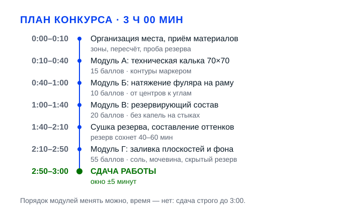
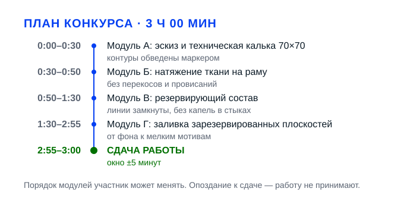

Роспись по шелку (Р)
Задания ниже — официальные файлы «Абилимпикс» (источник: abilympics-russia.ru), разложенные по категориям. Решения написаны по тексту задания, регламенту и критериям оценки; в них указано, что именно проверяет эксперт.
Школьник
14–16 лет, базовый уровень заданияВыдержка из официального конкурсного задания: страницы, относящиеся к категории «Школьник» (стр. 5–7 источника).
Пошаговое решение
Конкурсное задание по компетенции «Роспись по шелку» в категории «Школьники» — это роспись шейного платка 50×50 см в технике холодного батика по теме, которую объявляют на площадке. Работа идёт четыре модуля: шаблон на кальке в натуральную величину (30 минут, 15 баллов), натяжение фуляра на раздвижную раму (20 минут, 10 баллов), резервирующий состав по контуру (40 минут, 20 баллов) и заливка зарезервированных плоскостей красителями (1 час 30 минут, 55 баллов). Всего три часа и 100 баллов, причём порядок модулей участник может менять сам. Тема, колорит и набор орнаментальных мотивов могут измениться на 30 %, поэтому заготовленная дома композиция почти никогда не подходит целиком, а техника исполнения меняться не может. Ниже — весь путь по шагам, от приёмки набора до сдачи изделия, с цифрами, допусками и типичными ошибками, которые стоят баллов.

Задача 1. Принять набор и подготовить место под холодный батикМодуль А · старт · время берётся из 30 минут кальки
Роспись платка 50×50 см в технике холодного батика начинается не с краски, а со стола: пока набор не сверен, а свет и рама не поставлены, любая работа идёт вслепую. На старт уходит десять — двенадцать минут из тридцати, отведённых на шаблон, и эти минуты возвращаются сторицей, потому что дальше вы не ищете трубочку от резерва и не выясняете, что калька на десять сантиметров короче изделия.
Действие 1.1. Принять и проверить набор
Шаг 1.1.1
До старта раскладываем на столе всё, что выдано по инфраструктурному листу, и сверяем по списку: калька матовая 50×50 см, фуляр отбеленный из натурального шёлка 100 % набор «Гамма Батик хобби» из пяти баночек по 70 мл с резервирующим составом и трубочкой, набор синтетических кистей, кисть малярная плоская 50–100 мм, палитра, стакан-непроливайка на 175 мл, перманентный маркер с линией 1–4 мм, карандаш HB, ластик, линейка 35–50 см, ножницы и салфетка из микрофибры. Каждую позицию берём в руки, а не отмечаем глазами: пустая баночка резерва обнаруживается на сороковой минуте модуля В.
Приёмка — единственный момент, когда недостающее ещё можно получить, не отрываясь от работы: после старта замена идёт только через главного эксперта. Кроме того, набор входит в критерий «соблюдение правил конкурса» — участник обязан работать тем, что предусмотрено инфраструктурным листом, и появление на площадке чужих красок или своего фена оценивается отдельно, не в вашу пользу.
Список пройден сверху вниз, и против каждой строки предмет лежит на столе. Отдельно проверьте две вещи, которые чаще всего подводят: калька должна быть не меньше 50×50 см без учёта помятого края, а фуляр — целым, без зацепок и заломов, потому что даже маленькая затяжка на шёлке при натяжении превращается в дыру.
Самая частая ошибка — начать с красок и кальки, а крепёж для рамы и трубочку оставить «на потом». Вторая — увидеть, что баночек четыре вместо пяти, и решить обойтись: колорит по теме всё равно потребует пятого цвета, и заливка получится грязной.
Эксперт проходит по площадке в первые минуты и смотрит, чем участник укомплектован. Отдельно фиксируется, обращается ли участник за помощью: по критерию модуля Б натяжение должно быть самостоятельным, без консультаций и помощи волонтёров.
Шаг 1.1.2
Вскрываем баночки по 70 мл и проверяем содержимое: краски взбалтываем десять — пятнадцать секунд, пока не исчезнет осадок на дне, резерв проверяем на стеклянной палочке или на горлышке — он должен стекать ровной струёй, без комков и плёнки. Трубочку отвинчиваем, смотрим наконечник на просвет: в нём не должно быть пробки из засохшего состава. Если резерв густой, как мёд, разводить его водой нельзя — просите замену, потому что разбавленный резерв не держит границу и краситель уходит за линию.
Свойства резерва определяют весь модуль В: он должен проходить сквозь тонкий фуляр насквозь, а не ложиться коркой сверху. Плёнка или комок в наконечнике дают прерывистую линию, и потом именно в этом месте краситель протечёт на соседнюю плоскость — а «качество нанесённой резервной линии» это отдельный критерий на 20 баллов модуля В.
Капните резерв на уголок кальки и разотрите: капля должна быть однородной, без крупинок. Проверьте, что все пять баночек открываются и закрываются без усилия — сорванная резьба на середине работы означает открытую банку до конца конкурса. Заодно проверьте маркер и ножницы: линия на обрезке кальки ровная, ножницы режут, а не жуют.
Классическая ошибка — не проверить наконечник и начать вести контур: первые два сантиметра линии выходят рваными, и их приходится смывать, теряя время и деформируя ткань. Вторая — долить в загустевший резерв воды «чтобы шёл легче».
Эксперт смотрит на подготовку красок косвенно — по тому, как ведёт себя линия на ткани в модуле В. Ровная, без разрывов, линия читается как грамотная подготовка.
Действие 1.2. Организовать место, свет и раму
Шаг 1.2.1
Делим стол на три зоны и держим их до конца конкурса. Слева, если вы правша, ставим раму с натянутой тканью; справа от рамы — палитру и стакан-непроливайку на 175 мл, причём воду наливаем в оба отделения: в одно чистую для разведения, во второе для промывки кисти. За рамой, в глубине стола, кладём кальку с шаблоном, карандаш, ластик и линейку. Кисти ставим в стакан ворсом вверх, малярную плоскую — отдельно, плашмя, чтобы ворс не заломился.
Зоны нужны не для красоты: шёлк впитывает краситель мгновенно, и любое лишнее движение поперёк рамы — это капля на незапланированном участке. Когда палитра и вода стоят сбоку на расстоянии вытянутой руки, рука идёт по короткой дуге и не проходит над работой. Чистота рабочего места входит в критерии модуля Г, и её оценивают в конце, глядя на стол.
Сядьте и проверьте: до палитры вы дотягиваетесь, не вставая и не наклоняясь над рамой; стакан не стоит на пути локтя; на столе нет ничего, что может опрокинуться на ткань. Свободного места справа от рамы должно хватать, чтобы положить кисть, не касаясь края изделия.
Самая частая ошибка — поставить стакан с водой прямо над рамой: одно неловкое движение локтем, и вода уходит на шёлк, оставляя водяное кольцо, которое проявится при заливке. Вторая — держать кисти ворсом вниз: ворс заламывается и кисть перестаёт держать линию.
Эксперт обходит площадку и отмечает организацию места: аккуратный стол читается как понимание технологии, а не как педантичность. Отдельно он отмечает, есть ли на столе свободная зона под кальку и крепёж: по ней видно, продумано ли место заранее или сложилось стихийно.
Шаг 1.2.2
Ставим свет так, чтобы он падал на раму сбоку и чуть сверху, а не в глаза. Если на площадке есть настольная лампа, направляем её на раму под углом примерно 45 градусов: при боковом свете видно, как лежит резерв и где ткань провисает. Тени от руки не должны закрывать рабочую зону — проверяем это, поднеся кисть к центру рамы. Лампу не ставим вплотную к раме: от горячей колбы шёлк пересыхает неравномерно.
Холодный батик — работа на просвет и на блик: и перевод рисунка, и контроль резерва требуют, чтобы свет проходил сквозь ткань. При свете прямо в глаза шёлк блестит, и вы не видите, прошла ли резервная линия насквозь. Ошибка в контроле резерва стоит дороже всего, потому что протечка обнаруживается только после заливки.
Положите руку на раму: тень не должна закрывать больше трети рабочей плоскости. Наклонитесь к центру — на ткани должно быть видно каждое карандашное движение, без бликов, забивающих линию. Заодно проверьте, не бьёт ли свет в глаза при наклоне к работе.
Работать при свете, падающем прямо в лицо: ткань блестит, линия перевода теряется, и контур уводит на два — три миллиметра в сторону, что критично для тонких мотивов. Третья ошибка — поставить лампу так, что она греет ткань: резерв сохнет неравномерно, а краситель на прогретом участке растекается шире.
Эксперт смотрит на перевод рисунка в модуле В: сбитый контур фиксируется как несовпадение резервных линий с технической калькой. Он же смотрит, видит ли участник просвет через ткань: без этого контроль резерва с изнанки становится невозможным.
Шаг 1.2.3
Убираем со стола всё, что не относится к работе: телефон, планшет, наушники по правилам конкурса на площадке запрещены, поэтому оставляем их вне рабочей зоны, а не «в кармане фартука». Бутылка воды для питья разрешена — ставим её на пол или на отдельный край стола, но не рядом с палитрой. Спецодежда по конкурсному заданию не требуется, однако краситель для батика на одежде не отстирывается, поэтому фартук или рабочая рубашка лишними не будут; волосы убираем, чтобы они не касались влажной ткани.
Запрет на гаджеты — не формальность: за нарушение правил конкурса снимают баллы по критерию «соблюдение правил конкурса, санитарных норм и правил безопасности». Одновременно это и вопрос концентрации: холодный батик не прощает отвлечения, потому что краситель растекается по шёлку за секунды и остановить его нельзя.
На столе нет телефона, наушников и планшета; бутылка воды стоит вне зоны рамы; волосы убраны, рукава не свисают на ткань. Проверьте ещё раз перед тем, как взять резерв: после начала модуля В отходить от рамы уже некогда.
Оставить телефон на столе «на беззвучном»: это фиксируется как нарушение, и объяснение «он не звонил» не принимается. Вторая ошибка — длинный рукав, который макается в палитру и переносит краску на светлые участки платка.
Эксперт проверяет соблюдение правил в течение всего конкурса, а не только на входе, и отдельно отмечает чистоту рабочего места в конце. Фартук не обязателен по заданию, но испачканная красителем одежда к концу конкурса тоже отмечается как небрежность.
Действие 1.3. Разобрать тему и условие 30 % изменения
Шаг 1.3.1
Читаем формулировку темы и колорита, которая выдаётся на площадке, и выписываем её карандашом на уголке кальки: тема, колорит (тёплый или холодный), перечень предложенных мотивов. По конкурсному заданию возможны изменения до 30 % — меняются тема, колорит и набор орнаментальных мотивов, могут добавить региональный орнамент, поэтому заготовленная дома композиция почти наверняка не подойдёт целиком.
Критерий прямо требует, чтобы цветовые сочетания соответствовали заданной теме, а композиция была построена из предоставленных мотивов. Если тема «Морозное утро» с холодным колоритом, а платок расписан тёплой охрой и красным, работа теряет баллы сразу по двум пунктам, сколько бы труда в неё ни было вложено.
На кальке появилась короткая запись: тема, колорит, список мотивов. Проговорите вслух, какие два цвета будут главными и какой третий их поддержит — если ответа нет, композиция ещё не придумана. Если тема сформулирована широко, сузьте её до одного образа и запишите его.
Начать рисовать «по памяти» от предыдущего конкурса: смена темы и колорита — самый частый вид 30 % изменения, и старая композиция в новом колорите выглядит чужой. Третья ошибка — запомнить тему «примерно»: на сдаче выясняется, что колорит был задан холодный, а работа вышла тёплой.
Эксперт сверяет тему на сдаче: соответствие колорита заданию — отдельный критерий модуля Г, и он оценивается по первому взгляду на изделие. Он сверяет запись темы с заданием и смотрит, не подменена ли она удобной.
Шаг 1.3.2
Разбираем предложенные мотивы и решаем, какие берём в основу, а какие добавим как авторские элементы. Правило простое: три — пять крупных мотивов разного масштаба плюс два — три мелких, которые поддерживают ритм. Выкладываем мотивы на кальке без приклеивания и смотрим, как они читаются вместе; если два мотива спорят по массе, один из них уменьшаем примерно на треть.
Критерий модуля А требует, чтобы в композиции были использованы предоставленные мотивы, дополненные авторскими элементами. То есть чистое копирование выданного листа теряет баллы за оригинальность, а полная импровизация без выданных мотивов — баллы за соответствие заданию.
Проверьте состав: каждый взятый мотив узнаваем, ни один не обрезан краем кальки, и ни один авторский элемент не спорит с выданными по стилю. Если мотив приходится сильно перерисовывать, чтобы он встал в композицию, лучше его не брать.
Набрать десять мелких мотивов «чтобы было богато»: на платке 50×50 см они сливаются в пёстрое пятно, и критерий сложности композиции не выполняется — сложность путают с количеством. Третья ошибка — взять все выданные мотивы без выбора: композиция превращается в каталог и теряет главное.
Эксперт смотрит кальку целиком и оценивает сложность композиционного решения: читается ли главное, есть ли ритм, не рассыпается ли рисунок на куски. Он отмечает, какие мотивы взяты и чем дополнены: это и есть пункт о сочетании выданного с авторским.
Задача 2. Выполнить шаблон на кальке 50×50 смМодуль А · 30 минут · 15 баллов
Модуль А — это техническая калька, то есть контурный рисунок в натуральную величину будущего изделия. Пятнадцать баллов здесь дают не за красоту, а за композицию: сложность решения, соблюдение законов композиции, использование выданных мотивов с авторскими дополнениями, аккуратность кальки и обводку контуров маркером. Калька станет шаблоном, по которому вы переведёте рисунок на шёлк и по которому эксперт будет сверять резервные линии.
Действие 2.1. Построить формат 50×50 см
Шаг 2.1.1
Кладём кальку матовую на стол и отмеряем квадрат 50×50 см линейкой 35–50 см: сначала одну сторону, от неё вторую под прямым углом, проверяя угол по угольнику или по отношению диагоналей. Диагонали у квадрата равны — если после разметки они разошлись больше чем на три миллиметра, квадрат перекошен и его надо перечертить, а не подрезать на глаз. Режем ножницами длинными движениями от себя, не смыкая лезвия до конца: у кальки тонкий край, и «зажёванная» кромка потом цепляется за ткань.
Роспись выполняется на платке 50×50 см, и шаблон должен быть в натуральную величину — это прямо записано в результате модуля А. Перекошенный квадрат даёт перекошенный рисунок: при переводе на натянутую ткань ошибка в три миллиметра на угле превращается в сдвиг мотива на сантиметр в центре, и резервные линии перестают совпадать с калькой.
Приложите линейку к каждой из четырёх сторон: расхождение с 50 см — не больше одного миллиметра. Сложите квадрат по диагонали — углы должны совпасть, а линия сгиба пройти ровно через противоположные вершины.
Резать кальку «примерно по пятьдесят» без разметки: на глаз ошибка достигает полутора сантиметров, и шаблон уже не соответствует изделию. Вторая ошибка — обрезать кальку вровень с тканью, не оставив запаса для крепления к раме.
Эксперт проверяет кальку на соответствие размеру изделия и отмечает аккуратность выполнения шаблона — ровный край входит в эти баллы. Он же проверяет, не обрезана ли калька под размер ткани: запас для крепления к раме входит в аккуратность шаблона.
Шаг 2.1.2
Внутри квадрата проводим рабочую границу с отступом 1,5–2 см от края — это зона, которая при носке уйдёт в подгибку или окажется на изнанке узла. Линию ведём карандашом HB по линейке, слабым нажимом, и не стираем её до конца модуля. Всё, что рисуем дальше, остаётся внутри этой границы, кроме случаев, когда по композиции нужна кайма по краю: тогда кайма идёт между границей и краем и не должна выходить за отступ.
Платок — не картина в рамке: его край подворачивают, и рисунок, доведённый до самого среза, теряет часть мотива при обработке. Кроме того, отступ читается как поле, а поле — один из законов композиции: оно даёт мотивам воздух и держит их внутри формата.
Проверьте линейкой отступ в четырёх местах: он должен быть одинаковым, иначе квадрат рабочего поля получится со сдвигом, и это сразу видно на готовом изделии. Углы рабочей границы должны сходиться точно, без «хвостиков».
Рисовать от самого края кальки: мотив обрезается при подшивке, и композиция выглядит незавершённой. Вторая ошибка — сделать отступ восемь — десять сантиметров «чтобы надёжнее»: полезная площадь платка уменьшается, и рисунок выглядит мелким для формата.
Эксперт смотрит, как рисунок соотносится с форматом изделия: правильно найденное поле сразу говорит о понимании законов композиции. Он смотрит на готовое изделие: если рисунок упирается в срез, отступ был найден неверно.
Шаг 2.1.3
Находим центр и оси: проводим обе диагонали тонкими линиями и отмечаем точку их пересечения, затем через неё — вертикальную и горизонтальную оси, параллельные краям рабочего поля. Оси делаем еле заметными, карандашом почти без нажима, потому что они служебные и на готовой работе их быть не должно. Если композиция задумана со сдвигом от центра, всё равно сначала строим центр, а потом смещаем относительно него.
Оси — это инструмент равновесия: по ним видно, не «уехала» ли масса мотивов в один угол. Соблюдение основных законов композиции при размещении мотивов на плоскости — отдельный пункт критериев модуля А, и нарушенное равновесие читается даже неспециалистом.
Диагонали пересекаются ровно в середине рабочего поля, расстояние от центра до каждой стороны одинаковое с точностью до двух миллиметров. Оси не «гуляют»: приложите линейку вдоль каждой — она должна лежать параллельно краю.
Строить композицию без осей, «на глаз»: мотивы смещаются вправо и вниз, потому что рука правши тянет рисунок за собой, и работа выглядит заваленной. Вторая ошибка — сделать осевые линии жирными и потом не суметь их убрать.
Эксперт прикладывает линейку к работе и смотрит симметрию: смещённый центр — самый частый и самый заметный дефект школьных работ. Он прикладывает линейку к работе и сравнивает расстояния от мотивов до краёв: разница больше сантиметра читается как сбитый центр.
Действие 2.2. Найти композиционное решение из выданных мотивов
Шаг 2.2.1
Выбираем схему размещения, отталкиваясь от темы: центральная, когда главный мотив стоит в середине и вокруг него развиваются второстепенные; каймовая, когда рисунок идёт полосой по периметру с полем в центре; угловая, когда композиция растёт из одного или двух углов; диагональная, когда движение идёт от угла к углу. Для платка 50×50 см удобнее всего центральная или диагональная: на маленьком формате кайма без сильного центра выглядит как рамка для пустоты.
Схема — это каркас, на котором держится вся дальнейшая работа, и менять её на середине модуля нельзя: мотивы уже будут обведены маркером. Сложность композиционного решения оценивается по кальке, и самая выигрышная сложность — не количество элементов, а продуманная иерархия: главное, второстепенное, фон.
На кальке должна читаться выбранная схема, если смотреть на неё прищуренными глазами: видно главный мотив, видно направление движения. Если при взгляде прищурившись работа распадается на равные куски, схемы нет.
Смешать две схемы в одной работе — центральную и кайму одновременно: на формате 50×50 см это даёт двойной центр и «спор» масс. Вторая ошибка — выбрать кайму без главного мотива: платок выглядит пустым.
Эксперт оценивает кальку по фотографии и вживую: смотрит, есть ли доминанта, и отдельно отмечает, носит ли решение завершённый характер. Он просит назвать схему словами: участник, который не может её назвать, обычно и не строил её.
Шаг 2.2.2
Раскладываем мотивы по схеме, соблюдая три соотношения. Первое — масштаб: главный мотив занимает примерно треть ширины рабочего поля, то есть 14–16 см, средние — вдвое меньше, мелкие — в четыре-пять раз. Второе — ритм: расстояние между однотипными мотивами либо одинаковое, либо сознательно нарастает, но не «как получилось». Третье — воздух: между крупными мотивами оставляем не меньше двух — трёх сантиметров, иначе при заливке красители соседних плоскостей сольются в грязь.
Законы композиции — равновесие, соподчинение, ритм, единство — это и есть те пункты, за которые в модуле А дают баллы. Кроме того, воздух между мотивами имеет чисто технологический смысл: резерв, проведённый слишком близко к соседнему контуру, при заливке перегревается и рвётся.
Отойдите на полтора метра и посмотрите на кальку: главный мотив виден сразу, второстепенные не спорят с ним, между крупными элементами есть просветы. Проверьте линейкой масштаб: главный мотив не меньше 12 и не больше 18 см по большой оси.
Набить плоскость мотивами вплотную, чтобы «не было пусто»: получается ковёр, в котором нет главного, а при заливке красители текут друг в друга. Вторая ошибка — сделать все мотивы одного размера: композиция становится плоской и скучной.
Эксперт смотрит на соотношение масштабов и на просветы: именно по ним видно, работал участник с композицией или просто переносил мотивы на лист. Он измеряет главный мотив: слишком мелкий на формате 50×50 см теряет роль доминанты.
Шаг 2.2.3
Добавляем авторские элементы: связки между мотивами, тонкие стебли и завитки, точки и мелкие листья, которые поддерживают ритм и заполняют пустоты, не создавая нового центра. Авторские элементы рисуем в стиле выданных мотивов — той же толщины, той же степени условности, с той же плавностью линий. Если выданный мотив геометрический, не подрисовываем к нему растительные завитки: стиль должен быть один.
Критерий модуля А сформулирован прямо: в составленной композиции использованы предоставленные мотивы, дополненные авторскими элементами. Без авторских дополнений работа читается как копия раздаточного листа, а за оригинальность замысла баллы дают и в модуле Г.
Проверьте, что каждый авторский элемент либо соединяет два мотива, либо поддерживает ритм, и нет ни одного, который живёт сам по себе. Толщина линии у авторских элементов должна совпадать с толщиной линий выданных мотивов — приложите их рядом.
Дорисовать «красивости» в другом стиле: кружевные завитки вокруг геометрического орнамента выглядят как чужая работа. Вторая ошибка — сделать авторские элементы крупнее выданных и тем самым перебить главный мотив.
Эксперт сравнивает кальку с раздаточным листом мотивов: видно, что взято и что добавлено, и оценивается именно осмысленное соединение. Он отдельно отмечает, поддержаны ли выданные мотивы авторскими элементами или оставлены как есть.
Шаг 2.2.4
Проверяем композицию по четырём законам, каждый раз меняя способ взгляда. Равновесие: смотрим на кальку с расстояния двух метров — масса не должна валиться в один угол. Соподчинение: прищуриваемся — главный мотив должен остаться самым тёмным пятном. Ритм: ведём глазами по работе — движение не должно обрываться на полпути. Целостность: закрываем ладонью любую четверть — оставшееся должно читаться как часть одного рисунка.
Эти четыре проверки — ровно то, что эксперт делает за десять секунд, глядя на кальку. Если композиция не держит равновесия, никакая аккуратность обводки не спасёт: законы композиции в критериях стоят отдельным пунктом и весят больше, чем чистота края.
Все четыре проверки пройдены без оговорок «почти». Если что-то валится, исправляем сейчас, пока линии карандашные: перенос мотива на два сантиметра ластиком занимает минуту, а после маркера — уже перечерчивание всей кальки.
Пропустить эту проверку и сразу обвести маркером: потом видно, что композиция «съехала», но исправлять уже поздно, и работа идёт на сдачу с заведомо потерянными баллами. Третья ошибка — проверять композицию вплотную: с двадцати сантиметров не видно ни равновесия, ни провалов массы.
Эксперт смотрит кальку именно так — с двух метров и прищурившись, поэтому проверка заранее снимает половину замечаний. Он делает те же четыре проверки, что описаны выше, и тратит на них не больше десяти секунд.
Действие 2.3. Обвести контуры маркером и подписать шаблон
Шаг 2.3.1
Обводим все контуры перманентным маркером с толщиной линии 1–4 мм, ведя линию по карандашу одним движением на каждом участке, а не короткими штрихами. Крупные мотивы обводим той стороной стержня, что даёт линию около 2 мм, мелкие детали — тонким концом, если маркер двусторонний. Даём линии подсохнуть минуту, прежде чем класть кальку на ткань: перманентный маркер на матовой кальке сохнет быстро, но свежая линия пачкает фуляр при переводе.
Обводка маркером — отдельный пункт критериев модуля А: контуры мотивов должны быть обведены, потому что калька работает как технический шаблон, по которому сверяют резервные линии. Карандашная линия слишком бледная, чтобы служить эталоном при разборе работы, а маркер даёт чёткий контур, видный на просвет.
Линия непрерывная, одинаковой толщины, без разрывов на стыках и без «хвостов» за пределами контура. Проверьте на просвет у окна: все замкнутые плоскости должны быть замкнуты, без пропусков длиннее миллиметра. Служебные оси и диагонали стираем сразу после обводки: на шаблоне остаются только контуры рисунка.
Обводить быстро, короткими штрихами: на стыках получаются утолщения и «узелки», и по такому шаблону резерв потом ведут с ошибкой. Вторая ошибка — обвести не все линии, оставив часть карандашных: на ткани эти участки окажутся без ориентира.
Эксперт проверяет именно обводку маркером — это измеримый пункт, его видно и на кальке, и по совпадению резерва с шаблоном. Он смотрит и на то, обведены ли контуры одним типом линии: смесь толстых и тонких штрихов читается как небрежность.
Шаг 2.3.2
Подписываем кальку в углу рабочего поля мелким шрифтом: фамилия и имя, категория, тема и колорит задания. Подпись делаем в зоне, которая уйдёт в подгибку, чтобы она не попала на лицевую сторону платка. Затем кладём кальку под раму и проверяем, что она не помялась и не перекрывает рабочую плоскость ткани. Подпись ставим мягким карандашом или тонким маркером, но не поверх контура: любая надпись, попавшая в рисунок, при переводе проступит на шёлке.
Подпись на шаблоне — это идентификация работы при разборе: эксперт сверяет кальку и изделие, и если шаблон не подписан, его легко перепутать с чужим при переносе на общий стол. Кроме того, записанная тема не даёт уйти в сторону на этапе заливки, когда времени на размышления уже нет.
Подпись читается, тема и колорит записаны полностью, калька лежит ровно, без заломов, и её край выходит за границу ткани на два — три сантиметра для крепления. Подпись не заходит в рабочее поле рисунка, скотч держит кальку по углам и не касается фуляра.
Подписать кальку поверх рисунка: чернила маркера или ручки проступают на ткани. Вторая ошибка — не записать тему: к модулю Г формулировка забывается, и колорит уходит в сторону от задания. Крепить кальку к натянутой ткани скотчем: при снятии он тянет волокна и оставляет зацепки.
Эксперт сверяет подписанную кальку с изделием при оценке: совпадение контуров и темы — прямой аргумент в пользу участника. Он сверяет подпись с заявкой участника: анонимный шаблон при разборе теряет привязку к работе.
Задача 3. Натянуть фуляр на раздвижную раму и перевести контурМодуль Б · 20 минут · 10 баллов
Модуль Б — это десять баллов за натянутую ткань и ещё столько же технической подготовки для модуля В, потому что резерв на провисшей ткани вести нельзя. Критерий здесь измеримый и короткий: натяжение самостоятельное, без консультаций и помощи волонтёров, и ткань натянута равномерно, без перекосов и провисаний. Двадцать минут хватает с запасом, если делать это в правильном порядке, и не хватает, если тянуть «как получится».
Действие 3.1. Собрать и выставить раму
Шаг 3.1.1
Раздвижную раму ставим на стол и освобождаем фиксаторы: у деревянных рам это винты или клинья в углах, у металлических — барашки. Раздвигаем раму так, чтобы внутренний размер был чуть больше изделия: для платка 50×50 см достаточно 51–52 см по каждой стороне. Ткань шириной 90 см даёт запас по 19–20 см с каждой стороны, этого хватает на крепление с шагом кнопок 3–5 см.
Рама меньшего размера, чем изделие, не даёт натянуть края, и рисунок уходит на провисание — а провисание прямо названо в критерии модуля Б как дефект. Слишком большая рама тоже плоха: натяжение получается неравномерным, ближе к центру ткань ложится свободнее, и краситель в центре растекается шире, чем по краям.
Измерьте внутренний размер рамы линейкой по обеим диагоналям: они должны быть равны, иначе рама стоит ромбом. Проверьте, что все фиксаторы затянуты и рама не «играет» при нажатии на угол. Заодно покачайте раму за угол: люфт означает, что фиксатор не дотянут. Крепёж разложите в лоток заранее: при шаге 3–5 см по периметру уходит 40–60 кнопок.
Раздвинуть раму «на глаз» и не проверить диагонали: перекошенная рама тянет ткань по косой, и потом весь рисунок встаёт под углом к нитям. Вторая ошибка — оставить фиксаторы незатянутыми: под натяжением рама складывается в середине работы.
Эксперт осматривает раму до начала натяжения и фиксирует, подготовлена ли она: перекошенная рама сразу объясняет перекос ткани. Он отмечает, сам ли участник собрал раму: помощь в этом действии фиксируется как нарушение самостоятельности.
Шаг 3.1.2
Протираем раму влажной, а потом сухой салфеткой из микрофибры, особенно верхнюю кромку и углы: на дереве остаётся пыль и следы от предыдущих работ, а на металле — масляная плёнка. Руки тоже вытираем насухо, потому что фуляр мгновенно впитывает любое пятно с пальцев, и на белом шёлке это видно как желтоватое облако. Кромку протираем вдоль, а не поперёк, чтобы не загнать пыль в паз.
Пятно от пыли или масла на раме переходит на ткань в момент натяжения и остаётся под красителем навсегда. Убрать его с готового изделия нельзя, а в критериях модуля Г есть аккуратность работы и качество росписи плоскостей и фона — постороннее пятно читается как небрежность.
Проведите пальцем по кромке рамы: на пальце не должно остаться ни пыли, ни тёмного следа. Углы протрите отдельно — там скапливается больше всего. Проведите по кромке белой салфеткой: на ней не должно остаться серого следа, а в углах салфетка остаётся чистой.
Ставить ткань на непротёртую раму: через двадцать минут на шёлке проступает серая полоса по краю, и её приходится либо оставлять, либо смывать, деформируя ткань. Протереть раму только сверху, забыв торцы и пазы: пыль с торца осыпается на ткань уже после натяжения.
Эксперт смотрит на изделие в конце: чистый край платка говорит о том, что рама была подготовлена. Он осматривает край изделия на сдаче: чистая кромка подтверждает, что рама была подготовлена, а не просто вытерта наспех.
Действие 3.2. Натянуть ткань от центра к краям
Шаг 3.2.1
Кладём фуляр на раму лицевой стороной вверх и выравниваем по нитям: находим уточную и основную нить, потянув за обрезной край, и располагаем ткань так, чтобы нити шли параллельно сторонам рамы. Полотняное переплетение фуляра видно на просвет, и по нему легко проверить направление: нить должна идти ровной линией, а не под углом. Запас ткани распределяем равномерно, по 4–5 см на каждой стороне сверх внутреннего размера рамы.
Перекос ткани по нитям — это тот самый «перекос», который назван в критерии модуля Б. Если ткань положена косо, никакое усилие при натяжении не сделает рисунок прямым: контур, переведённый с кальки, ляжет под углом к нитям, и при заливке краситель пойдёт вдоль нити, обнажая ошибку.
Потяните ткань за угол по направлению нити: она должна идти ровно, без сопротивления по косой. Проверьте на просвет у окна — нити образуют правильную сетку, параллельную краям рамы. Проверьте и запас: с каждой стороны рамы должно свисать не меньше четырёх сантиметров ткани.
Натягивать ткань, не выровняв нити: сначала всё выглядит нормально, но к концу натяжения на одном углу собирается диагональная складка, которую уже не убрать без перевешивания всей ткани. Тянуть ткань за обрезной край, не выровняв нити: кромка идёт винтом, и на одном угле появляется диагональная складка.
Эксперт смотрит на направление нитей у края рамы: ровная сетка — первый признак грамотного натяжения. Он смотрит на кромку у рамы: если нити идут под углом к дереву, перекос уже заложен и натяжением его не исправить.
Шаг 3.2.2
Крепим ткань сначала в четырёх точках — по центру каждой стороны, а не по углам. Первую кнопку ставим в середине верхней стороны, вторую — в середине нижней, натягивая ткань к себе; затем середину левой и середину правой. Так натяжение распределяется симметрично, и ткань не уходит в одну сторону. Кнопку вводим под углом к раме, а не вертикально, чтобы шляпка прижимала ткань, а не прокалывала её.
Порядок крепления определяет равномерность: если начать с углов, ткань натянется по диагонали, и центр провиснет. Критерий модуля Б требует равномерного натяжения без провисаний, и проверяется это нажатием в нескольких точках — разница сразу ощущается пальцем.
После четырёх кнопок нажмите на центр рамы: ткань должна пружинить одинаково со всех сторон, без «пузыря». Проверьте, что ткань не сдвинулась по нитям относительно рамы. Между первыми четырьмя кнопками ткань должна быть натянута одинаково: проверьте нажатием в каждой четверти.
Начать с углов: это самая распространённая ошибка, при которой к середине работы центр провисает на пять — семь миллиметров, и резерв в центре ложится шире, чем по краям. Крепить первой кнопкой угол: натяжение уходит по диагонали, и противоположный угол остаётся свободным. Третья ошибка — тянуть кромку ногтем: затяжка при заливке темнеет.
Эксперт проверяет натяжение нажатием пальца в центре и по краям и сравнивает ощущения: разница читается сразу. Он смотрит на порядок крепления в первые минуты: от центра к краям — признак того, что участник понимает механику натяжения.
Шаг 3.2.3
Проверяем натяжение по трём признакам. Первый: нажатие пальцем в центре — ткань пружинит и возвращается, как барабан, но не тянется в сторону. Второй: диагонали — измеряем расстояние от угла рамы до противоположного угла ткани, оно должно быть одинаковым с точностью до трёх миллиметров. Третий: нити — на просвет сетка должна оставаться прямоугольной, без дуг, которые появляются при неравномерном натяжении.
Эти три проверки покрывают весь критерий модуля Б целиком: равномерность, отсутствие перекосов, отсутствие провисаний. Десять баллов здесь берутся не силой рук, а последовательностью — и проверка занимает две минуты, тогда как перевешивание ткани заново забирает все двадцать.
Все три признака в норме: пружинит одинаково, диагонали равны, сетка прямоугольная. Если диагонали разошлись — снимаем крепление с двух противоположных сторон и перевешиваем, не дотягивая до последнего.
Оставить натяжение «на глаз»: обычно ткань перетянута с одной стороны, и при заливке краситель уходит к слабому краю, образуя неровную границу у резерва. Оставить натяжение «на глаз»: обычно ткань перетянута с одной стороны, и при заливке краситель уходит к слабому краю.
Эксперт проверяет натяжение именно так — нажатием и по диагоналям, и десять баллов модуля Б ставятся по факту, а не по впечатлению. Он проверяет диагонали и нажатие в центре: двух движений хватает, чтобы поставить или не поставить десять баллов.
Действие 3.3. Перевести контур с кальки на ткань
Шаг 3.3.1
Подкладываем кальку под натянутую ткань, лицевой стороной маркерных линий к ткани, и совмещаем её с рамой: центр кальки — с центром рамы, края кальки — параллельно нитям ткани. Кальку прижимаем по углам, чтобы она не сдвинулась, пока вы переводите. Если калька чуть больше рамы, лишнее аккуратно подворачиваем под раму, а не обрезаем: по целой кальке потом сверяют резервные линии.
Перевод — это точка, где шаблон превращается в изделие, и сдвиг кальки на полтора сантиметра означает, что весь рисунок смещён относительно центра платка. Критерий модуля В требует совпадения резервных линий с технической калькой, и это совпадение закладывается именно сейчас.
Совмещение проверяем по двум осям: расстояние от центра кальки до левой и правой стороны рамы одинаковое, и нити ткани идут параллельно линиям кальки. Посмотрите на просвет: маркерные линии должны читаться по всей площади, без «слепых» участков.
Положить кальку косо или со сдвигом: на просвет это почти незаметно, а на изделии рисунок оказывается смещённым к одному краю, и композиция теряет равновесие. Подложить кальку маркерной стороной от ткани: линии читаются хуже, и мелкие детали теряются.
Эксперт при разборе накладывает кальку на изделие: сдвиг виден сразу и относится к пункту совпадения резервных линий с шаблоном. Он смотрит, лежит ли калька под рамой во время перевода: работа без шаблона означает перевод по памяти.
Шаг 3.3.2
Обводим контур карандашом HB на просвет: раму удобно поднять к окну или подсветить снизу, тогда маркерные линии кальки видны сквозь фуляр. Линию ведём слабым нажимом, одним движением на участке, стараясь попадать в маркерную линию с точностью до миллиметра. Начинаем с главного мотива и идём к периферии, а не наоборот: главное переводится на свежую руку и на невысохшую ткань.
Карандашная линия — единственный ориентир для резерва: по ней ведут трубочку. Сильный нажим продавливает тонкий фуляр, и в месте вдавления краситель собирается темнее, образуя точку, которую невозможно убрать. Слабый нажим, наоборот, даёт линию, которую не видно под лампой, и резерв уходит в сторону.
Проверьте на просвет: карандашная линия лежит поверх маркерной по всей длине, без разрывов больше двух миллиметров. Ткань в местах перевода не блестит от вдавления и не деформирована. Отдельно проверьте мелкие детали: на них линия чаще всего прерывается.
Вести карандаш с сильным нажимом «чтобы линия была видна»: на шёлке остаётся вдавленная борозда, и краситель в ней темнеет. Вторая ошибка — переводить с прищуренным глазом и без света снизу: половина мелких деталей пропускается.
Эксперт смотрит на точность перевода при оценке модуля В: сбитый контур означает, что резерв не совпадёт с калькой. Он сверяет переведённый контур с калькой на просвет: расхождение больше двух миллиметров уже заметно.
Шаг 3.3.3
Проверяем полноту перевода: откладываем кальку в сторону и осматриваем ткань по квадратам — от левого верхнего к правому нижнему, чтобы не пропустить участок. Считаем замкнутые плоскости: их должно быть столько же, сколько на кальке, потому что каждая незамкнутая плоскость при заливке выпустит краситель наружу. Мелкие детали дорисовываем сразу, пока помните, где они были.
Замкнутость контура — техническая основа холодного батика: краситель заливают внутрь плоскости, и если контур где-то не переведён, резерв там не проложат, и краска уйдёт на соседний участок. Такой дефект в модуле Г стоит сразу нескольких баллов, а исправить его на готовой работе невозможно.
Обойдите ткань по периметру и по центру: все линии на месте, все плоскости замкнуты. Сверьтесь с калькой, приложив её сбоку и водя пальцем по контуру — так пропуски находятся быстрее, чем глазами. Считайте плоскости вслух: так пропуск обнаруживается надёжнее, чем при молчаливом осмотре.
Пропустить проверку и сразу взяться за резерв: через десять минут выясняется, что не переведена одна внутренняя линия, и её приходится вести по памяти уже поверх готовых резервных линий. Пропустить проверку и сразу взяться за резерв: через десять минут выясняется, что не переведена внутренняя линия.
Эксперт отмечает полноту перевода косвенно, через качество резерва: разрывы и «слепые» участки видны на изделии. Он отмечает полноту перевода по числу замкнутых плоскостей: незамкнутая плоскость — прямой путь к протечке в модуле Г.
Задача 4. Нанести резервирующий состав по контуруМодуль В · 40 минут · 20 баллов
Модуль В — самый необратимый: проведённую резервную линию уже не исправить, её можно только смыть, а вместе с ней уйдёт и часть перевода. Двадцать баллов ставят за четыре вещи: совпадение резервных линий с технической калькой, аккуратность линии, её чистоту (резерв не испачкан красителем) и равномерность без капель в местах стыков. Сорок минут на платок 50×50 см — это спокойный темп, если рука поставлена до первой линии.
Действие 4.1. Подготовить трубочку и поставить руку
Шаг 4.1.1
Проверяем трубочку от резерва: наконечник должен быть чистым, без пробки, отверстие — не больше миллиметра, иначе линия выйдет толстой и «поплывёт» по ширине. Если наконечник забит, прочищаем его тонкой иглой от шприца или срезаем самый кончик под углом 45 градусов острыми ножницами — срез под углом даёт ровную линию и не цепляет ткань. Баночку с резервом перед набором не трясём, а медленно перекатываем между ладонями: при тряске образуется пена, и первые сантиметры линии выходят пузырчатыми.
Пробка или пена в наконечнике — причина двух самых дорогих дефектов модуля В: прерывистой линии и капель в местах стыков. Оба названы в критериях отдельно, и каждый стоит части из двадцати баллов. Срез под углом, кроме того, даёт стабильную толщину линии на всём протяжении.
Выдавите резерв на палитру: он должен идти ровной струёй, без пузырей и комков. Проведите линию длиной десять сантиметров по обрезку кальки — она должна быть непрерывной и одинаковой по толщине. Если линия на кальке выходит толще двух миллиметров, наконечник пора срезать ещё раз.
Начинать работу забитым наконечником: первые два — три сантиметра линии выходят рваными, и их приходится смывать, а вместе с резервом смывается карандашный перевод. Третья ошибка — заполнять трубочку до самого края: при наклоне резерв выливается на ткань через верх.
Эксперт подходит к раме в начале модуля В и смотрит на инструмент: чистая трубочка с ровным срезом — признак того, что участник работал с этой техникой.
Шаг 4.1.2
Делаем пробу на обрезке фуляра, оставшемся от раскроя, или на уголке ткани за рабочей границей: ведём линию с той же скоростью, что и на изделии, и смотрим, как резерв ложится. На фуляре полотняного переплетения линия должна лечь ровно, без растекания волокон, и слегка заблестеть. Если резерв растекается шире двух миллиметров, значит состав слишком жидкий, и линии будут «толстеть» на поворотах.
Проба стоит тридцать секунд и снимает главный риск: на тонком шёлке резерв ведёт себя иначе, чем на плотной ткани, и обнаружить это на середине контура — значит получить разную толщину линии на одном изделии, что прямо противоречит критерию равномерности.
Линия на пробе непрерывная, толщиной около миллиметра, без «усов» по краям и без пропусков. Проведите вторую линию рядом и сравните: они должны быть одинаковыми по ширине. Сравните пробу с толщиной карандашной линии на ткани: резерв должен перекрывать её с запасом в полмиллиметра.
Пропустить пробу и начать сразу с главного мотива: на главном мотиве и видно все дефекты, а исправлять их уже нечем. Пропустить пробу и начать с главного мотива: на нём и видны все дефекты. Вторая ошибка — делать пробу на бумаге: там резерв ведёт себя иначе, и вывод получается ложным.
Эксперт сравнивает толщину линии на разных участках изделия: разнобой читается как отсутствие навыка. Он смотрит, есть ли на столе пробный уголок: работа без пробы почти всегда даёт разнобой в толщине линии.
Шаг 4.1.3
Садимся так, чтобы рама стояла прямо перед вами и до дальнего края можно было дотянуться, не наваливаясь на ткань. Трубочку держим как карандаш, но чуть выше: пальцы на корпусе, наконечник смотрит вниз под углом примерно 45–60 градусов к плоскости ткани. Кисть идёт на весу, опора — ребро ладони или мизинец на деревянной раме, а не на шёлке: при опоре на ткань под ладонью остаётся вдавленная полоса, и резерв в этом месте ложится неровно.
Угол и опора определяют, продавливает ли наконечник ткань. При вертикальной трубочке резерв не проходит сквозь переплетение, а ложится сверху коркой, и краситель при заливке подтекает под неё — это и есть протечка, из-за которой теряются баллы за качество линии и за роспись плоскостей.
Проведите короткий тестовый отрезок на пробном уголке в рабочей посадке: линия должна быть такой же, как на пробе, сделанной раньше. Если рука устала и линия «поехала», смените положение, а не темп. После первых десяти сантиметров линии проверьте посадку: если приходится тянуться, раму поверните, а не наваливайтесь на ткань.
Опереться ладонью на натянутую ткань: под ладонью остаётся вмятина, и резерв в этом месте либо не проходит насквозь, либо собирается в каплю. Работать на весу без опоры: рука дрожит, линия выходит волнистой, а на длинных участках уходит от контура на два — три миллиметра.
Эксперт смотрит на посадку участника в первые минуты модуля: правильная опора на раму сразу видна по ровной линии. Он смотрит на постановку руки и на то, поворачивает ли участник раму под себя: это признак отработанного навыка.
Действие 4.2. Провести основные контуры
Шаг 4.2.1
Линию ведём непрерывно, не отрывая наконечник от ткани на всём протяжении участка, с равномерной скоростью около двух — трёх сантиметров в секунду. Наконечник не прижимаем: он должен скользить по поверхности, а резерв выходить под собственным давлением из трубочки. На поворотах скорость чуть снижаем, но не останавливаемся, потому что в точке остановки резерв накапливается и образует утолщение или каплю. Начинаем с главного мотива и длинных контуров, мелкие детали оставляем на конец, чтобы не касаться рукой свежих линий.
Равномерность — это отдельный пункт критерия: линия должна быть одинаковой по всей длине. Остановки и ускорения дают «бусины» и тонкие участки, а тонкий участок при заливке прорывается, и краситель уходит в соседнюю плоскость, портя сразу две области работы.
Проведите пальцем вдоль линии через минуту: она должна быть одинаковой на ощупь, без бугорков. Посмотрите на неё против света под углом — толщина не должна меняться больше чем в полтора раза. Проверьте скорость: три сантиметра линии должны занимать около секунды.
Вести линию рывками, останавливаясь на углах: в углах собираются капли, и именно там потом появляются протечки. Вторая ошибка — давить на трубочку, чтобы «шло быстрее»: резерв выходит комками и не пропитывает ткань.
Эксперт проводит по линии взглядом от начала до конца: любой разнобой в толщине фиксируется как дефект качества линии. Он смотрит на ритм движения: равномерное ведение линии без остановок читается как поставленная рука.
Шаг 4.2.2
Ведём резерв строго по карандашному переводу, допуская отклонение не больше миллиметра в любую сторону. Если рука уходит, не подправляем линию вторым проходом рядом — лучше довести участок и вернуться к нему после высыхания, нанеся резерв точно по месту. Карандашную линию под резервом не стираем: она закроется составом и на изделии видна не будет. Если резерв ушёл в сторону, доводим участок до ближайшего стыка и только потом возвращаемся, чтобы не вести линию поверх свежей.
Совпадение резервных линий с технической калькой — первый пункт критериев модуля В, и он проверяется наложением кальки на изделие. Второй проход рядом с первым даёт двойную линию, которая читается как небрежность и утолщает контур, съедая плоскость для заливки.
Приложите кальку к раме на просвет и сравните: отклонение по каждому контуру не больше миллиметра, двойных линий нет. Пройдите по периметру работы, а не только по центру, где линии всегда точнее. Отклонение проверяйте по двум-трём контрольным точкам на каждом мотиве.
Подправлять линию вторым проходом «чтобы было ровнее»: получается раздвоенный контур, и при заливке между двумя линиями остаётся белая полоса, которая выглядит как брак. Вести линию «примерно рядом» с карандашом: отклонение накапливается, и к концу мотива резерв оказывается в сантиметре от контура.
Эксперт накладывает кальку на изделие в конце модуля В — это самый быстрый способ увидеть, насколько точно участник держал контур. Он накладывает кальку на изделие: отклонение по контуру видно по каждому мотиву отдельно.
Действие 4.3. Замкнуть стыки и проверить на просвет
Шаг 4.3.1
В местах, где линия начинается и заканчивается, делаем заход на два — три миллиметра в уже проведённый резерв, а не стыкуем «кончик в кончик». Заход выполняем после того, как первый участок подсох, иначе наконечник сдвинет свежий состав. Если линия должна сомкнуться в кольцо, начинаем и заканчиваем в самой незаметной точке контура, а не на видном месте мотива.
Стык — самое уязвимое место холодного батика: там, где две линии просто касаются друг друга, остаётся микроскопический зазор, и краситель находит его первым. «Отсутствие капель в местах стыков» — отдельный пункт критериев, и он как раз про эту операцию.
Посмотрите на стык в лупу или просто вплотную при боковом свете: утолщения нет, разрыва нет, линия продолжается без «ступеньки». Проведите по стыку ногтем рядом, не касаясь, — поверхность должна быть ровной.
Стыковать линии впритык: зазор в полмиллиметра не виден глазом, но при заливке именно через него уходит краситель, и на изделии появляется «язык» чужого цвета. Стыковать линии впритык: зазор в полмиллиметра не виден глазом, но при заливке именно через него уходит краситель.
Эксперт осматривает стыки целенаправленно — это измеримый пункт, и он проверяется по каждому крупному мотиву. Он осматривает каждый стык при боковом свете: утолщение и разрыв видны одинаково хорошо.
Шаг 4.3.2
Проверяем, прошёл ли резерв насквозь: поднимаем раму к свету и смотрим на ткань с изнанки. Резерв, пропитавший фуляр, виден с обратной стороны как более тёмная линия той же конфигурации. Если с изнанки линия прерывается или её нет вовсе, состав лёг коркой сверху, и на этом участке будет протечка — его нужно пройти повторно с изнанки, тонкой линией.
Фуляр тонкий, около 26 граммов на квадратный метр, и резерв обязан пропитать его насквозь — это физика техники, а не пожелание. Проверка с изнанки занимает пять минут и полностью исключает главную причину брака модуля Г, где за качество росписи плоскостей и фона дают больше половины всех баллов.
Все контуры видны с изнанки без разрывов. Отдельно проверьте мелкие детали: на них резерв чаще всего не проходит из-за слишком быстрого движения руки. Проверьте не меньше пяти участков: центр, два края и два самых тонких места контура.
Проверять только с лицевой стороны: лицевая поверхность выглядит идеально, а с изнанки линия прерывается, и первая же заливка показывает это насквозь. Проверять только с лицевой стороны: лицевая поверхность выглядит идеально, а с изнанки линия прерывается.
Эксперт может перевернуть раму и посмотреть на просвет: это стандартный приём проверки качества резерва. Он переворачивает раму к свету: непропечатанные участки видны как светлые разрывы на тёмной линии.
Шаг 4.3.3
Убираем случайные капли: если резерв где-то собрался в бусину, промокаем её уголком салфетки из микрофибры, не растирая, и даём подсохнуть. Каплю, которая уже схватилась, не сковыриваем ногтем — останется вмятина на ткани; лучше оставить её как есть, если она не мешает заливке. Заодно проверяем, не осталось ли следов резерва на пальцах: испачканным пальцем легко поставить пятно на светлой плоскости.
Капля в неположенном месте — это лишняя граница внутри плоскости: краситель обойдёт её и оставит белое кольцо, которого нет в композиции. Аккуратность нанесённой резервной линии входит в критерии, и лишние капли читаются как небрежность даже тогда, когда сама линия ровная.
На изделии нет бусин и потёков резерва, поверхность между линиями чистая, пальцы сухие. Проверьте края работы: у самой рамы капли появляются чаще всего, потому что там рука менее точна. Осмотрите работу при боковом свете: бусины дают тень и видны даже мелкие.
Растирать каплю пальцем: резерв размазывается тонким слоем, и это место перестаёт пропускать краситель — остаётся светлое пятно неправильной формы. Растирать каплю пальцем: резерв размазывается тонким слоем, и это место перестаёт пропускать краситель.
Эксперт осматривает плоскости на просвет и при боковом свете: лишние капли видны как утолщения. Он смотрит на плоскости между линиями: чистая поверхность без бусин говорит о контроле над инструментом.
Действие 4.4. Досушить резерв перед заливкой
Шаг 4.4.1
Даём резерву высохнуть: при комнатной температуре это двадцать — сорок минут, и это время как раз укладывается в конец модуля В. Если площадка разрешает фен, сушим тёплым воздухом с расстояния 20–30 сантиметров, водя соплом вдоль линий, а не в одну точку: горячая струя в упор размягчает состав и размазывает его. Пока идёт сушка, готовим палитру и разводим первые оттенки — время не простаивает.
Сырой резерв при заливке смешивается с красителем, и линия теряет чёткость: граница «плывёт», а в критериях есть отдельный пункт о том, что резервная линия не должна быть испачкана красителем. Кроме того, на сыром резерве кисть прилипает и сдвигает состав.
Проверьте три точки — у края, в центре и на самом толстом стыке: при касании тыльной стороной пальца резерв не липнет и не оставляет следа. Если липнет — дайте ещё пять минут, это дешевле, чем переделывать заливку.
Начать заливку, «пока резерв схватился, но не совсем»: на изделии это даёт грязные, размытые границы и потерю баллов сразу по двум критериям — за качество линии и за качество росписи. Начать заливку, пока резерв сырой: границы поплывут, и вернуть их нечем.
Эксперт перед модулем Г проходит вдоль рам и смотрит, у кого резерв сырой: сырая работа на заливке сразу видна по поплывшим контурам. Он проверяет сухость касанием у края рамы: липкий резерв сразу объясняет будущие поплывшие контуры.
Шаг 4.4.2
Делаем последний осмотр перед заливкой: все плоскости замкнуты, все контуры прошли насквозь, стыки без капель, резерв сухой. Отдельно считаем плоскости, которые предстоит залить, и намечаем порядок — от светлых к тёмным. Если какая-то плоскость осталась незамкнутой, закрываем её сейчас: после первой капли красителя это уже невозможно. Если плоскость осталась незамкнутой, закрываем её сейчас, до первой капли красителя: после начала заливки это уже невозможно.
Заливка идёт девяносто минут, и любая недоделка в резерве обнаруживается именно там, когда исправлять её поздно. Этот осмотр — последняя точка, где ошибка стоит минуты, а не баллов, и он же даёт спокойствие на весь модуль Г. Осмотр занимает пять минут из сорока, а предотвращает потерю баллов сразу по двум модулям.
Обойдите раму по периметру и по центру, сверяясь с калькой: ни одной незамкнутой плоскости, ни одного пропуска. Вслух назовите количество плоскостей — так пропуски находятся надёжнее. Назовите вслух порядок заливки: от светлых плоскостей к тёмным и от главного мотива к фону.
Пропустить осмотр, потому что «и так всё видно»: пропуск обнаруживается на первой же заливке, и краситель уходит за контур, заливая соседние плоскости. Пропустить осмотр, потому что «и так всё видно»: пропуск обнаруживается на первой же заливке.
Эксперт фиксирует завершённость модуля В именно на этом этапе: нанесённые резервом контуры рисунка должны быть готовы к росписи. Он фиксирует готовность модуля В: нанесённые контуры должны быть замкнуты и сухи.
Задача 5. Расписать плоскости красителями и сдать изделиеМодуль Г · 1 час 30 минут · 55 баллов
Модуль Г — это больше половины всех баллов конкурса, и здесь оценивают не отдельные движения, а изделие целиком: завершённость росписи, сложность цветовых сочетаний, качество заливки плоскостей и фона, использование скрытого резервирования, соответствие колорита теме, оригинальность замысла и чистоту рабочего места. Девяносто минут на платок 50×50 см — время, в котором хватает и на заливку, и на эффекты, если не начинать с мелких деталей.
Действие 5.1. Составить оттенки из пяти основных цветов
Шаг 5.1.1
Готовим палитру: в каждую ячейку наливаем по небольшому количеству чистой воды и добавляем краску из баночки на кончике кисти, размешивая до однородности. Отдельно держим чистую воду для разведения и отдельно — для промывки кисти, иначе грязная вода убивает светлые тона. Пять баночек по 70 мл — это концентрат: для платка 50×50 см хватает буквально нескольких капель на оттенок, и разводить «на весь платок» не нужно.
В холодном батике нет белил: самый светлый тон — это сама ткань, а светлота достигается количеством воды. Поэтому палитра с чистой водой важнее, чем кажется: грязная вода даёт серый тон, и колорит перестаёт соответствовать заданной теме — а это отдельный критерий модуля Г.
Каждый разведённый тон должен быть прозрачным, без крупинок и осадка. Проверьте на белой тарелке или на палитре: капля должна выглядеть как цветное стекло, а не как разведённая гуашь. Промытая кисть не должна оставлять цветного следа в чистой воде.
Разводить краску в самой баночке: концентрат разбавляется на весь остаток работы, и вернуть насыщенность уже нечем. Вторая ошибка — макать кисть в баночку после работы другой краской, не промыв: концентрат мутнеет.
Эксперт смотрит на палитру в процессе: чистая палитра с прозрачными тонами читается как понимание материала. Он смотрит на палитру по ходу работы: грязная вода и мутные тона видны сразу и объясняют серый колорит.
Шаг 5.1.2
Смешиваем нужные оттенки под заданный колорит. Если тема тёплая — «Летний день» — основа строится на жёлтом с добавкой красного, а синий идёт только в малых количествах для теней. Если холодная — «Морозное утро», «Голубое небо» — основой становится синий с разбелом водой, а тёплые вкрапления занимают не больше десятой части площади. Промежуточные тона получаем простыми парами: жёлтый с синим даёт зелёный, красный с синим — фиолетовый, красный с жёлтым — оранжевый, а третий цвет в смеси всегда приглушает первые два.
Критерий требует, чтобы использованные цветовые сочетания соответствовали заданной теме, а грамотность цветотонального решения оценивается отдельно. Пять цветов набора дают всю нужную гамму, но только если смешивать их осознанно: три и больше краски в одной смеси почти всегда дают грязь, которую видно на шёлке сразу.
Разложите получившиеся оттенки в ряд на палитре и посмотрите на них вместе: должен читаться общий тон — тёплый или холодный. Если в ряду есть оттенок, который выбивается по температуре, его лучше не использовать.
Смешивать «на глаз», без пробы: на шёлке цвет проявляется ярче и светлее, чем в палитре, и подобранный тон оказывается на два шага насыщеннее задуманного. Смешивать «на глаз», без пробы: на шёлке цвет ярче, чем в палитре, и тон выходит на два шага насыщеннее.
Эксперт оценивает колорит готового изделия целиком: единство температуры и гармония оттенков — прямой пункт критериев. Он оценивает колорит изделия целиком: единство температуры видно с первого взгляда.
Шаг 5.1.3
Проверяем каждый оттенок на пробном уголке фуляра — на том же шёлке, а не на бумаге, потому что фуляр даёт другую светлоту и другое растекание. Наносим каплю, даём высохнуть и смотрим цвет в сухом виде: он светлее влажного примерно на десять — пятнадцать процентов. Рядом с каждой ячейкой палитры кладём мазок на полоске, чтобы видеть весь набор в одном масштабе и не путать похожие тона.
Проба на бумаге бесполезна: бумага впитывает иначе, и цвет на ней темнее и глуше. Ошибка в тоне обнаруживается на изделии, когда плоскость уже залита, а исправлять её можно только затемнением — то есть потерей светлоты, которая в композиции часто важнее насыщенности.
Сухой мазок на пробной полоске совпадает с задуманным тоном, все оттенки читаются как один ряд. Если тон легче, чем нужно, добавьте краски в палитру, а не на ткань. Сухой мазок должен совпасть с задуманным тоном на всех оттенках, а не на двух-трёх.
Пробовать цвет прямо на изделии в незаметном месте: на платке 50×50 см нет незаметных мест, и любая проба останется частью рисунка. Пробовать цвет прямо на изделии: на платке 50×50 см нет незаметных мест. Вторая ошибка — судить о цвете по влажному мазку: он темнее сухого примерно на десятую часть, и вся работа выходит светлее замысла.
Эксперт сравнивает задуманный колорит с готовым изделием: продуманный ряд оттенков виден по мягкости переходов между плоскостями. Он сравнивает задуманный колорит с готовым изделием: мягкость переходов выдаёт продуманный ряд оттенков.
Действие 5.2. Залить крупные плоскости и фон
Шаг 5.2.1
Намечаем порядок заливки и придерживаемся его: сначала самые светлые плоскости, потом средние, в конце тёмные и фон. Внутри мотива идём от центра плоскости к её краям, чтобы краситель растекался к резерву сам, а не подгонялся кистью. Если в композиции есть белые участки, их оставляем нетронутыми до самого конца и держим от них руку на расстоянии. Белые участки, если они есть в композиции, обводим для себя карандашом на кальке и держим от них руку на расстоянии.
Порядок от светлого к тёмному — не традиция, а единственный способ сохранить чистоту: тёмный краситель, попавший в светлую плоскость, не смывается, а светлый в тёмном просто исчезает. Кроме того, при таком порядке вы всегда знаете, сколько плоскостей осталось, и можете рассчитать время на девяносто минут.
К моменту перехода к тёмным тонам светлые плоскости должны быть залиты полностью, без белых «дыр» у резерва. Проверьте по кальке: каждая намеченная плоскость имеет свой цвет. Сверьтесь с калькой: у каждой плоскости должен быть намеченный цвет.
Начать с фона: он занимает больше всего площади и требует времени, а в результате главный мотив заливается в спешке и выглядит слабее фона, что ломает соподчинение. Начать с фона: он занимает больше половины площади, и главный мотив заливается в спешке.
Эксперт смотрит на распределение тона по площади: главное должно читаться как главное, а не теряться в тёмном фоне. Он смотрит на распределение тона: главное должно оставаться самым контрастным местом.
Шаг 5.2.2
Заливаем плоскость мягкой синтетической кистью среднего размера: набираем краску и ведём от края к центру, не доводя ворс до резервной линии на один — два миллиметра. Краситель сам дойдёт до резерва за счёт капиллярного растекания по шёлку. Если нужно закрыть большую плоскость, работаем полосами с небольшим перекрытием и не возвращаемся к уже начатому участку — по подсыхающему краю получается тёмная граница.
Фуляр впитывает мгновенно, и краситель идёт по волокну быстрее, чем движется кисть. Подводя краску прямо к резерву, легко передать лишнее, и она перельётся через линию — а «качество росписи красителями зарезервированных плоскостей» это ключевой пункт модуля Г.
Краситель дошёл до резерва ровно, без «языков» и потёков, плоскость залита равномерно, без светлых и тёмных полос. Посмотрите на неё с наклоном: при боковом свете видно, где краска легла неравномерно.
Переливать краску через резерв: одна капля уходит в соседнюю плоскость, и там появляется пятно чужого цвета, которое уже не убрать. Вторая ошибка — возвращаться кистью к подсыхающему краю: остаётся тёмная полоса-«шов».
Эксперт проверяет границы плоскостей: чистый переход у резерва — главный признак аккуратной заливки. Он проверяет границы плоскостей на просвет: чистый переход у резерва и отсутствие «языков» — главный признак аккуратной заливки, и по нему ставится большая часть баллов модуля Г.
Шаг 5.2.3
Фон заливаем плоской малярной кистью шириной 50–100 мм: она набирает краску и укрывает большую площадь за один проход. Ведём широкими полосами в одном направлении, начиная от верхнего края рамы и двигаясь вниз, с перекрытием примерно в треть ширины кисти. Краску на кисть берём немного и распределяем быстро, не давая ей высохнуть на ворсе. Кисть держим почти плашмя, чтобы ворс шёл по ткани, а не царапал её.
Фон на платке — это до половины площади, и тонкой кистью его заливают двадцать минут вместо пяти, а неровности всё равно остаются. Малярная кисть даёт ровный тон, но требует скорости: шёлк сохнет на глазах, и по сухому краю остаётся видимая граница, которая читается как дефект качества росписи фона.
Тон фона ровный по всей площади, без полос и пятен, граница у резерва чистая. Проверьте, подняв раму к свету: полосы видны на просвет отчётливее, чем при верхнем освещении. Полосы проверяйте на просвет: при верхнем свете они маскируются блеском влажного шёлка.
Заливать фон маленькой кистью «аккуратно, чтобы не задеть мотивы»: тон ложится полосами, а времени уходит вдвое больше. Вторая ошибка — набрать краску на всю кисть: она стекает с ворса каплей прямо на работу. Набирать краску на всю кисть: она стекает с ворса каплей прямо на работу.
Эксперт оценивает фон отдельно: ровный тон без полос — это то, что отличает работу школьника от ученической пробы. Он оценивает фон отдельно от мотивов: ровный тон без полос поднимает всю работу на уровень выше.
Шаг 5.2.4
Следим за подтёками у резерва: если краска где-то собралась у линии и вот-вот пойдёт дальше, промокаем её сухим уголком салфетки из микрофибры, прикладывая, а не растирая. Промокание делаем сразу, пока краситель влажный: через минуту он уже в волокне, и убрать его нельзя. Салфетку меняем часто — переполненная салфетка переносит краску обратно на ткань.
Протечка через резерв — самый частый и самый дорогой дефект: она портит сразу две плоскости, и в критериях это отражается и на качестве линии, и на качестве росписи. Аккуратность работы оценивается по всему изделию, и одно пятно перечёркивает впечатление от целого платка.
У каждой резервной линии граница чистая, соседние плоскости держат свой цвет. Пройдите взглядом по всему периметру работы: подтёки появляются в первую очередь на длинных прямых участках и в углах мотивов.
Растирать подтёк пальцем или кистью: пятно увеличивается, и вместо одной точки получается размытая область, которая читается как грязь. Растирать подтёк пальцем: пятно увеличивается, и вместо точки получается размытая область.
Эксперт осматривает изделие на просвет: протечки видны как более тёмные участки по другую сторону резервной линии. Он осматривает изделие на просвет: протечки видны как тёмные участки по другую сторону резервной линии.
Действие 5.3. Сделать переходы и фактуры солью и мочевиной
Шаг 5.3.1
Переходы делаем по сырому: наносим первый тон, и пока он блестит, вводим второй рядом и слегка стягиваем границу кистью на стыке, ведя её поперёк границы. Работать надо быстро — на фуляре «сырое окно» длится около минуты, потом края подсыхают и переход перестаёт образовываться. Если переход нужен длинный, смачиваем участок чистой водой заранее и вводим краску в мокрое.
Плавный переход — это и есть «сложные цветовые сочетания», за которые в модуле Г дают баллы. Резкая граница двух тонов на шёлке выглядит жёстко, а мягкая растяжка читается как живопись и сразу поднимает уровень работы, не требуя дополнительных мотивов.
На границе нет видимой полосы: один тон перетекает в другой без ступеньки. Посмотрите на участок прищуренными глазами: если граница читается как линия, переход не получился. Проверьте границу при боковом свете: ступенька видна как тень.
Пытаться сделать переход по подсохшему: краска ложится сверху, и на стыке остаётся тёмная полоса, которую уже не размыть. Вторая ошибка — водить кистью вперёд-назад: получается «мыло» вместо растяжки.
Эксперт смотрит на мягкость переходов: это самый быстрый способ отличить работу, где автор понимает технику. Он смотрит на мягкость переходов: это самый быстрый способ отличить работу, где автор понимает технику.
Шаг 5.3.2
Соль используем на влажной поверхности: пока краситель блестит, посыпаем участок крупной солью из щепотки, стараясь распределить её равномерно. Крупинки втягивают краситель и оставляют светлые звёздочки с тёмным ободком — эффект проявляется через одну — две минуты. Когда рисунок проявился, соль стряхиваем наклоном рамы над лотком, а остатки счищаем сухой кистью после полного высыхания.
Соль — один из двух разрешённых заданием приёмов для дополнительных эффектов, и она даёт фактуру, которой нет у обычной заливки: это работает на пункт о сложности технических приёмов. Но соль, оставленная на ткани, продолжает тянуть краситель и после высыхания, и вместо звёздочек получаются грязные пятна.
Звёздочки мелкие, равномерные, с чётким светлым центром. Если соль насыпана кучей, остаётся одно большое белое пятно — значит, слой красителя был слишком влажным и соли слишком много. Соль должна лежать отдельными крупинками, а не слоем: слой даёт одно большое белое пятно.
Сыпать соль на подсохшую ткань: эффекта нет, а крупинки остаются и потом проступают белыми точками. Вторая ошибка — не стряхнуть соль вовремя. Сыпать соль на подсохшую ткань: эффекта нет, а крупинки остаются и потом проступают белыми точками.
Эксперт отмечает использование соли как сложность приёма, но только если эффект выглядит управляемым, а не случайным. Он отмечает соль как сложность приёма, но только если эффект выглядит управляемым, а не случайным.
Шаг 5.3.3
Мочевину (карбамид) применяем, когда нужен мягкий, долгий переход: чайную ложку растворяем в ста миллилитрах воды и либо добавляем в краску, либо смачиваем участок перед заливкой. Мочевина удерживает влагу, и «сырое окно» растягивается с минуты до трёх — пяти, чего хватает на длинную растяжку без спешки. Работаем по участку площадью не больше ладони, иначе раствор высохнет раньше, чем вы дойдёте до края.
Второй разрешённый приём из задания, и самый удобный для школьной категории: он даёт время подумать. Без него переход на большом участке почти всегда получается с полосой на стыке, а с ним — ровным, и это прямо влияет на баллы за грамотность цветотонального решения.
Переход получился мягким, без полос, время работы на участке выросло заметно. Если раствор высох и краска снова начала схватываться, участок можно увлажнить чистой водой из кисти и продолжить. Если раствор высох и краска начала схватываться, участок увлажняют чистой водой и продолжают.
Переувлажнить ткань раствором: краситель расползается за намеченные границы, и резерв держит хуже, потому что вода размягчает состав. Переувлажнить ткань раствором: краситель расползается за намеченные границы, и резерв держит хуже, потому что вода размягчает состав.
Эксперт смотрит, применены ли разрешённые приёмы осознанно: соль и мочевина в критериях стоят как сложность работы. Он смотрит, применены ли разрешённые приёмы осознанно: соль и мочевина в критериях стоят как сложность работы.
Действие 5.4. Ввести скрытое резервирование и проработать детали
Шаг 5.4.1
Скрытое резервирование делаем до заливки плоскости или между двумя заливками: наносим резерв не по видимому контуру, а внутри плоскости — точками, короткими штрихами, тонкими прожилками, которые повторяют движение мотива. Краситель обтекает эти точки и линии, и на цветном фоне остаются светлые «искры» и жилки, не обведённые контуром. Резерв для этого берём тот же, но ведём тоньше: наконечник почти касается ткани, линия идёт короткими отрезками по два — четыре миллиметра.
Метод скрытого резервирования назван в критериях модуля Г отдельным пунктом, и это самый дешёвый способ поднять сложность работы: он не требует новых мотивов и не занимает много времени. Кроме того, он даёт фактуру, которой не бывает при обычной заливке, и работа перестаёт выглядеть плоско.
На залитой плоскости видны светлые точки и прожилки, при этом контуров вокруг них нет. Проверьте, что резерв прошёл насквозь: если точка не проявилась, значит состав лёг слишком тонко и краситель его перекрыл.
Наносить скрытый резерв на уже подсохшую заливку без последующего увлажнения: эффект не проявится, потому что краситель уже в волокне. Вторая ошибка — рисовать скрытым резервом полноценный контур: это уже не скрытое резервирование, а обычная обводка.
Эксперт ищет в работе именно этот приём: он назван в критериях и оценивается как отдельный показатель сложности. Он ищет в работе именно этот приём: скрытое резервирование названо в критериях отдельным пунктом и оценивается как сложность.
Шаг 5.4.2
Прорабатываем детали тонкой кистью из набора — той, что даёт линию около миллиметра: обводим мелкие элементы, ставим точки-тычинки, усиливаю тени в углублениях мотива. Работаем по полностью высохшей заливке, иначе кисть снимет верхний слой краски и оставит светлое пятно. Краску для деталей берём насыщеннее фоновой на один-два тона: на шёлке тонкие линии визуально светлее, чем кажутся в палитре.
Детали — это то, что отличает завершённую роспись от залитых плоскостей, и критерий «роспись изделия завершена» проверяется именно по ним. Сложность работы оценивается по количеству и сложности выбранных элементов, и тонкая проработка добавляет её без риска перегрузить композицию.
Мелкие элементы читаются, линии ровные, тени лежат на месте и не спорят с основным тоном. Посмотрите на работу с расстояния метра: детали должны поддерживать мотив, а не рябить в глазах. Прищуренный взгляд должен дать три-четыре ясные тональные ступени с главным пятном на первом плане.
Работать тонкой кистью по сырому: ворс снимает краситель, и на месте линии остаётся светлая борозда. Вторая ошибка — обвести детали чёрным: чёрный в холодном батике глушит цвет, и работа теряет колорит.
Эксперт оценивает завершённость: недоработанные детали видны как белые или пустые участки внутри мотивов. Он смотрит на работу с расстояния и прищурившись: так проверяется тоновая структура и видно, держит ли композиция главное.
Действие 5.5. Высушить, проверить, убрать место и сдать работу
Шаг 5.5.1
Проверяем завершённость по чек-листу из критериев: роспись закончена на всей площади, включая фон и края у рабочей границы; нет белых участков, которых не было в композиции; колорит соответствует теме; композиция держит равновесие и главный мотив читается; резерв нигде не испачкан красителем. Отдельно смотрим на платок с расстояния двух метров и с изнанки — на просвет видны пропуски и протечки.
Модуль Г оценивают по пятнадцати с лишним пунктам, и почти все они проверяются именно этим осмотром. Пропущенный белый участок у края стоит баллов за завершённость, а протечка — баллов за качество росписи, и то и другое исправляется за минуту, пока работа на раме.
Чек-лист пройден целиком, замечаний нет. Если что-то нашлось, исправляем сейчас: на снятой с рамы ткани исправлять уже неудобно, а на сданной — невозможно. Пройдите по чек-листу вслух, называя каждый пункт: так пропуски находятся надёжнее.
Сдавать работу, не посмотрев на неё с расстояния: с близкого расстояния не видно ни тонального разнобоя, ни пустых участков. Сдавать работу, не посмотрев на неё с расстояния: вблизи не видно ни тонального разнобоя, ни пустых участков у края.
Эксперт проводит осмотр изделия целиком, и первые замечания касаются именно завершённости и чистоты. Он начинает осмотр с целого и только потом смотрит детали: первое впечатление от платка и есть оценка завершённости.
Шаг 5.5.2
Сушим работу на раме, не снимая: при комнатной температуре это двадцать — тридцать минут, феном — не ближе двадцати сантиметров и только тёплым воздухом. Если по регламенту площадки предусмотрено закрепление красителя, проглаживаем изделие утюгом с изнанки через хлопковую ткань по две — три минуты с каждого участка, без пара. Снимаем с рамы только после полного высыхания, аккуратно вынимая крепёж, а не сдёргивая ткань.
Влажный шёлк при снятии с рамы тянется, и рисунок деформируется: мотивы, которые были круглыми, становятся овальными. Проглаживание через ткань закрепляет краситель, и при оценке изделие выглядит ровным, без заломов — а аккуратность работы входит в критерии.
Ткань сухая на ощупь, не липнет, рисунок не смазывается при касании. Края изделия ровные, без волн от крепления; на изнанке нет пятен красителя, прошедшего насквозь. Проверьте изнанку: на ней не должно быть пятен красителя, прошедшего сквозь ткань.
Снимать с рамы влажную работу «чтобы не ждать»: рисунок деформируется, и вернуть форму уже нельзя. Вторая ошибка — гладить с паром: краситель под парами расплывается. Снимать с рамы влажную работу: рисунок деформируется, и вернуть форму уже нельзя.
Эксперт осматривает изделие в разложенном виде: ровная поверхность без заломов и пятен на изнанке читается как аккуратность. Он осматривает изделие в разложенном виде: ровная поверхность без заломов читается как аккуратность работы.
Шаг 5.5.3
Убираем рабочее место до состояния, в котором его не стыдно показать: краски закрыты, кисти промыты и убраны ворсом вверх, палитра и стакан вымыты, салфетки в мусоре, обрезки кальки и ткани собраны, рама протёрта. Стол протираем насухо, потому что капля красителя, оставленная на столе, при сдаче выглядит как незаконченная уборка. Кисти промываем тёплой водой с мылом до полного исчезновения цвета в воде, потому что краситель для батика въедается в ворс и через день кисть становится жёсткой.
Чистота рабочего места названа в критериях модуля Г отдельным пунктом, и это самые лёгкие баллы конкурса: их получают все, кто просто убрал за собой. Одновременно это проверка отношения к работе — эксперт видит, довёл ли участник дело до конца. Чистое место — ещё и условие безопасной работы: пролитый краситель на полу делает плитку скользкой.
Стол пустой и сухой, инструмент на местах, мусор вынесен. Пройдите по столу глазами эксперта: что бы вы отметили сами, если бы принимали площадку? Проверьте стол на ощупь: он должен быть сухим, без липких пятен от резерва.
Оставить на столе разведённые краски и грязные кисти: баллы за чистоту места снимаются, а испорченные кисти больше не годятся для работы. Оставить на столе разведённые краски и грязные кисти: баллы за чистоту снимаются.
Эксперт проходит по площадке после сдачи: состояние стола фиксируется в оценочном листе. Он проходит по площадке после сдачи и отмечает состояние стола в оценочном листе, не спрашивая объяснений.
Шаг 5.5.4
Сдаём работу в отведённое время: платок складываем или раскладываем так, как требует регламент площадки, прикладываем подписанную кальку-шаблон и называем тему, колорит и использованные приёмы. Говорим коротко: тема, главный мотив, какие эффекты применены. Если работа сдаётся в окно, отмеченное в плане конкурса, не задерживайтесь на последнем штрихе: опоздание к сдаче означает, что работу не принимают.
Сдача — это последний пункт, где можно потерять баллы, и первый, где можно их выиграть: короткое и точное объяснение замысла помогает эксперту увидеть то, что неочевидно, и работает на критерий раскрытия темы и оригинальности проектно-творческого замысла. Калька рядом с изделием подтверждает, что композиция была построена, а не сложилась случайно.
Работа сдана вовремя, калька приложена, тема и приёмы названы. Платок разложен так, чтобы лицевая сторона была видна целиком, без складок поперёк главного мотива. Убедитесь, что платок разложен лицевой стороной вверх и главный мотив не перекрыт складкой.
Задерживаться на последнем мазке и опоздать к сдаче: работу не принимают, и все набранные баллы теряют смысл. Вторая ошибка — сдать платок смятым, не показав лицевую сторону. Задерживаться на последнем мазке и опоздать к сдаче: работу не принимают, и набранные баллы теряют смысл.
Эксперт принимает работу и слушает объяснение: умение назвать свой замысел входит в оценку раскрытия темы. Он слушает объяснение замысла: умение назвать тему и приёмы входит в оценку раскрытия темы и оригинальности.
Студент
учащиеся колледжей и техникумовВыдержка из официального конкурсного задания: страницы, относящиеся к категории «Студент» (стр. 5–7 источника).
Пошаговое решение
Конкурсное задание категории «Студенты» — расписать шейный платок 70×70 см из натурального шёлка-фуляра в технике холодного батика по заданной теме, собрав композицию только из предложенных орнаментальных мотивов. Работа идёт в четыре модуля и укладывается в три часа: тридцать минут на техническую кальку (15 баллов), двадцать на натяжение ткани на раздвижную раму (10 баллов), сорок на резервирующий состав (20 баллов) и полтора часа на роспись красителями (55 баллов). Порядок модулей вы вправе менять, но время внутри них не растягивается: три часа — это всё, что есть, включая сдачу. Главное, что оценивают, — не «красиво ли», а выдержана ли тема, замкнуты ли резервы, чисты ли линии и насколько сложные колористические и технические приёмы вы применили. Поэтому первые сорок минут работают на последние полтора часа: ошибка в кальке и незамкнутый резерв стоят дороже, чем неудачный оттенок.

Задача 1. Организовать рабочее место и принять материалыПодготовка · до старта и первые 10 минут
До первого касания шёлка нужно собрать вокруг себя порядок, в котором всё остальное время будет идти работа: разложенные по зонам инструменты, проверенный фуляр, опробованный на обрезке резерв и понятая тема. Эти минуты не входят в четыре модуля и не оцениваются отдельным баллом, но именно они определяют, побежите ли вы за ножницами в середине резервирования или спокойно проведёте все линии до конца. Здесь же решается колорит: пять красок в наборе — это не пять цветов, а восемь-десять оттенков, если заранее сделать выкраски.
Действие 1.1. Разложить рабочее место по зонам
Шаг 1.1.1
Стол делим на три зоны, и делаем это до того, как развернём шёлк. Слева от рамы кладём сухую зону: кальку, карандаш HB, ластик, линейку 35–50 см, перманентный маркер с толщиной линии 1–4 мм и ножницы — всё, чем работаем до краски, не должно стоять рядом с палитрой. Справа ставим пластиковую палитру, стакан-непроливайку с водой и набор синтетических кистей, а малярную плоскую кисть 50–100 мм кладём отдельно, потому что ею смачивают ткань и заливают фон. В центре — раздвижная рама, а за ней оставляем пустое место под сушку: мокрый батик нельзя ни складывать, ни прислонять к стене.
Чистота и аккуратность рабочего места — отдельный критерий внутри 55 баллов модуля Г, и смотрят на стол не один раз: на входе, в середине росписи и на сдаче. Сухая и мокрая зоны разведены не из педантизма: калька с контуром — единственный документ, по которому вы сверяете резерв, и капля краски, попавшая на неё, стирает участок линии, который потом нечем восстановить. Пустая зона под сушку нужна потому, что расписанный фуляр сохнет не меньше получаса, и класть его в это время некуда.
Проверьте по трём признакам: расстояние от палитры до кальки не меньше длины вытянутой руки, стакан стоит устойчиво и не на краю стола, за рамой есть свободный участок размером больше платка. Пройдите взглядом по столу и найдите хотя бы один предмет, который лежит не в своей зоне, — такой почти всегда есть.
Типичная ошибка — поставить стакан с водой между рамой и палитрой: одно неловкое движение локтем, и вода уходит на ткань, а на мокром шёлке резерв не держится вообще. Вторая — свалить кисти, маркер и краски в одну кучу: кисть, которой набирали резерв, попадает в краску, и линия становится грязной.
Эксперт обходит площадку в первые минуты и отмечает, готова ли зона к работе: разложен ли инструмент, свободен ли стол. Окончательно этот пункт он подтверждает на сдаче, когда видно, поддерживался ли порядок всё время.
Шаг 1.1.2
Садимся так, чтобы рама стояла прямо перед вами, а рабочая рука двигалась свободно по всей площади — от левого нижнего до правого верхнего угла. Свет от лампы или окна должен падать слева, если вы правша, и справа, если левша: тогда тень кисти не ложится на линию, которую вы ведёте. Проверьте наклон рамы: удобнее работать, когда плоскость наклонена к вам примерно на 15–20 градусов, тогда краска не собирается в лужицу у носика трубочки.
Тень на контуре — самая недооценённая причина кривых линий: при 40 минутах на резерв у вас нет времени на переделки, а линия, проведённая по тени, уходит от контура на 2–3 мм, и это прямо бьёт по критерию «совпадение резервных линий с технической калькой». Свободный ход руки важнее, чем кажется: если рама стоит под углом и рука упирается в край стола, линия получается дрожащей на длинных участках.
Положите ладонь на центр рамы и проведите ею по диагонали, не отрывая: рука должна дойти до углов без напряжения в плече. Поднимите кисть над тканью — тень должна уходить в сторону, а не накрывать контур под кистью.
Сесть сбоку от рамы «чтобы удобнее было видеть» — и весь рисунок незаметно смещается в перспективе: круглые мотивы выходят приплюснутыми, а линии, которые кажутся ровными, на плоскости оказываются под углом. Вторая ошибка — работать при верхнем свете: тень падает ровно туда, куда ведёте линию.
Оценивается косвенно, через качество линий: ровный, одинаковый по толщине резерв почти всегда означает, что человек сидел правильно и не тянулся через раму.
Шаг 1.1.3
Убираем со стола всё, что не относится к работе: телефон, планшет, наушники и любые гаджеты на площадке запрещены особыми указаниями конкурсного задания, разрешена только бутылка воды для питья, и её лучше поставить на пол или на отдельный край стола, подальше от рамы. Салфетку из микрофибры кладём под правую руку, чтобы вытирать кисть и пальцы: она не оставляет ворса на шёлке, в отличие от бумажного полотенца. Мусор — обрезки ткани, использованную кальку, обёртки — складываем в отдельный пакет, а не под раму.
Запрет на гаджеты — это правило конкурса, и за его нарушение снимают баллы по критерию «соблюдение правил конкурса, санитарных норм и правил безопасности». Бутылка воды разрешена отдельно, потому что три часа работы без воды — это головная боль и потеря концентрации к последнему модулю, где и лежат 55 баллов. Микрофибра под рукой нужна постоянно: пальцы в краске оставляют на расписанном фоне отпечатки, которые уже не убрать.
На столе нет ничего, кроме инструментов и материалов из инфраструктурного листа; вода стоит так, что до неё надо тянуться в сторону от рамы; салфетка сухая и лежит в пределах досягаемости, не касаясь мокрой зоны. Пакет для мусора закреплён или стоит на полу, а не висит на раме.
Оставить телефон «на всякий случай» под калькой — эксперт это фиксирует, и объяснение «я только посмотреть время» не работает: часы на площадке есть, а правило одно для всех. Вторая ошибка — вытирать кисть о бумажное полотенце: ворсинки остаются на шёлке и под краской превращаются в бугорки.
Эксперт проверяет стол на старте и в течение конкурса; нарушения правил конкурса выносятся в отдельный протокол и влияют на итоговый балл независимо от качества росписи.
Действие 1.2. Принять и проверить материалы
Шаг 1.2.1
Раскладываем комплект и сверяем его с перечнем: набор красок по ткани и шёлку из пяти цветов в баночках по 70 мл с резервирующим составом и трубочкой, набор синтетических кистей, кисть малярная плоская 50–100 мм, калька матовая 70×70 см, ткань фуляр 70×70 см, маркер перманентный, карандаш чернографитный, ластик, линейка, ножницы, палитра, стакан-непроливайка и салфетка из микрофибры. Каждую позицию отмечаем для себя и сразу откладываем то, чего не хватает или что пришло в негодность. Спорить и искать замену после старта бессмысленно: комплект считается принятым.
Пропавшая трубочка от резерва или баночка краски обнаруживается ровно в тот момент, когда до неё дошла очередь, то есть в самом дорогом месте работы. Восстановить комплект после старта можно только через главного эксперта и только при уважительной причине, а время модуля при этом не останавливается. Пересчёт на входе занимает три минуты и снимает целый класс аварий.
Все позиции списка отмечены; отдельно проверьте, что в наборе красок есть резервирующий состав и трубочка к нему, что калька и ткань именно 70×70, а не 50×50 — на глаз эти размеры путаются, а разница в 20 см ломает всю композицию.
Начать с натяжения ткани, отложив проверку «на потом»: через двадцать минут выясняется, что резерв в наборе один и уже вскрыт на соседнем столе, а трубочка потеряна. Вторая ошибка — молча согласиться с недостачей и решить «обойдусь»: недостача потом всё равно всплывёт, но уже как ваш просчёт.
Смотрит, работает ли участник по перечню: отметки на списке и отложенные в сторону позиции видны сразу и говорят об организованности больше, чем любые слова.
Шаг 1.2.2
Разворачиваем фуляр на столе и проверяем ткань: это должен быть отбеленный натуральный шёлк полотняного переплетения плотностью около 25,8 г/м², шириной 90 см, поэтому на платок 70×70 остаётся полоса кромки, которую при раскрое убирают. Смотрим на просвет: пятна, заломы, следы ржавчины и неровности отбеливания на шёлке не закрашиваются — краска ложится на них пятнами. Определяем лицевую сторону по кромке и характеру блеска, отмечаем направление нити карандашом на припуске.
Натуральный шёлк — единственная ткань, на которой холодный батик ведёт себя предсказуемо: краска растекается по волокну ровно, резерв держится по кромке линии. Синтетическая примесь или залом меняют впитывание, и заливка получается с полосами, которые невозможно выровнять. Пятно на просвет обходится дешевле, чем переделка готового платка: заметив его до натяжения, вы просто смещаете раскрой на 5 см.
Поднимите ткань к свету: рисунок переплетения должен быть равномерным, без утолщений и блестящих полос. Проведите по кромке ногтем — натуральный шёлк даёт сухой шелест, а не глухой шорох. Пятен и заломов на площади 70×70 нет.
Натянуть ткань, не посмотрев на просвет: пятно от воды или масла проявится уже после первой заливки, когда исправлять поздно, и вы теряете и время, и баллы за качество росписи. Вторая ошибка — отрезать платок, не оставив припуска: натянуть ровно по самому краю невозможно, кнопки рвут нити.
Эксперт может попросить показать ткань до натяжения; важна не только её целостность, но и то, что участник умеет определить лицевую сторону и направление нити.
Шаг 1.2.3
Проверяем резервирующий состав: баночку 70 мл хорошо взбалтываем, откручиваем крышку и смотрим на содержимое — оно должно быть однородным, без комков и плёнки, цвет от белого до слегка желтоватого. Отрезаем от фуляра полоску шириной 3–4 см и длиной 15 см, кладём её на ровную поверхность и проводим по ней пробную линию трубочкой: резерв должен идти ровным валиком и не расплываться по волокну. Загустевший резерв не разбавляем водой — он после этого не держит границу.
Пробная линия — это единственный способ узнать характер резерва до того, как он ляжет на изделие: у составов разная вязкость, и от неё зависит скорость ведения линии и толщина носика. Если резерв растекается на пробе, на платке он даст широкие расплывшиеся линии, а это прямой минус по критерию аккуратности и качества резерва в модуле на 20 баллов.
На пробной полоске линия ровная, одинаковой ширины, с чёткими краями; через 10–15 минут она подсохла и не липнет к пальцу. Если линия расползлась или в ней видны пузырьки, трубочку прокалывают заново и пробу повторяют.
Разбавить загустевший резерв водой «чтобы шёл лучше» — самая частая ошибка: вода разрушает плёнку, и краска просачивается через линию, заливая соседние плоскости. Вторая — начать работу, не проверив носик: забитая трубочка выдаёт резерв рывками, и в линии остаются разрывы.
Эксперт видит пробную полоску на столе и оценивает по ней подготовку; на самом изделии он проверяет уже равномерность и отсутствие капель в местах стыков — это отдельные критерии модуля В.
Действие 1.3. Понять тему и отобрать мотивы
Шаг 1.3.1
Читаем формулировку темы целиком, включая указание на колорит, и выписываем на уголке кальки три-четыре слова, которые задают образ: например, для темы «Морозное утро» это холодный колорит, голубой, сиреневый, белый, иней, а для «Летнего дня» — тёплый, жёлтый, зелёный, солнечный. Отдельно отмечаем, какой колорит задан — тёплый или холодный, потому что в 30 процентах изменений конкурсного задания меняются именно тема, колорит и набор элементов.
Соответствие цветовых сочетаний заданной теме — отдельный критерий в 55 баллах модуля Г, и он проверяется не по вашим объяснениям, а по платку: тёплый колорит в холодной теме читается сразу и стоит баллов независимо от техники. Слова, выписанные до начала работы, работают как фильтр: когда через час вы будете выбирать между двумя оттенками, вы будете выбирать их не «по красоте», а по соответствию теме.
На кальке есть запись из трёх-четырёх ключевых слов и пометка о колорите. Проверьте себя: если показать платок человеку, который знает только тему, он назовёт её без подсказки — это и есть рабочий критерий.
Пропустить указание на колорит и собрать композицию «как нравится»: даже технически чистая работа с тёплой охристой гаммой в теме «Голубое небо» теряет баллы за несоответствие колористического решения. Вторая ошибка — прочитать только название темы и не заметить ограничение по элементам.
Эксперт сверяет готовое изделие с формулировкой темы и с заданным колоритом; в протоколе это отдельная строка, и она не зависит от аккуратности исполнения.
Шаг 1.3.2
Раскладываем перед собой предложенные орнаментальные мотивы и выбираем из них три-пять, не больше: главный, поддерживающий и один-два малых для ритма. Рисунок должен состоять только из предоставленных элементов, но допускает авторские дополнения — линию, точку, стилизованную ветку, которая связывает мотивы между собой. Отобранные мотивы сразу перерисовываем на отдельный лист кальки в нужном масштабе, чтобы потом не искать их в общей раскладке.
За критерий «в составленной композиции использованы предоставленные мотивы, дополненные авторскими элементами» в модуле А дают баллы, и проверяется он буквально: эксперт сравнивает мотивы на кальке с выданным набором. Придуманный с нуля сюжет — это нарушение задания, а не творческая находка, и стоит дороже, чем кажется: он тянет за собой снижение по всей задаче. Три-пять мотивов — рабочий минимум: больше не успеть зарезервировать и залить за 40 и 90 минут.
Каждый мотив на вашей кальке можно опознать в предложенном наборе; авторские дополнения не заменяют мотивы, а связывают их. Посчитайте количество плоскостей, которые придётся залить: если их больше двадцати пяти, композиция для полутора часов слишком плотная.
Взять все мотивы, какие есть, «чтобы работа казалась сложнее»: за 40 минут резерв не успевает лечь, а за 90 минут заливка не закрывается, и платок уходит на сдачу с белыми пятнами — это прямой минус за завершённость росписи. Вторая ошибка — дорисовать мотив «по мотивам» и не заметить, что его нет в наборе.
Эксперт сверяет кальку с набором элементов до начала резервирования, часто уже на этапе модуля А; несоответствие фиксируется сразу и обсуждается с участником.
Шаг 1.3.3
Из пяти основных цветов набора собираем палитру на 6–8 оттенков и сразу делаем выкраски на обрезках фуляра: каждый оттенок подписываем карандашом на краю полоски, чтобы через час не путать. Разведения делаем в пластиковой палитре, капля краски на две-три капли воды, и каждый полученный тон проверяем на ткани, а не на палитре: на шёлке цвет садится на полтора-два тона светлее, чем выглядит в лужице.
Умение составлять цветовые растворы из готовых красителей прямо названо в требованиях к квалификации категории «Студенты», а сложность цветовых сочетаний — отдельный критерий модуля Г. Пять баночек дают гораздо больше оттенков, если смешивать их между собой, и именно это отличает студенческий уровень от школьного. Выкраски на ткани нужны потому, что шёлк впитывает краску иначе, чем бумага, и цвет «на глаз» в палитре обманывает.
На обрезках есть 6–8 подписанных выкрасок, они высохли и читаются как отдельные тона. Проверьте, что среди них есть хотя бы один тёмный и один очень светлый: без растяжки по тону композиция выглядит плоской, а это минус за колористическое решение.
Смешивать краски прямо на ткани, на глаз, без выкрасок: к третьей плоскости оттенок уходит, и залить симметричные элементы одинаково уже невозможно. Вторая ошибка — разводить краску в грязной палитре, где остался предыдущий тон: получается мутный цвет, который на шёлке выглядит грязным пятном.
Эксперт обращает внимание на палитру и выкраски как на свидетельство осознанной работы с цветом; в оценке это идёт по строкам о сложности цветовых сочетаний и грамотности колористического решения.
Задача 2. Выполнить техническую кальку 70×70 смМодуль А · 15 баллов · 30 минут
Техническая калька — это чертёж будущего платка: контурный рисунок в натуральную величину, по которому вы будете вести резерв и сверять каждый сантиметр. Тридцать минут модуля уходят на построение квадрата, поиск композиции и обводку контуров маркером, и именно здесь набираются или теряются 15 баллов — за сложность композиционного решения, соблюдение законов композиции, использование предоставленных мотивов и аккуратность кальки. Калька остаётся на столе до сдачи: по ней эксперт проверяет, совпадает ли рисунок на ткани с тем, что было задумано.
Действие 2.1. Построить квадрат и оси
Шаг 2.1.1
Кладём кальку матовую 70×70 см на ровную поверхность и отбиваем на ней рабочий квадрат: отступаем от края по 2–3 см, ставим четыре точки по линейке 35–50 см, соединяем их карандашом HB без нажима и проверяем диагонали — они должны быть равны с точностью до 2–3 мм. Углы проверяем угольником или тем же сравнением диагоналей: у прямоугольника они равны, у трапеции — нет. Лишнее поле за пределами квадрата не обрезаем, оно понадобится для подписей и проб.
Платок 70×70 см — это квадрат, который потом натягивают на раму и оценивают как изделие; перекошенный чертёж даёт перекошенную роспись, и никакая аккуратность линий этого не исправит. Критерий «аккуратность выполненной технической кальки» проверяется именно по построению: ровные стороны, прямые углы, отсутствие двойных и затёртых линий. Проверка диагоналей занимает полминуты и ловит ошибку, которую глаз не видит.
Диагонали квадрата равны, все четыре стороны по 70 см, углы прямые. Приложите линейку к каждой стороне: линия должна идти по краю линейки без просвета и без «волны». Поле вокруг квадрата не меньше 2 см с каждой стороны.
Отмерить 70 см только по двум сторонам и достроить остальные «на глаз»: разница в 5 мм по диагонали превращается в заметный перекос, когда ткань натянут, и кайма на платке пойдёт клином. Вторая ошибка — давить на карандаш: продавленная линия на кальке не стирается и остаётся на просвет вторым контуром.
Эксперт проверяет кальку на просвет и по линейке; перекошенный квадрат виден сразу и снимает балл за аккуратность шаблона.
Шаг 2.1.2
Проводим в квадрате две оси — вертикальную и горизонтальную через середины сторон — и обе диагонали, тонко, карандашом без нажима. Точка их пересечения — центр композиции, от него удобно откладывать все размеры: радиус каймы, положение главного мотива, шаг раппорта. Сразу выбираем схему построения: замкнутая кайма по периметру с рисунком в центре, свободная асимметричная композиция или симметричный раппорт с четырьмя повторами.
Оси и диагонали — это разметочная сетка, которая держит равновесие: без них симметрия «на глаз» всегда уезжает на 1–2 см, а на платке 70×70 это читается как небрежность. Критерий «соблюдение основных законов композиции при размещении мотивов на плоскости» оценивается по готовой кальке, и наличие продуманной схемы видно по тому, как мотивы соотносятся с осями. Выбор схемы до рисования экономит время: перестраивать композицию на кальке дешевле, чем на ткани.
Оси пересекаются точно в центре квадрата, диагонали проходят через углы. От центра до каждой стороны одинаковое расстояние — проверьте линейкой, расхождение больше 3 мм означает, что квадрат или оси построены неверно.
Рисовать сразу мотивы, пропустив оси: к концу модуля выясняется, что главный мотив смещён влево, и вся правая половина остаётся пустой. Вторая ошибка — строить оси жирной линией: она останется на просвет и будет читаться как часть рисунка.
Эксперт смотрит на кальку как на чертёж: видны ли оси, соотнесены ли мотивы с центром, читается ли схема без пояснений.
Шаг 2.1.3
Определяем, будет ли у платка кайма, и если да — откладываем её ширину от края квадрата: для 70×70 удобно 5–8 см, тогда поле каймы читается, но не съедает центр. Внутри каймы отмечаем «безопасную зону» — линию, ближе которой к краю не должно быть мелких деталей: 3–4 см от кромки, потому что именно эта полоса уходит под кнопки при натяжении. Мелкие элементы — точки, тычинки, тонкие веточки — заранее распределяем по средней части квадрата.
Край платка — самая уязвимая часть работы: при натяжении ткань прокалывают кнопками, и рисунок, заведённый под крепление, будет испорчен физически. Ширина каймы влияет и на оценку композиции: слишком узкая кайма выглядит случайной, слишком широкая оставляет пустой центр. Просчитанная заранее кайма даёт ровный ритм по периметру, а это один из признаков сложного композиционного решения.
Линия каймы отстоит от края на одинаковое расстояние со всех четырёх сторон; мелкие детали не заходят в полосу 3–4 см от кромки. Проведите пальцем по краю кальки — ни один мелкий мотив не должен оказаться под будущими кнопками.
Разместить мелкий орнамент вплотную к краю: при натяжении он попадает под кнопки, и после снятия с рамы на платке остаются проколы и смазанный рисунок. Вторая ошибка — нарисовать кайму «по линейке» без учёта того, что ткань при натяжении слегка тянется, и полоса выходит неровной.
Эксперт оценивает, читается ли кайма как осознанный элемент, а не как остаток свободного места; в протоколе это идёт по строке о сложности композиционного решения.
Действие 2.2. Скомпоновать мотивы на плоскости
Шаг 2.2.1
Начинаем с главного мотива: перерисовываем его на кальку в нужном масштабе и ставим на плоскость так, чтобы он занимал примерно треть площади — в центр при симметричной схеме или в точку пересечения третей при асимметричной. Масштаб главного мотива подбираем от формата: на платке 70×70 он должен читаться с расстояния двух метров, то есть быть не меньше 15–20 см по большой оси. Обводим его тонко карандашом, без нажима, чтобы можно было сдвинуть.
Главный мотив задаёт масштаб всей работы, и ошибка в нём обходится дороже всего: мелкий центр на большом платке выглядит как случайное пятно, крупный — не оставляет места для остального. Критерий «сложность композиционного решения» в модуле А оценивает именно это соотношение — насколько масштаб мотивов соответствует формату. Треть площади — рабочий ориентир, который оставляет воздух и при этом не даёт пустоты.
Главный мотив читается с расстояния двух метров, вокруг него остаётся свободное поле, а не тесная рамка из других элементов. Проверьте пропорцию: мотив занимает примерно треть квадрата, не больше половины и не меньше четверти.
Нарисовать главный мотив мелко, «чтобы больше влезло»: в итоге платок выглядит пустым, а мелкие детали не успевают зарезервировать за 40 минут. Вторая ошибка — поставить мотив ровно в геометрический центр при асимметричной схеме: композиция становится статичной, и это читается как отсутствие решения.
Эксперт смотрит на кальку с расстояния и оценивает читаемость главного мотива и его масштаб относительно формата — это первое, что видно.
Шаг 2.2.2
Добавляем поддерживающие мотивы: два-три элемента меньше главного, которые уравновешивают его по массе. Работаем по принципу противовеса: если главный мотив стоит в левом верхнем углу, поддерживающая группа идёт в правый нижний, но легче по размеру и светлее по цвету. Между мотивами оставляем паузы — пустое поле шириной не меньше 5–7 см, иначе плоскости слипаются и рисунок теряет воздух.
Равновесие — один из основных законов композиции, и его проверяют по критерию «соблюдение основных законов композиции при размещении мотивов на плоскости». Противовес не означает симметрию: он означает, что глаз не «падает» в один угол. Паузы нужны ещё и технически: узкие перемычки между зарезервированными плоскостями заливать сложно, краска в них перетекает, и вместо двух мотивов получается одно пятно.
Отойдите на два метра и прищурьтесь: композиция не должна «валиться» ни в один угол. Проверьте ширину пауз линейкой — в самых узких местах не меньше 5 см. Если паузы уже, мотивы надо раздвинуть или уменьшить.
Заполнить мотивами всё поле, «чтобы работа казалась сложнее»: плоскости слипаются, паузы исчезают, и заливка превращается в сплошное пятно, где не читается ни один мотив. Вторая ошибка — уравновесить главный мотив точно таким же по размеру, и тогда в композиции нет доминанты.
Эксперт оценивает равновесие и наличие пауз; перегруженная или «падающая» в угол композиция снижает балл за соблюдение законов композиции.
Шаг 2.2.3
Проверяем композицию по четырём признакам сразу: целостность — все мотивы связаны общим ритмом и масштабом; равновесие — масса распределена; доминанта — главный мотив бесспорно главный; ритм — повторы идут с одинаковым шагом. Смотрим кальку в перевёрнутом виде и в зеркале: так глаз перестаёт «дочитывать» замысел и видит реальные дыры и перекосы. Найденные ошибки исправляем сразу, пока работа в карандаше.
Перевёрнутый лист — профессиональный приём: мозг узнаёт сюжет и не замечает композиционных провалов, а вверх ногами видит только пятна и промежутки. Критерий «выбранное композиционное решение носит оригинальный, завершённый характер» относится к модулю Г, но закладывается здесь: если на кальке композиция не читается, на ткани она не появится. Исправление в карандаше стоит минуту, исправление на зарезервированной ткани — невозможно.
В перевёрнутом виде композиция читается как уравновешенное целое: нет пустого угла, нет скученного пятна, шаг повторов одинаков. Если при перевороте сразу видно, где «тяжело», — там и ошибка.
Проверять композицию только прямо и только на столе, глядя сверху вниз: в этом ракурсе искажения не видны, а на стене или на манекене платок выглядит иначе. Вторая ошибка — оставить проверку «на потом» и обнаружить перекос, когда резерв уже нанесён.
Эксперт оценивает завершённость решения по кальке: связаны ли мотивы, есть ли ритм, не выглядит ли работа набором отдельных картинок.
Действие 2.3. Обвести контуры маркером
Шаг 2.3.1
Берём перманентный маркер с толщиной линии 1–4 мм и обводим контуры мотивов: сначала главный, затем поддерживающие, затем мелкие детали. Ведём линию одной длины штриха, не отрывая руку без нужды, и обязательно замыкаем каждую плоскость, которую потом будут заливать краской. Внутренние членения — прожилки листа, лепестки, тычинки — обводим той же толщиной, что и внешний контур, чтобы на ткани резерв читался одинаково.
Критерий «контуры мотивов обведены маркером» в модуле А — измеримый: эксперт смотрит, обведён ли рисунок и одинаковой ли линией. Маркер нужен потому, что карандашная линия на кальке при наложении на шёлк почти не видна на просвет, а по маркеру вы будете вести резерв, и любая двойная или дрожащая линия превратится в двойной контур на ткани. Замкнутые плоскости — условие заливки: незамкнутый контур на ткани обязательно потечёт.
Все контуры обведены, линии одинаковой толщины, каждая плоскость замкнута. Поднимите кальку к свету: рисунок должен читаться как карта замкнутых участков, без «хвостов» и разрывов на стыках.
Обвести контур «примерно» и оставить разрывы в местах, где линии встречаются: на ткани резерв в этом месте не сомкнётся, и краска из одной плоскости перетечёт в соседнюю. Вторая ошибка — обводить разной толщиной: на платке одни линии будут жирными, другие тонкими, и это снимет балл за аккуратность.
Эксперт проверяет кальку на просвет и сравнивает толщину линий; незамкнутые контуры он отмечает сразу, потому что знает, чем это закончится на ткани.
Шаг 2.3.2
Стираем лишние карандашные линии ластиком — вспомогательные оси, следы перестроений, первоначальные наброски, — но делаем это мягким ластиком и без нажима, чтобы не растянуть кальку. Маркерные линии не трогаем: перманентный маркер с матовой кальки не стирается, а размазывается, и размазанное пятно потом читается как грязь на чертеже. Если линия ушла не туда, аккуратно срезаем этот участок ножницами и подклеиваем кусочек кальки, а не замазываем.
Аккуратность кальки — отдельный критерий модуля А на измеримый балл, и оценивается она именно по чистоте листа: затёртые серые пятна, размазанный маркер и клочки ластика читаются как небрежность. Кроме того, чистый лист удобнее в работе: когда вы будете вести резерв, глаз должен видеть один контур, а не три наложенных. Калька с пятнами ещё и просвечивает неровно, и линия резерва уходит.
На кальке остались только маркерные контуры и, если нужно, тонкие карандашные метки размеров. Лист не имеет серых затёртых участков, катышков ластика и размазанных пятен маркера. Проверьте на просвет — посторонних линий не видно.
Стирать маркерную линию ластиком: она размазывается в серую полосу, которая на просвет читается как второй контур, и вы начинаете вести резерв по этой полосе. Вторая ошибка — тереть кальку с нажимом: она растягивается, и квадрат перестаёт быть квадратом.
Эксперт оценивает аккуратность шаблона визуально: чистота листа, отсутствие затёртостей, читаемость линий — это отдельная строка в протоколе модуля А.
Шаг 2.3.3
Проверяем готовую кальку целиком: размеры квадрата, замкнутость контуров, наличие всех отобранных мотивов, читаемость каймы. Подписываем кальку в свободном поле — фамилию и категорию, — и кладём её под раму или в папку так, чтобы не помять: калька с заломами при наложении на ткань даёт тень и мешает видеть контур. Сверяем количество плоскостей с тем, что успеете залить за полтора часа.
Калька — рабочий документ на все три часа: по ней вы ведёте резерв, по ней эксперт сверяет совпадение линий, по ней же видно, уложились ли вы в замысел. Залом на кальке в месте пересечения линий даёт двойную тень, и вы невольно ведёте резерв по тени, а не по контуру. Пересчёт плоскостей — последняя возможность упростить композицию, пока она ещё в бумаге.
Калька подписана, квадрат 70×70 проверен, все контуры замкнуты, заломов нет. Посчитайте плоскости для заливки: если их больше двадцати пяти, выберите две-три мелкие детали, которые можно убрать без потери замысла.
Смять кальку вчетверо «чтобы не мешала»: заломы дают тень, и резерв уходит на 2–3 мм от контура, а это прямое снижение по критерию совпадения линий. Вторая ошибка — не подписать кальку: на общей площадке листы путаются, и чужой шаблон на вашем столе — это потерянные баллы.
Эксперт сверяет кальку и ткань после резервирования; на этом этапе он фиксирует, что шаблон выполнен в натуральную величину и подписан.
Задача 3. Натянуть ткань на раздвижную рамуМодуль Б · 10 баллов · 20 минут
Натянутая ткань — это фундамент росписи: на провисшем шёлке краска собирается лужами, на перекошенном резерв ведёт в сторону, а на слабом натяжении линия резерва продавливается и рвётся. Двадцать минут модуля уходят на то, чтобы рама была выставлена по размеру, фуляр раскроен с припуском, а кнопки забиты в правильной последовательности — от центров сторон к углам. Критерий здесь простой и измеримый: ткань натянута равномерно, без перекосов и провисания, и сделано это самостоятельно, без подсказок и помощи волонтёров.
Действие 3.1. Подготовить раму и раскроить ткань
Шаг 3.1.1
Раздвижную раму выставляем так, чтобы её внутренний размер был больше платка на 4–6 см с каждой стороны: тогда кнопки идут по припуску, а не по рабочему полю. Отпускаем барашки или винты на двух парах планок, раздвигаем, выравниваем по линейке и затягиваем крест-накрест: сначала один угол, потом противоположный, потом два оставшихся, чтобы рама не встала ромбом. Проверяем углы угольником и равенство диагоналей — рама должна быть прямоугольной, а не «примерно прямоугольной».
Рама с перекошенными углами тянет ткань неравномерно: одна диагональ натягивается сильнее, и рисунок на платке встаёт под углом к кромке, что видно на готовом изделии. Кроме того, размер рамы определяет, куда попадут кнопки: если крепить по рабочему полю, после снятия на платке останутся проколы в 3–4 см от края, и рисунок в этой полосе будет испорчен. Самостоятельное натяжение без консультаций — отдельный, измеримый критерий модуля Б.
Диагонали рамы равны с точностью до 5 мм, углы прямые, барашки затянуты и не люфтят. Приложите к раме линейку: внутренний размер больше 70 см на 4–6 см с каждой стороны.
Затянуть сначала все винты одной стороны: рама встаёт ромбом, и вытянуть её потом можно только полностью разобрав. Вторая ошибка — выставить раму точно под 70×70: кнопки приходится бить по самому краю платка, и он идёт на сдачу с проколами по кромке.
Эксперт проверяет натяжение и его самостоятельность: если участник зовёт волонтёра или ждёт подсказки, балл за модуль снижается даже при хорошем результате.
Шаг 3.1.2
Раскраиваем фуляр: срезаем кромку — она плотнее основной ткани и при натяжении стягивает край, — затем отмеряем квадрат со стороной 76–78 см, то есть с припуском 3–4 см на каждую сторону. Ровный срез удобно вести по вытянутой нити: поддеваем нить у кромки, подтягиваем её, и по образовавшейся дорожке режем ножницами. Второй срез делаем строго под прямым углом к первому, проверяя угольником или тем же способом по нити.
Припуск — это место под кнопки; без него крепить нечем, а если крепить по рабочему полю, проколы попадут в рисунок. Кромка опасна именно на шёлке: она не растягивается так, как полотно, и при натяжении по кромке край идёт волной, что прямо противоречит требованию «без перекосов и провисания». Срез по нити даёт геометрически ровный край, а ровный край — это ровные диагонали после натяжения.
Кромки нет, стороны квадрата ровные, углы прямые, по краю идёт чистая линия среза без «ступенек». Приложите линейку к срезу: он должен идти по прямой, без волны и бахромы.
Резать «на глаз» по линейке, не убирая кромку: край идёт волной, натяжение получается неравномерным, и на платке появляются косые заломы от кнопок к центру. Вторая ошибка — отрезать точно 70×70 без припуска: крепить некуда, и работа начинается с брака.
Эксперт смотрит на ровность среза и наличие припуска: косой срез виден по тому, как ткань ложится на раму.
Шаг 3.1.3
Размечаем припуск: находим и отмечаем карандашом середины всех четырёх сторон, потом делим каждую сторону пополам ещё раз, получая восемь меток. Кнопки (мебельные с широкой шляпкой) раскладываем по краю стола шляпкой вниз, в пределах досягаемости, штук двадцать пять — тридцать: этого хватает на шаг 3–4 см по периметру. Молоток или кнопкодав держим под рукой, чтобы не искать его в середине натяжения.
Метки середин — не формальность: натяжение идёт от центров сторон к углам, и без отмеченных центров первый же забитый гвоздь уводит ткань в сторону. Шаг 3–4 см выбран по опыту: реже — ткань между кнопками вытягивается фестонами, чаще — рвётся по проколам. Всё разложенное заранее экономит минуты, а на модуль отведено всего двадцать.
Восемь меток на припуске видны и симметричны, кнопки разложены и посчитаны, инструмент под рукой. Проверьте, что метки стоят именно на припуске, а не на рабочем поле.
Начать бить кнопки без меток: натяжение уходит в одну сторону, и к концу периметра угол приходится переделывать, а проколы уже остались. Вторая ошибка — бить кнопки далеко друг от друга, «чтобы быстрее»: ткань между ними провисает волной.
Эксперт наблюдает за последовательностью: наличие меток и порядок забивки говорят о том, натягивал ли участник ткань раньше или делает это впервые.
Действие 3.2. Натянуть ткань от центров к углам
Шаг 3.2.1
Кладём фуляр на раму лицевой стороной вверх, совмещаем метки середины ткани с метками середины планок и забиваем первую кнопку в верхнюю планку, отступив от среза 5–7 мм. Затем, слегка подтягивая ткань на себя, крепим середину нижней стороны, потом середины боковых. Тянем не за угол, а за припуск двумя пальцами, добиваясь, чтобы нити шли ровно, без косой волны.
Натяжение от центров — единственный способ распределить усилие равномерно: если начать с угла, ткань перекашивается по диагонали, и выправить это потом невозможно. Совпадение меток гарантирует, что рисунок встанет параллельно планкам, а значит, и кайма на платке пойдёт ровно. Критерий модуля Б — «ткань натянута без перекосов и провисаний» — проверяется именно по этому признаку.
Все четыре центра закреплены, нити ткани идут параллельно планкам, метки совпадают. Проведите пальцем от центра к углу: не должно быть косой «дорожки», по которой ткань уходит в сторону.
Начать с угла: противоположный угол перекашивается, диагональ вытягивается, и на платке рисунок встаёт ромбом. Вторая ошибка — тянуть за самый край среза: он рвётся по кромке, и кнопка держит уже не ткань, а бахрому.
Эксперт смотрит на первые забитые кнопки: порядок «центры, потом углы, потом периметр» — признак владения техникой.
Шаг 3.2.2
Переходим к углам: крепим их крест-накрест — левый верхний, затем правый нижний, потом правый верхний и левый нижний, каждый раз подтягивая ткань по диагонали на 3–5 мм. После углов заполняем промежутки, двигаясь попарно от центра к углам: забиваем кнопку на верхней планке справа от центра, затем симметричную на нижней, затем слева, и так до угла. Такая последовательность держит натяжение ровным по всей плоскости.
Крест-накрест по углам не даёт раме «повести»: усилие гасится симметрично, и ткань не тянется в одну сторону. Парная забивка от центра к углам сохраняет равномерность — если пройти одну сторону до конца, а потом вторую, первая окажется натянута сильнее, и появится косая волна. На шёлке это особенно заметно: фуляр тонкий, и разница в натяжении сразу даёт «морщины» по диагонали.
Все четыре угла закреплены, промежутки заполнены симметрично, ткань не уходит в сторону. Посмотрите на раму с торца: плоскость должна быть ровной, без «седла» — прогиба в середине одной из сторон.
Закрепить один угол и тянуть к нему всю ткань: противоположный угол собирается в складку, и на платке остаётся диагональный залом, который после росписи уже не разгладить. Вторая ошибка — тянуть слишком сильно: фуляр рвётся по проколам, и ткань приходится снимать и начинать заново.
Эксперт проверяет равномерность натяжения по всей площади: смотрит на просвет и на тень от планки, которая на провисшей ткани ложится волной.
Шаг 3.2.3
Проходим по периметру с шагом 3–4 см, подбивая кнопки до конца и следя, чтобы шляпки стояли ровно в линию. Каждую следующую кнопку ставим между двумя соседними, слегка подтягивая ткань к себе: так натяжение распределяется мелкими шагами, без рывков. Углы дополнительно фиксируем второй кнопкой с каждой стороны, отступив 1,5–2 см от первой.
Мелкий шаг кнопок — это то, что даёт «барабанное» натяжение: ткань между креплениями не провисает фестонами, и кисть не проваливается. Подтяжка на каждом шаге, а не один раз в конце, позволяет довести натяжение равномерно: если тянуть только углы, середина остаётся слабой. Дополнительные кнопки в углах нужны потому, что именно углы принимают на себя основную нагрузку при работе кистью.
Между кнопками нет провисающих «карманов», шляпки идут ровной линией, при постукивании пальцем ткань отзывается одинаково по всей площади. Прогиб пальцем в центре — не больше 2–3 мм.
Оставить шаг в 7–8 см: между кнопками ткань вытягивается «языками», и в этих местах краска при заливке собирается в лужицы. Вторая ошибка — бить кнопки, не подтягивая ткань: она ложится свободно, и через десять минут работы начинает «играть» под кистью.
Эксперт проверяет натяжение рукой — легко нажать пальцем в центре и посмотреть, насколько прогибается ткань; провисший фуляр он отмечает сразу.
Действие 3.3. Проверить натяжение и совместить кальку
Шаг 3.3.1
Проверяем результат по трём признакам: щелчок — при щелчке пальцем ткань должна отзываться сухим звуком, как барабан; прогиб — при нажатии в центре не больше 2–3 мм; геометрия — нити ткани идут параллельно планкам, а расстояние от среза до планки одинаковое по всему периметру. Отдельно проверяем диагонали: приложите линейку от угла до угла рамы и сравните обе — разница больше 5 мм означает перекос.
Три признака вместе дают объективную проверку вместо «на ощущение кажется натянуто»: звук ловит общее натяжение, прогиб — локальные слабые места, геометрия — перекос. Критерий модуля Б сформулирован измеримо, и эксперт проверяет ровно это. Перекос, найденный сейчас, исправляется за минуту снятием двух кнопок; тот же перекос, найденный после резерва, уже не исправляется вовсе.
Щелчок сухой и звонкий, прогиб в центре 2–3 мм, нити параллельны планкам, диагонали рамы равны. Если ткань «бубнит» глухо — натяжение слабое, если звенит слишком высоко — перетянута, есть риск разрыва по проколам.
Проверить натяжение только на глаз, стоя у стола: слабина в середине не видна, а именно там краска будет собираться лужей, и заливка пойдёт пятнами. Вторая ошибка — перетянуть ткань «чтобы звенела»: фуляр рвётся по линии кнопок в самый неподходящий момент.
Эксперт проверяет натяжение так же — щелчком и нажатием; глухой звук и заметный прогиб означают потерю баллов за модуль Б.
Шаг 3.3.2
Подкладываем техническую кальку под натянутую ткань: приподнимаем раму, кладём лист контуром вверх, совмещаем оси кальки с осями рамы и с метками на припуске, затем опускаем раму так, чтобы калька легла ровно, без складок и сдвигов. Края кальки подворачиваем под планку или фиксируем малярным скотчем по углам, чтобы лист не поехал при работе. Проверяем на просвет: контур должен читаться на ткани чётко, без двойного изображения.
Совмещение кальки — это точка, где замысел становится технологией: с этого момента вы ведёте резерв точно по контуру, и критерий «совпадение резервных линий с технической калькой» на 20 баллов зависит от того, насколько точно лист лёг сейчас. Шёлк-фуляр просвечивает, поэтому калька под тканью видна, но любой сдвиг на 2–3 мм уводит все линии сразу. Скотч или подворот краёв — страховка от сдвига, который случается, когда вы невольно опираетесь на раму.
Оси кальки совпадают с осями рамы, контур виден на просвет одной линией, калька не имеет складок и не сдвигается при легком нажатии на ткань в центре. Проверьте углы: контур в углу не должен выходить за пределы рабочего поля.
Положить кальку и не зафиксировать: через десять минут она сдвигается на сантиметр, и вы ведёте резерв уже не по своему рисунку. Вторая ошибка — оставить складку на кальке: в этом месте контур раздваивается, и линия резерва уходит в сторону.
Эксперт сверяет ткань и кальку после резервирования; смещение кальки он видит по тому, что линии на ткани не совпадают с шаблоном.
Задача 4. Нанести резервирующий составМодуль В · 20 баллов · 40 минут
Резерв — это граница, которая держит краску внутри плоскости. Сорок минут модуля уходят на то, чтобы провести все контуры трубочкой с резервирующим составом ровно, одинаково по толщине и без капель в местах стыков, а потом дать линиям подсохнуть до состояния, когда к ним не липнет палец. Здесь набираются 20 баллов по четырём измеримым строкам: совпадение линий с калькой, аккуратность, чистота линии от красителя и равномерность без капель на стыках. Ошибка на этом этапе не исправляется заливкой — она только маскируется.
Действие 4.1. Подготовить резерв и поставить руку
Шаг 4.1.1
Баночку с резервирующим составом энергично встряхиваем минуту, чтобы состав стал однородным, откручиваем крышку и проверяем, что на горлышке нет плёнки и комков. Трубочку обрезаем под углом 45 градусов, оставляя носик длиной 3–4 мм: слишком длинный гнётся и цепляет ткань, слишком короткий не даёт контролировать подачу. Заполняем трубочку, сжимая баночку, и избавляемся от пузырьков — держим носиком вверх и несколько раз легко сжимаем, пока не пойдёт ровная струйка без воздуха.
Пузырёк воздуха в трубочке — это разрыв линии: в середине контура резерв перестаёт идти, вы этого не замечаете, а краска потом вытекает именно через этот разрыв. Срез под 45 градусов нужен, чтобы носик касался ткани плоскостью среза, а не остриём: тогда линия получается одинаковой ширины и не царапает шёлк. Однородность состава прямо влияет на критерий равномерности резервной линии в модуле на 20 баллов.
Из носика идёт ровная струйка без «плевков» и воздуха, на срезе нет засохшей плёнки. Проведите пробную линию на обрезке: она должна быть непрерывной, без пропусков и пузырьков.
Работать непроверенной трубочкой: через десять минут носик забивается, линия обрывается, а вы замечаете это только на просвете — уже после того, как залили соседнюю плоскость. Вторая ошибка — обрезать носик слишком коротко, «чтобы шёл легче»: резерв льётся широким валиком, и тонкие линии расплываются.
Эксперт обращает внимание на подготовку инструмента: ровная пробная линия на обрезке и аккуратно срезанный носик видны на столе.
Шаг 4.1.2
Ставим руку: локоть на столе, кисть опирается на ребро ладони, трубочку держим как карандаш, под углом около 45 градусов к плоскости, носик слегка касается ткани. Линию ведём от себя и слева направо, не отрывая носик от ткани, но и не вдавливая его: резерв должен лежать на поверхности, а не продавливать волокно. Первые две-три линии делаем на обрезке фуляра, чтобы поймать скорость подачи — она у каждого состава своя.
Положение руки определяет ровность линии: при работе «на весу», без опоры, кисть дрожит на длинных участках, а на платке 70×70 многие линии идут по 20–25 см без остановки. Вдавливание носика в ткань даёт широкую линию с утолщениями, а на тонком фуляре ещё и риск прорыва. Пробные линии на обрезке — это настройка подачи до того, как ошибка попадёт на изделие.
На пробной линии толщина одинаковая по всей длине, края ровные, ткань под линией не продавлена. Проверьте на просвет: резерв должен пропитать волокно насквозь, а не лежать валиком сверху.
Держать трубочку вертикально, как ручку: резерв идёт рывками, линия получается тощей, и на поворотах остаются пропуски. Вторая ошибка — давить на носик: линия расширяется, а на шёлке в этом месте образуется слабое место, которое рвётся при натяжении.
Эксперт смотрит на постановку руки и на пробные линии: одинаковая толщина резерва по всему изделию — прямой признак уверенной техники.
Шаг 4.1.3
Планируем очерёдность: начинаем с главного мотива и с верхней части рамы, двигаясь вниз и вправо, чтобы не опираться рукой на уже проведённые линии. Разбиваем работу на участки по 8–10 минут и после каждого участка делаем короткую паузу на проверку. Мелкие и тонкие элементы оставляем на второй проход, когда крупные контуры уже замкнуты: так рука не «забивается» на мелочи в начале.
Порядок «сверху вниз, от главного к второстепенному» защищает готовые линии: случайное касание ладонью свежего резерва размазывает его и оставляет грязное пятно, которое потом читается как дефект по критерию аккуратности. Разбивка на участки нужна, чтобы контролировать замкнутость постепенно, а не искать разрывы по всему платку в конце, когда времени на исправление почти нет. На весь модуль отведено 40 минут, и они уходят именно с такой скоростью.
У вас есть порядок обхода мотивов и понятная граница между крупными и мелкими элементами. Проверьте по часам: если на главный мотив ушло больше 12 минут, темп надо ускорять, иначе к концу модуля останутся незамкнутыми мелкие плоскости.
Начать с мелочи — точек и тычинок: на них уходит половина времени, а крупные контуры остаются несделанными, и модуль заканчивается с недоделанным резервом. Вторая ошибка — вести линию снизу вверх, опираясь на уже готовую часть: свежий резерв смазывается ладонью.
Эксперт наблюдает за последовательностью работы; хаотичный обход рамы обычно заканчивается незамкнутыми контурами и каплями на стыках.
Действие 4.2. Провести контуры по кальке
Шаг 4.2.1
Ведём резерв по контуру главного мотива, сверяясь с калькой на просвет: носик идёт точно по маркерной линии, чуть отступая внутрь плоскости на 1 мм, чтобы линия оставалась снаружи заливки. Каждую плоскость доводим до полного замыкания и только потом переходим к следующей: вернуться к незамкнутому контуру через полчаса труднее, потому что рука уже настроена на другой масштаб. Скорость держим ровной — 3–5 см в секунду, без ускорений на прямых участках.
Смещение на 1 мм внутрь — профессиональная привычка: резерв остаётся видимой границей, а не заливается краской, и критерий «резервная линия не испачкана красителем» выполняется автоматически. Замкнутость каждой плоскости до перехода к следующей — условие заливки: незамкнутый контур на ткани гарантированно течёт, и вместо двух плоскостей получается одно пятно. Ровная скорость даёт одинаковую толщину, по которой и оценивают равномерность.
Линия идёт по контуру кальки без отклонений, каждая плоскость замкнута, толщина одинаковая. Проверьте на просвет первый готовый мотив: замкнутая линия читается как непрерывный контур без разрывов и утолщений.
Вести линию «рядом» с контуром, на 3–4 мм в стороне: на готовом платке это читается как сдвинутый рисунок, и критерий совпадения резервных линий с калькой теряет баллы. Вторая ошибка — бросать плоскость незамкнутой «дорисую потом»: потом обязательно оказывается, что именно через этот разрыв ушла краска.
Эксперт накладывает кальку на ткань и смотрит совпадение линий; отклонение в 2–3 мм он видит сразу, потому что сравнивает по просвету.
Шаг 4.2.2
На стыках и перекрёстках ведём линию с наложением 2–3 мм: доводим до пересечения, слегка приподнимаем носик, ставим точку касания и продолжаем в новом направлении. В конце линии не отрываем носик резко вверх, а сначала снимаем давление, даём составу «всосаться» и только потом отводим трубочку в сторону, иначе на конце образуется капля. Если капля всё же села, сразу убираем её уголком микрофибры, пока резерв не схватился.
Капли в местах стыков — отдельная измеримая строка модуля В, и она стоит баллов: капля даёт утолщение, которое при заливке превращается в тёмное пятно и разрыв границы. Наложение 2–3 мм нужно потому, что резерв при высыхании садится, и стык «впритык» расходится, открывая дорогу краске. Снятие давления перед отрывом — единственный способ закончить линию без «хвоста».
На стыках нет капель и утолщений, линия в месте пересечения непрерывна, концы линий не имеют «хвостов» и наплывов. Проведите пальцем над стыком: бугорка быть не должно.
Ставить на стыке жирную точку «для надёжности»: она высыхает медленнее и при заливке даёт тёмный сгусток, а по краям от неё резерв истончается. Вторая ошибка — отрывать трубочку резко вверх: остаётся капля, которая расползается по ткани за несколько секунд.
Эксперт осматривает именно стыки — это самое частое место потери баллов; он ищет капли, наплывы и разрывы на пересечениях линий.
Шаг 4.2.3
Вторым проходом проходим мелкие элементы: тычинки, прожилки, точки, тонкие веточки. Для них держим трубочку почти вертикально и ведём короткими штрихами по 1–2 см, при необходимости уменьшая подачу лёгким ослаблением сжатия. Внутренние членения крупных плоскостей — лепестки, сегменты листа — обводим той же линией, что и внешний контур, чтобы после заливки границы читались одинаково.
Мелкие элементы дают то, что в критериях называется сложностью работы: количество и сложность выбранных элементов и технических приёмов. Именно они отличают студенческий платок от простой заливки крупных пятен, и на них смотрят в модуле Г. Одинаковая толщина внутренних и внешних линий нужна для визуальной цельности: если внутренние членения тоньше, после заливки они «исчезают» под краской.
Мелкие элементы замкнуты, линии одинаковой толщины с основными, нигде нет наплывов. Посмотрите на мотив целиком: он должен читаться как карта плоскостей, каждая из которых может быть залита отдельно.
Наносить мелкие детали той же широкой линией, что и крупные: тонкие прожилки сливаются в пятно, и после заливки мотив теряет структуру. Вторая ошибка — торопиться на мелочи: короткие штрихи с сильным сжатием дают кляксы в самых заметных местах.
Эксперт оценивает сложность и проработанность: наличие мелких замкнутых элементов он отмечает как показатель уровня работы.
Действие 4.3. Проверить, высушить и исправить
Шаг 4.3.1
Проверяем весь платок на просвет, участок за участком, двигаясь по раме в том же порядке, в котором наносили резерв. Ищем три дефекта: разрывы в линии, истончённые места, где резерв лёг слишком тонко, и незамкнутые концы. Найденные разрывы продублируем коротким штрихом поверх, с наложением на оба конца по 2–3 мм. Проверку делаем при боковом свете: на просвет тонкое место выглядит светлее, а при боковом свете видно бугорок.
Проверка на просвет — единственный надёжный способ найти разрыв до заливки: на белой ткани тонкая линия почти не видна, а на просвет каждое истончение читается как светлая полоска. Критерий «равномерность, отсутствие капель в местах стыков линий» проверяется экспертом именно так же, и лучше найти дефект самому. Продублированная линия не портит вид, а вот прорвавшаяся краска портит всю плоскость.
Все контуры на просвет непрерывны и одинаковой плотности, концов «в воздухе» нет. Отметьте карандашом на припуске места, которые вызывают сомнение, и вернитесь к ним после проверки остальных.
Проверять при верхнем свете, глядя на ткань сверху: тонкие линии на белом фуляре сливаются с фоном, и разрыв обнаруживается только тогда, когда краска уже потекла в соседнюю плоскость. Вторая ошибка — продублировать линию с большим сдвигом: получается двойной контур, и заливка идёт между двумя линиями.
Эксперт проверяет линии на просвет и при боковом свете; истончения и разрывы он фиксирует как дефекты качества резерва.
Шаг 4.3.2
Даём резерву высохнуть: на воздухе при обычной комнатной температуре это занимает от 40 минут до часа, и ускорять процесс нельзя — фен и обогреватель сушат плёнку сверху, оставляя состав жидким внутри. Пока платок сохнет, готовим краски и палитру, но не наклоняемся над тканью и не ставим ничего на раму. Готовность проверяем тыльной стороной пальца в незаметном месте: резерв не должен липнуть и не должен тянуться за пальцем.
Недосохший резерв при заливке смазывается, и вместо чёткой границы получается грязная полоса — это сразу бьёт по критерию чистоты резервной линии от красителя. Сушка феном опасна тем, что верхний слой схватывается, а внутри состав остаётся текучим: линия кажется сухой, но при контакте с водой расплывается. Использование времени сушки на подготовку красок экономит те самые минуты, которых потом не хватает в модуле Г.
Через 40 минут проверьте три места — самый толстый стык, тонкую линию и угол: палец не липнет, резерв не тянется, при легком нажатии ногтем не остаётся вмятина. Плёнка должна быть матовой, без блеска.
Начать заливку через 15 минут, «чтобы успеть»: резерв смазывается кистью, линии расплываются, и весь модуль на 20 баллов идёт под снижение. Вторая ошибка — сушить феном вплотную: плёнка идёт пузырями, и в этих местах краска прорывается.
Эксперт проверяет готовность резерва перед заливкой — касанием и на просвет; работа по сырому резерву видна по смазанным контурам.
Шаг 4.3.3
Исправляем то, что нашли: каплю снимаем уголком микрофибры, пока она не схватилась, а если уже подсохла — аккуратно поддеваем ногтем и снимаем плёнку целиком, не размазывая. Потёк, дошедший до края плоскости, удаляем сухой салфеткой и даём месту высохнуть, после чего перекрываем линию заново. Грязную от краски линию не закрашиваем — сначала убираем причину, потом восстанавливаем резерв.
Каждый дефект, оставленный без исправления, при заливке увеличивается: капля превращается в тёмное пятно, потёк — в размытую границу, а грязная линия читается как небрежность по двум критериям сразу. Исправлять надо до заливки, потому что после краски резерв уже нельзя снять, не повредив цвет. Спокойное, пошаговое исправление сохраняет баллы, которых лихорадочная подкраска уже не вернёт.
Исправленные места высохли, линия на них ровная и одинаковой толщины с остальными, следов размазывания нет. Проверьте ещё раз на просвет: восстановленный участок должен быть непрерывным и без утолщений.
Размазать подсохшую каплю пальцем: резерв размазывается в серую полосу, и вместо одной капли получается пятно в несколько сантиметров. Вторая ошибка — залить дефект краской в надежде, что «не видно»: на шёлке тёмное пятно на светлом фоне видно всегда.
Эксперт отмечает исправления, если они сделаны грубо, но грамотно устранённый дефект он не считает ошибкой — в отличие от замаскированного.
Задача 5. Расписать зарезервированные плоскости красителямиМодуль Г · 55 баллов · 1 час 30 минут
Полтора часа, в которые платок должен стать готовым изделием: оттенки составлены, заливка закрыта, фон и кайма прокрашены, эффекты соли и мочевины работают на тему, а резерв нигде не перетёк. Это самый весомый модуль — 55 баллов из 100, и внутри него оценивают завершённость росписи, сложность цветовых сочетаний, качество заливки плоскостей и фона, использование скрытого резервирования, соответствие колорита теме и аккуратность. Времени хватает только при одном условии: заливаете не «покрасивее», а по плану — от светлого к тёмному, от главного мотива к фону.
Действие 5.1. Составить оттенки и распределить роли цвета
Шаг 5.1.1
Разводим краски в палитре по сделанным ранее выкраскам: на каждый тон — отдельная ячейка, к каждой ячейке привязана своя кисть, чтобы цвета не смешивались случайно. Краски набора готовы к применению, но для нежных тонов их разводят водой в пропорции примерно один к двум-трём, а для плотных заливок берут почти неразведёнными. Рядом с палитрой держим обрезок фуляра с подписанными выкрасками и сверяемся с ним, а не с цветом в баночке.
Критерий «грамотность составления цветотонального решения» проверяется по платку, но обеспечен он именно здесь: если тон в палитре не тот, исправить его на ткани уже нельзя. Отдельная кисть на каждый тон — технологическая необходимость: кисть, побывавшая в тёмном, на светлом фоне даёт грязный след, а промыть её в стакане до идеала за минуту невозможно. Сверка с выкраской спасает от главной ловушки шёлка — краска на ткани выглядит светлее, чем в палитре.
В палитре столько ячеек, сколько тонов в замысле, к каждой привязана кисть, выкраски лежат рядом и совпадают по цвету с растворами. Проверьте: ни один тон не мутный, светлые оттенки прозрачные, тёмные плотные.
Смешивать краски «на глаз» в одной ячейке: к середине работы там получается грязно-серый тон, и залить им симметричные элементы одинаково уже не выйдет. Вторая ошибка — пользоваться одной кистью на все цвета, ополаскивая её в стакане: на светлых плоскостях остаются серые разводы.
Эксперт смотрит на палитру и на то, насколько чисто легли тона; сложность цветовых сочетаний он оценивает по разнообразию оттенков при сохранении цельности.
Шаг 5.1.2
Распределяем роли: один тон — доминирующий, он занимает больше половины площади и задаёт колорит; один-два — поддерживающие, они работают на нюансах; один — акцент, самый насыщенный и тёмный, его должно быть меньше всего. Светлотную растяжку строим так, чтобы в работе были и самые светлые, почти белые участки, и самое тёмное пятно: без этого диапазона платок выглядит плоским. Записываем на припуске кальки, какой мотив каким тоном идёт, чтобы не решать это на ходу.
Колористическое решение оценивают по тому, читается ли работа как целое: доминанта, поддержка и акцент — это и есть «сложные цветовые сочетания» в том смысле, в каком их понимают критерии. Плоская работа с одинаковой насыщенностью по всей площади теряет и по сложности, и по качеству росписи. Запись распределения тонов нужна потому, что в середине модуля память подводит, а перекрасить уже залитую плоскость темнее можно, светлее — нет.
На плане распределения есть доминирующий тон, поддержка и акцент, а также хотя бы одно почти белое и одно самое тёмное пятно. Проверьте, что акцент поставлен в смысловом центре, а не на краю.
Залить всё поле одним любимым цветом и добавить акцент «для яркости»: работа читается как одноцветное пятно, и баллы за сложность сочетаний и колорит уходят. Вторая ошибка — сделать всё одинаково насыщенным: на расстоянии двух метров платок выглядит ровным, и композиция исчезает.
Эксперт оценивает колорит целиком, с расстояния: видна ли доминанта, есть ли тональный диапазон, соответствует ли гамма заданной теме.
Действие 5.2. Залить основные плоскости
Шаг 5.2.1
Начинаем с главного мотива и с самых светлых плоскостей. Плоскость предварительно смачиваем водой чистой кистью, не до лужи, а до влажного блеска, и сразу набираем краску на кисть и ведём ею от края резерва к центру, не касаясь линии на 1,5–2 мм. Краска на влажной ткани растекается сама, поэтому достаточно двух-трёх движений: чем больше мазков, тем грязнее цвет.
Заливка по влажной ткани даёт ровный, без полос, тон — а качество росписи плоскостей и фона оценивают именно по равномерности. Отступ 1,5–2 мм от резерва нужен по двум причинам: краска не должна затекать на саму линию, иначе критерий «резервная линия не испачкана красителем» не выполняется, и вода не должна смачивать подсохший резерв, иначе он размягчается. Меньше мазков — чище цвет: каждое касание кистью чуть меняет тон.
Тон лёг ровно, без полос и сгустков, линия резерва осталась чистой, краска не вышла за границу. Наклоните раму: на границе не должно быть валика краски, который потом даст тёмную кайму.
Класть краску на сухую ткань густо, «чтобы ярче»: получаются полосы от кисти и жёсткие края, а на шёлке ещё и заломы цвета там, где кисть останавливалась. Вторая ошибка — доводить краску вплотную к резерву: линия темнеет от красителя, и этот дефект уже не убрать.
Эксперт рассматривает заливку на просвет и под углом: полосы, сгустки и тёмная кайма у резерва — типичные потери по качеству росписи.
Шаг 5.2.2
Переходы делаем по сырому: пока первый тон не высох, вводим второй у противоположного края плоскости и растягиваем границу чистой влажной кистью движениями вперёд-назад, пока стык не исчезнет. Если плоскость успела подсохнуть, сначала смачиваем её водой и только потом вводим второй цвет. Для мягкой растяжки удобно работать по диагонали плоскости, а не вдоль кромки.
Переходы — это то, что отличает живую роспись от раскраски: критерий «сложность технических приёмов» прямо учитывает владение заливкой с переходами, и конкурсное задание разрешает заливать как в один тон, так и с переходами. По сухому ткань даёт резкую границу и «грязный» стык, где два цвета смешиваются в мутный тон. Работа по диагонали даёт более естественное распределение цвета на квадратном платке.
На плоскости нет видимой границы между тонами — есть плавная растяжка. Проверьте под углом к свету: полоса перехода не должна читаться как отдельная полоса. Если граница видна, значит, ткань успела подсохнуть.
Вводить второй цвет на сухую ткань: получается резкая граница с тёмной каймой, и вместо перехода — два разных пятна. Вторая ошибка — тереть кистью уже подсохший участок: ткань ворсится, и краска ложится неравномерно.
Эксперт смотрит именно на переходы: плавная растяжка читается как владение техникой, резкая граница — как её отсутствие.
Шаг 5.2.3
Держим порядок: от светлых плоскостей к тёмным, от главного мотива к второстепенным, фон — в конце. Между заливками даём ткани подсохнуть 3–5 минут, чтобы краска не перетекала через влажный резерв, и каждый раз проверяем границу сухой салфеткой: если на ней остаётся след краски у линии, значит, резерв где-то не держит. Тёмные тона наносим в последнюю очередь — ими нельзя случайно задеть светлое.
Порядок «от светлого к тёмному» — правило, которое нельзя нарушить: тёмную краску не отмыть со светлой плоскости, а светлую на тёмную можно нанести повторно. Фон в конце нужен потому, что он занимает большую площадь и подсохшие мотивы меньше рискуют быть задетыми. Проверка салфеткой у линии ловит прорыв резерва в тот момент, когда его ещё можно остановить.
Светлые плоскости закрыты полностью, тёмные не тронуты, фон ещё чист. Салфетка, проведённая вдоль резерва, остаётся чистой. Каждая заливка просушена до матового состояния перед следующей.
Начать с тёмных деталей: одно неосторожное движение — и тёмная капля уходит на светлое поле, где её уже не убрать. Вторая ошибка — заливать фон первым: пока он сохнет, вы не можете работать с мотивами, и полтора часа тают.
Эксперт наблюдает за последовательностью заливки; работа «вперемешку» почти всегда даёт затёки и грязные стыки.
Действие 5.3. Прокрасить фон и кайму
Шаг 5.3.1
Фон заливаем малярной плоской кистью 50–100 мм: набираем краску на кисть, стряхиваем излишек о край палитры и ведём длинными движениями от одного края к другому, не отрывая кисть на середине. Фон должен лечь за два-три прохода, а не за десять: каждый лишний проход даёт полосу. Если в процессе видны светлые «дыры», их добирают сразу, пока ткань влажная.
Фон занимает больше половины площади, и именно он читается первым: критерий «качество росписи красителями зарезервированных плоскостей и фона» сформулирован отдельно для фона не случайно. Широкая кисть даёт ровный тон без полос, чего тонкой кистью не добиться физически. Два-три прохода — предел: дальше краска начинает подсыхать неравномерно и появляются тёмные полосы на стыках проходов.
Фон ровный по всей площади, без полос от кисти и светлых пятен, линия резерва чистая, нет луж и потёков. Посмотрите под углом к свету — именно так видны полосы, которые не заметны прямо.
Заливать фон тонкой кистью: на площади 70×70 это занимает втрое больше времени и всё равно даёт полосы. Вторая ошибка — набрать слишком много краски: она собирается у резерва валиком, перетекает через линию и заливает мотив.
Эксперт оценивает фон отдельно: равномерность тона, отсутствие полос и потёков — это самая заметная часть работы.
Шаг 5.3.2
Кайму прокрашиваем после фона, двигаясь по периметру без остановок на углах: угол — самое слабое место, там краска скапливается и темнеет. Если кайма должна отличаться по тону, сначала прокладываем влажную полосу чистой водой, затем вводим цвет и растягиваем к краю. Углы проходим одним движением, поворачивая раму, а не кисть.
Кайма задаёт ритм всей композиции и удерживает взгляд внутри платка: ровная по ширине и тону кайма читается как признак завершённой работы. Остановка в углу почти всегда даёт тёмное пятно — краска набирается в одном месте, и угол выглядит грязным. Влажная подложка нужна для того же, для чего она нужна на плоскостях: ровный тон без границ.
Ширина каймы одинаковая по всем четырём сторонам, тон ровный, углы без тёмных сгустков, переход к фону чистый. Проверьте линейкой: расхождение ширины больше 5 мм заметно на глаз.
Красить кайму, начиная с угла: там скапливается краска, угол темнеет, и вся кайма выглядит небрежной. Вторая ошибка — вести кисть на сухой ткани без подложки: остаются полосы, которые на кайме видны особенно сильно.
Эксперт проверяет кайму по периметру: одинаковая ширина, ровный тон и аккуратные углы — признаки завершённости композиции.
Действие 5.4. Ввести эффекты соли, мочевины и скрытого резерва
Шаг 5.4.1
Соль наносим на влажную краску щепоткой, с высоты 5–10 см, не прижимая: кристаллы должны лечь на поверхность и начать втягивать влагу. Крупная соль даёт крупные «звёзды», мелкая — россыпь точек, и работают они только пока ткань мокрая. Через 15–20 минут, когда кристаллы обсохнут и побелеют, соль аккуратно стряхиваем с рамы, не проводя по ткани, — иначе острые грани поцарапают шёлк.
Конкурсное задание прямо разрешает использовать соль и мочевину для дополнительных эффектов, и в критериях это идёт по строке сложности работы и технических приёмов. Эффект соли невозможно получить кистью: она оставляет светлые звёздчатые пятна, которые читаются как фактура. Стряхивать надо после полного высыхания, потому что на влажной краске кристаллы размазываются и оставляют грязные полосы.
На высохшей ткани видны светлые звёздочки с тёмным ободком, они не размазаны и не смазаны. На ткани не осталось крупинок: проведите ладонью над работой — песчинок быть не должно.
Сыпать соль на уже подсохшую краску: она не втягивает влагу и просто лежит сверху, а после стряхивания остаются белые точки, которые выглядят как брак. Вторая ошибка — сметать соль рукой по мокрому: получаются длинные грязные разводы.
Эксперт оценивает эффекты как часть техники: работают ли они на образ темы или выглядят случайными пятнами.
Шаг 5.4.2
Мочевину (карбамид) применяем как замедлитель: небольшое количество растворяем в воде и вводим в краску на палитре, чтобы она дольше оставалась текучей, либо посыпаем влажную плоскость мелкими крупинками для мягких акварельных разводов. Работаем на небольшом участке и наблюдаем за реакцией: с замедлителем краска растекается дальше обычного, и на перегруженной плоскости может уйти за резерв. Эффект фиксируем в одном-двух местах, а не по всей работе.
Замедлитель даёт то, чего не даёт чистая краска: мягкие, «дышащие» переходы и растекания, которые на шёлке читаются как живописная фактура. В критериях это работает на сложность технических приёмов и на образное раскрытие темы — если, например, растекание поддерживает мотив тумана или воды. Ограничение по площади принципиально: на большой плоскости замедленная краска становится неуправляемой и идёт через резерв.
Растекание мягкое, без резких границ, краска не перешла через резерв, участок не выглядит мокрым пятном поверх остальной работы. Проверьте край участка: линия резерва должна остаться чистой.
Добавить замедлитель во всю краску сразу: она перестаёт держаться в границах, и заливка идёт пятнами через резерв, заливая соседние плоскости. Вторая ошибка — пересыпать мочевину: на ткани остаются белые кристаллы, которые после высыхания дают грубые белёсые точки.
Эксперт отличает осознанный эффект от случайного пятна: смотрит, повторяется ли приём и связан ли он с темой.
Шаг 5.4.3
Скрытое резервирование делаем на уже подсохшей заливке: наносим резерв по намеченному узору так, чтобы линии были незаметны на цветном фоне, даём высохнуть и перекрываем участок более тёмным или контрастным тоном. После этого скрытый узор проступает светлым силуэтом внутри залитой плоскости. Второй вариант — проложить резерв под будущий фон до заливки, тогда рисунок проявится сам.
Использование метода скрытого резервирования — отдельная строка в 55 баллах модуля Г, и это самый быстрый способ показать уровень сверх базовой техники. Приём даёт эффект «проявленного» узора, который невозможно получить обычной росписью: он выглядит как часть фона, а не как нарисованный элемент. Работать надо по сухому, иначе резерв разойдётся по мокрому и вместо узора получится пятно.
Скрытый узор читается внутри залитой плоскости как светлый силуэт с чёткими краями, линии не расплылись, граница с соседними плоскостями держится. Посмотрите на участок с расстояния: узор должен быть заметен, но не спорить с главным мотивом.
Наносить скрытый резерв по влажной краске: резерв размывается, и вместо узора остаётся мутное пятно, которое невозможно исправить. Вторая ошибка — делать скрытый узор крупнее и контрастнее главного мотива: композиция теряет доминанту.
Эксперт ищет скрытое резервирование целенаправленно, потому что строка есть в протоколе; не найденный приём означает потерянные баллы.
Действие 5.5. Завершить роспись и сдать работу
Шаг 5.5.1
За 15 минут до сдачи проходим всю площадь по порядку, участок за участком: ищем незакрытые белые места, светлые «дыры» внутри плоскостей и потёки у резерва. Пропуски добираем тем же тоном, что и плоскость, тонкой кистью, не заходя на резерв. Одновременно сверяемся с планом распределения тонов: доминанта на месте, акцент не потерялся, кайма читается.
Критерий «роспись изделия завершена» — измеримый и стоит баллов: незакрытые белые участки на готовом платке читаются как недоделанная работа независимо от качества остального. Обход по порядку нужен потому, что глаз «замыливается» и пропуски в уже расписанных местах не видны, если смотреть на них повторно тем же взглядом. Пятнадцать минут — то время, когда исправление ещё возможно.
На всей площади нет белых пропусков и светлых пятен внутри заливок, потёки у линий убраны, все плоскости закрыты. Отойдите на два метра и прищурьтесь: работа должна читаться как цельная картина без «дыр».
Оставить пропуски «они маленькие, не видно»: на белом фуляре они читаются как дырки в росписи, и балл за завершённость снимается целиком. Вторая ошибка — добирать пропуск другим тоном: на ровной плоскости заплатка видна всегда.
Эксперт осматривает изделие целиком на просвет и с расстояния; незакрытые участки он фиксирует по строке завершённости росписи.
Шаг 5.5.2
Даём работе подсохнуть на раме, не снимая её: снимать влажный шёлк нельзя, он деформируется. Затем аккуратно вынимаем кнопки, снимаем платок, держа его за припуск двумя руками, и раскладываем на чистой поверхности лицом вверх — не складываем и не накрываем. Убираем рабочее место: краски закрыты, кисти вымыты, палитра чистая, обрезки и мусор в пакете, стол протёрт. Сдаём работу в окно, отведённое на сдачу.
Аккуратность и чистота рабочего места — отдельный критерий модуля Г, и он проверяется на сдаче, когда видно, в каком состоянии остался стол. Складывать влажный батик нельзя: на сгибе краска трещит и остаётся белая полоса, а на шёлке появляется залом, который не разглаживается. Снятие за припуск защищает рабочее поле от растяжения пальцами. По инструкции к красителям закрепление выполняют утюгом после полного высыхания, поэтому сдавать работу надо расправленной.
Платок лежит ровно, лицом вверх, без складок и заломов; на раме не осталось кнопок и обрезков; стол чистый, краски закрыты, кисти вымыты и стоят в стакане ворсом вверх. Работа сдана в пределах отведённого окна.
Снять платок влажным и сложить вчетверо, чтобы удобнее было нести: на сгибах остаются белые полосы и заломы, которые уже не исправить, и это прямой минус за аккуратность. Вторая ошибка — оставить стол с открытыми красками и грязными кистями: чистота места оценивается отдельно.
Эксперт принимает работу, осматривая её на просвет и на столе, и отдельно фиксирует состояние рабочего места и соблюдение правил безопасности.
Специалист
работающие профессионалыВыдержка из официального конкурсного задания: страницы, относящиеся к категории «Специалист» (стр. 5–15 источника).
Пошаговое решение
На категории «Специалисты» расписывают шейный платок 70 на 70 сантиметров в технике холодного батика: сначала контурный рисунок на кальке, потом резерв по этому контуру, потом заливка зарезервированных плоскостей красителями. Всё задание укладывается в три часа и четыре модуля: тридцать минут на шаблон, двадцать на натяжение ткани, сорок на резервирующий состав и полтора часа на саму роспись. Баллы распределены так: пятнадцать за кальку, десять за раму, двадцать за резерв и пятьдесят пять за роспись, всего сто. Тема, колорит и набор орнаментальных мотивов могут меняться на тридцать процентов, вплоть до региональных орнаментов, поэтому композиция ищется на месте, из предложенных элементов, а не приносится готовой. Порядок модулей участник может менять сам, но техника остаётся одна, и она держит все сто баллов: разрыв в резерве или перекос на раме не исправляются на финальной стадии.

Задача 1. Организовать площадку и выполнить техническую калькуМодуль А · 15 баллов · 30 минут
Модуль А даёт шаблон, по которому дальше живёт вся работа: контурный рисунок платка в натуральную величину, 70 на 70 сантиметров, обведённый маркером. Здесь же решается, попадёт ли композиция в объявленную тему: переделывать кальку после натяжения ткани бессмысленно. Пятнадцать баллов складываются из сложности композиционного решения, соблюдения законов композиции, использования предложенных мотивов с авторскими дополнениями, аккуратности кальки и того, обведены ли контуры маркером. Тридцать минут — это два форэскиза, один выбор и чистая вычертка без права на третью попытку.
Действие 1.1. Принять материалы и развернуть рабочее место
Шаг 1.1.1
Раскладываем на столе всё, что выдано по инфраструктурному листу, и сверяем по списку: пять баночек краски по ткани и шёлку по 70 мл с резервирующим составом и трубочкой, набор синтетических кистей, перманентный маркер с толщиной линии от 1 до 4 мм, карандаш, ластик, линейку 35–50 см, ножницы, палитру, стакан-непроливайку и плоскую малярную кисть шириной 50–100 мм. Каждую баночку открываем и проверяем, что краска жидкая и горлышко чистое, а трубочку поднимаем на свет: в ней не должно быть пробки из загустевшего резерва. Кисти проглаживаем поперёк ворса: он не должен сыпаться.
Набор — единственные материалы на все три часа: замена после старта идёт только через главного эксперта и только при уважительной причине. Пять базовых цветов означают, что все остальные оттенки вы будете составлять сами, а это прямая ссылка на критерий «грамотность составления цветотонального решения» в модуле Г. Засохшую краску или разлохмаченную кисть видно за минуту в начале и невозможно исправить на середине заливки.
Все строки списка отмечены, каждая баночка открыта и пахнет краской, а не растворителем, ворс кистей не лезет при проглаживании, на корпусе маркера читается толщина линии. Если позиция пустая или испорченная, вы называете её эксперту сразу и не начинаете работу, пока не получите замену.
Самая частая ошибка — открыть только те баночки, которые «точно понадобятся», и обнаружить нехватку цвета на третьем часу, когда разбавлять нечем. Вторая — взять трубочку, не проверив её на свет: загустевший резерв идёт рывками, линия выходит прерывистой, и краска обязательно протечёт в соседнюю плоскость, снимая баллы за качество резервной линии.
Эксперт подходит к столу в первые минуты и смотрит, понимает ли участник, что у него в руках: какой конец маркера толще, чем отличается резерв от краски, для чего нужна малярная кисть. Заодно фиксируется, что телефон и наушники остались вне площадки — за это снимают балл.
Шаг 1.1.2
Делим стол на три зоны и держим их до конца: слева сухие материалы — калька, карандаш, маркер, линейка, ножницы; в центре рама с тканью; справа краски, палитра, стакан с водой и тряпки. Раму ставим с наклоном примерно 15–20 градусов к себе, подложив под дальний край ровный брусок: на наклонной плоскости краска идёт вниз под кистью, а не растекается во все стороны. В непроливайку наливаем воду на две трети, рядом кладём сухую тряпку для рук и вторую, влажную, для промокания кистей. Обрезки кальки и ткани складываем в отдельный пакет, а не под раму, откуда их потом достают вместе с краской.
Аккуратность и чистота рабочего места — отдельный измеримый критерий в модуле Г, и он стоит дороже, чем кажется: 55 баллов включают аккуратность работы, а беспорядок читается как небрежность ещё до того, как эксперт увидит сам платок. Зонирование экономит секунды на каждом движении: за три часа их набегает столько, что можно доделать кайму. Наклон рамы — не украшение, а способ управлять растеканием краски, без него заливка уходит за резерв.
Чтобы взять кисть, воду или тряпку, не нужно вставать и тянуться через раму; на кальке и на ткани нет ни одного пятна краски; пол под рамой сухой; открытые баночки стоят на подложке, а не прямо на столе. Пройдите по столу взглядом от левого края к правому — маршрут руки должен быть коротким и не пересекать работу.
Поставить стакан с водой вплотную к открытым баночкам — одно неловкое движение, и вода уходит в краску, а разбавленный краситель даёт бледную, «выстиранную» заливку на всей плоскости. Вторая ошибка — держать тряпки на раме: ткань под ними не просыхает, и на готовом изделии остаётся водяное пятно, которое уже не убрать.
Эксперт обходит площадку дважды — в начале и в конце — и сравнивает: осталась ли организация такой же или стол превратился в склад мокрых салфеток. Чистота места входит в число измеримых критериев наравне с качеством росписи.
Шаг 1.1.3
Отмеряем ткань: по кромке и по утку откладываем по 70 см, но отрезаем квадрат с припуском 3–4 см с каждой стороны, то есть примерно 78 на 78 см — припуск нужен, чтобы закрепить ткань на раме и не потерять рабочие сантиметры у края. Перед раскроем проверяем геометрию полотна: потяните ткань по кромке и по утку, нити должны идти ровно, без перекоса «по косой». Режем ножницами по выдернутой нити: подрежьте край, вытяните одну нить и ведите ножницы по образовавшейся дорожке — так линия получается ровной без линейки.
Изделие сдаётся размером 70 на 70 см, и этот размер эксперт проверяет линейкой на готовой работе, а не на словах. Квадрат, вырезанный по нити, при натяжении ведёт себя предсказуемо: он не перекашивается ромбом, и рисунок, перенесённый по кальке, остаётся прямоугольным. Припуск в четыре сантиметра — это ещё и запас на подгибку края, которую делают в финале, поэтому экономить его нельзя.
Диагонали отрезанного квадрата равны: при стороне 70 см диагональ составляет около 99 см, расхождение больше пяти миллиметров означает перекос. Проверьте углы линейкой или угольником, а кромку — на просвет: она не должна тянуть. Квадрат, сложенный по диагонали, совпадает сторонами без волны.
Отрезать ровно 70 на 70 без припуска: крепить ткань к раме будет нечем, придётся натягивать за рабочий край, и первые два сантиметра рисунка уйдут под крепёж. Вторая ошибка — резать по кромке, не проверив перекос: квадрат на раме встанет ромбом, и кайма получится разной ширины с противоположных сторон.
Эксперт смотрит на крой в момент, когда вы берёте ножницы, и потом проверяет размер уже готового платка. Ровный крой — первый признак того, что участник работал с шёлком раньше.
Действие 1.2. Найти композиционное решение из предложенных мотивов
Шаг 1.2.1
Читаем карточку с темой дважды и выписываем три вещи: какие мотивы предложены, какой колорит задан — тёплый, холодный или смешанный — и какой характер у темы. В конкурсном задании оговорено, что тридцать процентов изменений касаются темы, колорита и набора орнаментальных мотивов, причём возможны региональные орнаменты, поэтому заготовленный дома эскиз «под летний день» при объявленном «морозном утре» не годится. Рядом выписываем два-три цвета, которые тему передают: для тёплой — охра, терракота, тёплый зелёный; для холодной — синий, бирюза, серебристо-серый.
Критерий «использованные в работе цветовые сочетания соответствуют заданной тематике» — оценочный, и он работает на всю работу: даже технично залитый платок в чужом колорите теряет баллы и в модуле А за сложность решения, и в модуле Г за раскрытие темы. Кроме того, соответствие теме проверяется проще всего — эксперт кладёт рядом карточку задания и изделие и смотрит, надо ли что-то объяснять. Если надо, значит, композиция тему не раскрыла.
На черновике у вас записаны три-четыре слова темы и два-три цвета с пометкой «тёплый» или «холодный». Проверьте себя вопросом: если показать эскиз человеку, который знает только название темы, он назовёт её правильно? Если нет — вы работаете не по заданию, а по привычке.
Взять универсальную цветочную композицию, которая «подходит всегда»: на любой теме она выглядит одинаково и не отвечает ни на один колористический вопрос задания. Вторая ошибка — смешать в одном платке тёплые и холодные цвета без доминанты: изделие получается пёстрым, и эксперту нечего оценивать, кроме аккуратности.
Эксперт сверяет карточку задания с эскизом в самом начале, до натяжения ткани, и делает пометку о соответствии темы. Спорить на этом этапе уже поздно, а переделывать композицию на ткани — значит потерять модуль.
Шаг 1.2.2
На небольших кусках кальки размером примерно 10 на 10 см делаем два-три форэскиза: быстрые силуэтные наброски, где важны не детали, а пятно, ритм и распределение масс. Первый вариант строим на симметрии — крупный мотив в центре и кайма по периметру; второй на асимметрии — смещённый центр, свободный угол, движение по диагонали; третий, если остаётся время, на раппорте — повторяющемся мотиве с шагом. Форэскизы делаем мягким карандашом, без резинки: задача — увидеть, как композиция держится в маленьком формате.
Платок 70 на 70 см носят на шее и на плечах, поэтому его видно целиком, а не фрагментами: композиция должна читаться с расстояния двух метров, и на форэскизе это видно сразу. Сложность композиционного решения — первый пункт критериев модуля А, и она набирается именно здесь: два варианта дают выбор, один вариант заставляет оправдывать случайность. Кроме того, три маленьких наброска стоят дешевле по времени, чем одна переделка большого листа.
Прищурьтесь и посмотрите на форэскиз: если пятна распадаются на отдельные куски и нет доминанты, композиция не держится. Выбранный вариант должен иметь читаемый центр, ясный ритм и хотя бы один участок свободного фона. Отложите лист на вытянутую руку — так видно то, что не видно вблизи.
Рисовать сразу в полном размере, минуя форэскиз: на большом листе ошибку масштаба видно только тогда, когда половина кальки уже обведена маркером. Вторая ошибка — сделать один вариант и «доработать» его на ходу, добавляя мотивы: композиция расползается, а время уходит на стирание.
Эксперт замечает, сколько вариантов было сделано, по листам на столе, и оценивает именно выбор, а не единственный результат. Наличие поиска прямо поддерживает критерий сложности композиционного решения.
Шаг 1.2.3
Выбранный форэскиз разворачиваем на полный формат: определяем композиционный центр — не геометрический центр квадрата, а точку, куда сходится движение, чаще всего чуть выше середины и со сдвигом в сторону; задаём ритм повторяющихся мотивов с нарастанием или убыванием размера; замыкаем композицию каймой или свободным полем по краю. Отдельно решаем, чем занят фон: чистым полем, мелким крапом или мягкой заливкой с переходом. Мотивы из предложенного набора дополняем авторскими элементами — линиями, точками, производными от тех же форм, — но не вводим чужих объектов.
Соблюдение основных законов композиции при размещении мотивов на плоскости — отдельный оценочный критерий модуля А: есть ли центр, держится ли равновесие, не «падают» ли мотивы к одному углу, не обрезаны ли они краем случайно. Использование предоставленных мотивов с авторскими дополнениями — второй пункт тех же критериев, поэтому буквальное копирование образца теряет баллы, как и полностью самодельная композиция без предложенных элементов.
Проверьте три признака: центр читается, противоположные углы уравновешены по массе, ни один мотив не обрезан краем наполовину. Приложите к кальке линейку по диагоналям — композиция не должна «съезжать» в одну сторону. Свободный фон оставьте хотя бы на четверти площади, иначе платок выглядит залитым.
Заполнить мотивами всё поле «чтобы не было пустоты»: в холодном батике плотная заливка без воздуха превращается в цветное пятно, где не читается ни один контур, и теряются сразу и композиция, и качество росписи. Вторая ошибка — поставить центр ровно в геометрическую середину: квадрат становится статичным, как обои.
Эксперт смотрит на кальку с расстояния и отмечает, читается ли композиция как законченная вещь, а не как набор отдельных цветов. Завершённость и оригинальность решения входят в критерии модуля Г.
Действие 1.3. Вычертить кальку 70×70 и обвести контуры маркером
Шаг 1.3.1
На кальке строим квадрат 70 на 70 см: по нижнему краю откладываем 70 см линейкой, ставим две засечки, от них поднимаем перпендикуляры той же длины и замыкаем верх. Проверяем диагонали — обе должны быть около 99 см, расхождение до трёх миллиметров допустимо, больше — значит квадрат вышел ромбом, и линии надо перечертить. Внутри тонко, карандашом, намечаем линии третей: 70 разделить на три — это примерно 23,3 см от каждого края. Сразу же прочерчиваем линию подгибки края в 1 см от кромки, чтобы рисунок не попал в шов.
Техническая калька — это шаблон в натуральную величину будущего изделия, и он должен совпадать с тканью сантиметр в сантиметр, иначе резерв ляжет не там, где ждали. Совпадение резервных линий с технической калькой — первый и самый дорогой пункт критериев модуля В, из двадцати баллов он держит всю четвёрку пунктов. Линии третей нужны не для красоты: по ним ставится центр композиции, и по ним же держится равновесие при заливке.
Диагонали равны с точностью до трёх миллиметров, все четыре угла прямые, размеры по сторонам 70 см. Приложите кальку к линейке ещё раз после того, как прочертили линии: карандаш иногда уводит на миллиметр-два, и это видно только при повторном замере.
Строить квадрат «на глаз» от края листа: калька сдвигается, и рисунок получается меньше или больше изделия — при переносе на ткань не совпадут углы. Вторая ошибка — забыть про подгибку: мотив, попавший в край, при обработке срежется, и композиция потеряет часть рисунка.
Эксперт проверяет кальку линейкой и сравнивает её размер с размером ткани на раме, а диагонали — на просвет. Несовпадение фиксируется как ошибка подготовки шаблона, и переделать её на этом этапе ещё можно.
Шаг 1.3.2
Переносим мотивы на кальку по опорным точкам: сначала ставим карандашом самые крупные элементы и проверяем расстояние между ними, потом добавляем средние, и только в конце мелкие. Обводить готовые образцы удобно через просвет — кальку кладут на лист с мотивами и ведут карандаш по контуру, — но переносить их в композицию нужно с поворотом и масштабированием, а не в том же положении, в каком они напечатаны. Масштаб меняем по опорным точкам: замеряем высоту мотива на образце, умножаем на нужный коэффициент и откладываем новую высоту линейкой, а не «на глаз».
Композиция из предложенных элементов оценивается по тому, насколько свободно участник владеет материалом: одинаковые по размеру и повороту мотивы, расставленные по сетке, читаются как переводная картинка. Изменение масштаба и поворота даёт ритм и глубину, а это прямая дорога к критерию сложности композиционного решения. Точность переноса важна и технически: контур, нарисованный без опорных точек, при обводке маркером даёт волну.
Все крупные мотивы стоят на своих местах и не пересекаются случайно, расстояния между ними одинаковы там, где задуман ритм, и намеренно разные там, где задуман акцент. Сравните с форэскизом, положив его рядом: силуэт должен узнаваться.
Обвести мотив один раз и размножить его копированием через кальку в том же размере: композиция становится механической, и балл за сложность падает. Вторая ошибка — переносить контур на глаз, без опорных точек: к третьему мотиву рисунок «уползает» в сторону, а на ткани это уже не исправить.
Эксперт смотрит на кальку, когда она почти готова, и оценивает вариативность: видно ли, что мотивы переработаны по масштабу и повороту, а не перекопированы подряд. Одинаковые штампы он отмечает как слабое решение.
Шаг 1.3.3
Обводим готовый контур перманентным маркером: тонким концом, линией 1–2 мм, проходим мелкие детали и внутреннюю разделку, толстым, до 4 мм, — внешние контуры крупных мотивов и кайму. Маркер ведём с нажимом, но без остановок на одном месте, иначе в точке остановки образуется клякса, которая при переносе превратится в пятно. Каждую линию доводим до пересечения с соседней и слегка заводим за неё: разрывов в контуре быть не должно, потому что именно по этой линии пойдёт резерв.
Критерий «контуры мотивов обведены маркером» — измеримый, его проверяют глазами и не обсуждают: обведено или нет. Но у этой операции есть вторая, техническая задача: маркерная линия видна сквозь ткань на просвет и служит ориентиром при нанесении резерва. Чем чище и замкнутее линия на кальке, тем меньше разрывов появится в резерве, а разрыв в резерве — это протечка краски и потеря баллов за качество резервной линии.
На просвет все контуры читаются как непрерывные, толщина линии одинаковая на всём протяжении, клякс и «хвостов» нет. Проведите пальцем по обратной стороне кальки: свежий маркер не должен пачкать — если пачкает, дайте просохнуть минуту, прежде чем класть лист на ткань.
Обвести всё тонким концом маркера: линия 1 мм на кальке плохо видна через плотную ткань, и при нанесении резерва вы будете вести по памяти, а не по линии. Вторая ошибка — обводить, не дав просохнуть карандашу, и стирать вместе с ним половину контура.
Эксперт берёт кальку и смотрит её на просвет — это стандартная проверка шаблона. Рваная, прерывистая линия сразу говорит о том, что резерв ляжет так же.
Задача 2. Подготовить ткань и натянуть её на раздвижную рамуМодуль Б · 10 баллов · 20 минут
Модуль Б короткий и стоит десять баллов, но именно он определяет, будет ли вся дальнейшая работа ровной. Ткань, натянутая с перекосом, тянет рисунок за собой: контур, который на кальке был квадратом, на раме становится ромбом, резерв ложится по косой, а заливка уходит в сторону. Оценивают две вещи — самостоятельность натяжения, без консультаций и помощи волонтёров, и качество: равномерность, отсутствие перекосов и провисаний. Двадцати минут хватает с запасом, если не спешить в начале и не пытаться исправить перекос, когда ткань уже закреплена по всему периметру.
Действие 2.1. Определить сторону ткани и снять заломы
Шаг 2.1.1
Различаем лицевую и изнаночную сторону шёлка: лицевая обычно гладкая, с лёгким блеском, изнаночная матовая и чуть шероховатая на ощупь. Проверяем по кромке: у натурального шёлка кромка плотнее полотна, с мелкими проколами, и по ней видно направление нити. Кладём ткань лицевой стороной вверх и запоминаем положение — например, отмечаем угол булавкой или карандашной точкой на припуске, который потом уйдёт под крепёж. Дальше всю работу ведём, не переворачивая полотно: краска на изнанке выглядит бледнее и снимает баллы за качество росписи.
Шёлк — ткань с лицом и изнанкой, и разница видна не только на ощупь: на изнанке краска садится иначе, заливка получается мутной, а блеск, ради которого берут шёлк, пропадает. Критерий «качество росписи красителями зарезервированных плоскостей» оценивается по лицевой стороне, но эксперт может поднять край и посмотреть изнанку: протечки и грязь там читаются сразу. Ошибка со стороной стоит не одного балла, а всего впечатления от изделия.
Ткань лежит лицом вверх, направление нити совпадает с направлением рисунка на кальке, угол-метка стоит на припуске. Проведите ладонью по полотну: лицевая сторона идёт гладко, без «зацепов», изнаночная слегка тормозит руку.
Натянуть ткань изнанкой вверх и заметить это только на заливке: краска ложится бледнее, контур «плывёт», а перевернуть уже нельзя — резерв и краска на месте. Вторая ошибка — определять сторону по блеску при боковом свете от лампы: блик обманывает, надёжнее проверять на ощупь и по кромке.
Эксперт подходит к раме и смотрит на ткань под углом к свету: блеск и направление ворса видны сразу. Объяснения про «так удобнее» не принимаются — сторона либо определена, либо нет.
Шаг 2.1.2
Снимаем заломы: гладим ткань с изнанки тёплым утюгом через сухую хлопковую ткань или марлю, температура — около 110 градусов, без пара. Движение утюга идёт по направлению нити, не по косой, и без нажима: шёлк не любят давления, от него остаются лоснящиеся полосы. Если утюга на площадке нет, ткань можно слегка сбрызнуть водой из пульверизатора и дать ей расправиться на весу, а потом просушить на раме при натяжении. Складку, идущую по сгибу от хранения, проглаживаем дважды — сначала по одной стороне, потом по другой.
Залом на ткани не исчезает при натяжении, он только растягивается в длинную волну, и краска по этой волне ложится неравномерно: получается полоса с более тёмным краем. Критерий модуля Б требует натяжения без провисаний, а залом — это провисание, которое уже нельзя убрать без перевешивания. Проглаживание занимает две минуты и сохраняет десять баллов модуля и ровный тон всей заливки.
Ткань на просвет ровная, без светлых полос от сгибов, на ощупь не липнет и не пахнет паром. Проведите по полотну ногтем: залом чувствуется как тонкий валик, а ровная ткань гладкая на всём протяжении. Кромка не тянет.
Гладить горячим утюгом с паром: на шёлке остаются ласы — блестящие пятна, которые краска не перекрывает. Вторая ошибка — гладить уже натянутую ткань: натяжение ослабевает, и рама «отпускает» полотно, а перетягивать заново нет времени.
Эксперт оценивает поверхность рамы до начала резервирования: ровное полотно без полос, заломов и лосин читается как аккуратная подготовка. Ласы он отмечает отдельно, потому что краской их не перекрыть.
Шаг 2.1.3
Размечаем на ткани контрольные точки: находим середину каждой стороны, откладываем линейкой 35 см от угла по кромке и по утку, ставим мягким карандашом еле заметные метки на припуске, за линией подгибки. Через эти метки мы будем совмещать кальку и проверять, не «уехал» ли рисунок. Отдельно намечаем осевые линии — вертикаль и горизонталь через центр — тонко, чтобы потом их можно было стереть или закрыть заливкой. Метки ставим только на припуске, в рабочую зону карандаш не заходит.
Контрольные метки — единственный способ проверить совпадение кальки и ткани без булавок, а совпадение резервных линий с технической калькой стоит в модуле В целых четыре пункта из двадцати. Разметка на припуске безопасна: этот край всё равно уйдёт под подгибку, и следов карандаша на изделии не останется. Осевые линии помогают держать вертикаль при натяжении: если ткань повело, ось уходит в сторону, и это видно сразу, а не на заливке.
Четыре метки на припуске стоят симметрично, расстояние от угла до метки одинаковое с точностью до двух миллиметров, осевые линии пересекаются в центре квадрата. Проверьте диагоналями: центр пересечения должен совпадать с пересечением диагоналей.
Ставить метки шариковой ручкой или маркером: на шёлке чернила расплываются и проступают сквозь краску, а убрать их невозможно. Вторая ошибка — размечать прямо в рабочей зоне: карандашная линия под заливкой читается как грязь.
Эксперт смотрит, есть ли на раме система разметки: участник, работающий по меткам, не путается в совмещении и не тратит время на переделку. Отсутствие меток он отмечает как риск для модуля В.
Действие 2.2. Натянуть ткань на раздвижную раму
Шаг 2.2.1
Раму выставляем по размеру: раздвижные планки освобождаем, разводим на нужную величину и фиксируем барашками или клиньями — внутренний размер рамы должен быть чуть меньше квадрата ткани, чтобы полотно легло с натягом и при этом припуск можно было загнуть на планку. Проверяем прямоугольность: измеряем диагонали рамы, они должны быть равны. Планки протираем сухой тряпкой — пыль и старая краска на них переносятся на ткань. Раму кладём на стол рабочей стороной вверх и больше не переворачиваем.
Раздвижная рама — не жёсткий подрамник: если её выставить ромбом, ткань натянется по косой и потянет рисунок. Ровная геометрия рамы — половина успеха натяжения, за которое в модуле Б дают десять баллов, причём часть баллов снимают именно за перекос. Протёртые планки нужны не для чистоты вообще: пыль под тканью даёт бугорки, и резерв по бугорку рвётся.
Диагонали рамы равны, планки затянуты так, что не двигаются от нажатия, поверхность сухая и без крошек. Покачайте раму за угол: она не должна «играть» и складываться. Проверьте барашки ещё раз после того, как натянули ткань.
Оставить барашки незатянутыми: под натяжением планка ползёт, и ткань провисает прямо во время работы. Вторая ошибка — выставить раму точно по 70 см без запаса: припуск не за что загнуть, и крепить придётся в рабочую зону.
Эксперт проверяет, справляется ли участник с рамой сам, без подсказок: критерий модуля Б прямо требует самостоятельного натяжения без консультаций и помощи волонтёров.
Шаг 2.2.2
Кладём ткань на раму по центру, совместив контрольные метки с серединами планок, и начинаем крепить с середины каждой стороны: сначала одну метку, затем противоположную, потом две оставшиеся. Крепим мебельными скобками или булавками с шагом 3–5 см, заглубляя их в планку, а не в край ткани. После середины идём к углам, поочерёдно переходя от стороны к стороне, — так натяжение распределяется равномерно, и полотно не уходит в одну сторону. Тянем ткань пальцами, без инструмента: усилие должно быть одинаковым на всех четырёх сторонах.
Порядок «от середины к углам» — основной приём натяжения: если начать с угла, ткань соберётся к этому углу, и на противоположной стороне появится провисание, которое придётся снимать и перевешивать. Перекос и провисание — два прямых пункта критериев модуля Б, то есть половина его десяти баллов. Ровное натяжение нужно и технологически: по провисшей ткани резерв идёт с утолщением, а краска на провисе собирается в лужу и даёт тёмное пятно.
Ткань лежит без складок, метки совпадают с серединами планок, крепления стоят с одинаковым шагом. Проведите ладонью от центра к краю: полотно должно идти гладко, без «пузырей» и без натянутых до звона полос.
Крепить по кругу, обходя раму по часовой стрелке: ткань «закручивается», и один угол оказывается перетянутым, а противоположный провисает. Вторая ошибка — тянуть изо всех сил: шёлк не тянется, как ситец, и от перетяжки рвётся по кромке или деформируется так, что после снятия платок не ляжет квадратом.
Эксперт наблюдает за последовательностью движений: видно, понимает ли участник, что натяжение идёт от центра. Помощь волонтёров при этом не допускается.
Шаг 2.2.3
Оформляем углы: на каждом углу ткань подворачиваем складкой в одну сторону — так, чтобы складка уходила на припуск, а не в рабочую зону, — и закрепляем двумя-тремя скобками. Складку закладываем аккуратно, без «ушек»: чем площе лежит угол, тем меньше вероятности, что краска затечёт под него. После углов проходим ещё раз по периметру и добавляем крепления там, где ткань кажется слабее, — шаг между ними можно уменьшить до 2 см у углов.
Угол — самое слабое место натяжения: именно там ткань сначала провисает, а потом собирается волной, и именно там чаще всего появляется протечка, потому что складка не даёт резерву лечь ровно. Критерий «ткань натянута без перекосов и провисаний» проверяется в том числе по углам: эксперт нажимает на них пальцем. Ровный угол держит натяжение всей стороны.
Все четыре угла плоские, складки уходят на припуск, крепления не выходят в рабочую зону. Нажмите пальцем в угол и отпустите: ткань должна вернуться без «хлопка» и без остаточной волны. Проверьте все четыре угла, а не только те, что видны с рабочего места.
Загнуть угол «конвертом» и прибить одной скобкой: под тканью остаётся воздушная подушка, и при заливке краска скапливается в этом месте, оставляя тёмный треугольник. Вторая ошибка — оставить складку в рабочей зоне: резерв по ней не замкнётся.
Эксперт осматривает углы в первую очередь: по ним видно качество всей работы с рамой. Продавленный или перетянутый угол он проверяет пальцем и фиксирует в листе.
Шаг 2.2.4
Проверяем натяжение по трём признакам. Первый — щелчок: полотно должно отзываться коротким упругим звуком, а не глухим. Второй — ладонь: при нажатии в центр ткань прогибается не больше чем на 2–3 миллиметра и сразу возвращается. Третий — диагонали: расстояние между противоположными углами рамы и между метками на ткани должно сохраниться, если ткань повело, метки сместятся относительно планок. Проверяем и просвет: рама поднята на свет, полотно ровное, без светлых полос, которые выдают растянутые участки.
Провисание в один-два миллиметра на глаз почти незаметно, но резерв по такой ткани ложится с разной толщиной, а краска в провисе собирается в лужу — и вместо ровной заливки получается пятно с тёмной каймой. Десять баллов модуля Б снимаются именно за это, и снимаются до того, как вы возьмёте трубочку с резервом. Проверка занимает полминуты и экономит часы переделки.
Щелчок упругий и одинаковый во всех четырёх зонах, ладонь не продавливает полотно, метки стоят на местах, на просвет нет полос. Если хотя бы один признак не сходится — снимаем крепления на этой стороне и перетягиваем, пока ткань ещё чистая.
Проверять только на глаз: провис виден лишь при боковом свете, а рука чувствует его сразу. Вторая ошибка — подтягивать натяжение, уже начав работать: на мокрой ткани крепления не держат, и полотно ползёт вместе с краской.
Эксперт проверяет натяжение до начала модуля В и фиксирует результат в листе. Перетягивать после первой заливки поздно — это будет расценено как потеря времени.
Действие 2.3. Перенести рисунок с кальки на ткань
Шаг 2.3.1
Совмещаем кальку с тканью по контрольным меткам: кальку подкладываем под полотно, если ткань достаточно прозрачная, или кладём сверху, если работаем «по шаблону». Углы кальки совмещаем с углами разметки, середины сторон — с метками на припуске, и фиксируем малярным скотчем по краям рамы, а не булавками через ткань: булавка оставляет прокол, через который краска потом просачивается. Если калька чуть больше или меньше, сдвигаем её так, чтобы совпал центр, а расхождение по краям распределили равномерно.
Совпадение резервных линий с технической калькой — первый пункт критериев модуля В, и оно закладывается именно сейчас: если калька сдвинута на сантиметр, весь резерв уйдёт на сантиметр в сторону, и никакая аккуратность это не исправит. Крепление скотчем, а не булавками, — вопрос качества: прокол в шёлке почти всегда становится каналом для краски, а это протечка и потеря баллов за качество росписи.
Калька не сдвигается при лёгком нажатии, углы совпадают, центр совпадает, расхождение по сторонам не больше трёх миллиметров. Посмотрите на просвет: контуры кальки должны лечь симметрично относительно осей ткани.
Приколоть кальку булавками сквозь ткань: каждый прокол — будущая протечка, и на светлой заливке они видны как мелкие тёмные точки. Вторая ошибка — совместить по одному углу и не проверить остальные: к противоположному углу расхождение накапливается до полутора сантиметров.
Эксперт сверяет положение кальки на раме до начала резервирования и отмечает точность выставки шаблона. Сдвиг виден по углам: они либо совпадают с разметкой, либо нет.
Шаг 2.3.2
Переносим контур на ткань тонкой карандашной линией: раму поднимаем на свет — к окну или к настольной лампе, — и обводим контуры мягким карандашом без нажима, так, чтобы линия была видна, но не продавливала ткань. Линию ведём одной длины штрихами, не останавливаясь на месте: остановка даёт утолщение и вмятину. Если ткань плотная и контур плохо читается, работаем прямо по кальке, подложенной под полотно, — резерв в этом случае наносят по видимой линии, а карандаш служит только подстраховкой для сложных мест.
Карандашная линия нужна как страховка: резерв сохнет и становится прозрачным, и на светлой ткани его почти не видно, поэтому вторую половину контура удобно вести по карандашу. При этом линия должна быть тонкой: толстый графит на шёлке не стирается и проступает через краску серым, а это уже минус за аккуратность работы. Работа на просвет даёт точность, которая напрямую влияет на совпадение с калькой.
Линия видна, но не давит: проведите пальцем — ткань под линией не имеет борозды. Все контуры перенесены, включая внутреннюю разделку, ни один мотив не забыт. Сверьте с калькой по контрольным точкам в трёх местах.
Обводить твёрдым карандашом с нажимом: на шёлке остаётся вдавленная линия, которая не исчезает и после заливки, а на просвет читается как дефект. Вторая ошибка — перенести только внешние контуры и забыть внутреннюю разделку: на этапе резерва придётся импровизировать, и линии разойдутся с калькой.
Эксперт может посмотреть ткань на просвет до начала работы с резервом: перенесённый контур виден и говорит о точности подготовки. Вмятины от карандаша он замечает сразу.
Шаг 2.3.3
Снимаем кальку, оставляя её рядом на столе, — она понадобится при нанесении резерва для сверки. Проверяем перенос целиком: прикладываем кальку к ткани по меткам ещё раз и смотрим, совпадают ли линии; расхождения больше двух-трёх миллиметров подправляем ластиком и переносим заново. Стираем осевые линии и вспомогательные метки в рабочей зоне, оставляя только контур. Ткань после стирания не трём: ластик растягивает волокна, и на этом месте краска ляжет темнее.
Сверка «калька — ткань» перед резервом — последняя точка, где ошибку можно исправить почти бесплатно. Дальше резерв необратим: его нельзя стереть, он остаётся белой линией навсегда. Два-три миллиметра расхождения на глаз незаметны, но именно они дают «двойной контур» после заливки, за который снимают баллы и за совпадение с калькой, и за аккуратность.
Линии на ткани совпадают с калькой по всем контрольным точкам, вспомогательные построения стёрты, ткань ровная, без «залосненных» мест от ластика. Калька лежит рядом и не мешает руке. Пролистайте кальку по зонам — центр, углы, кайма.
Стирать резинкой прямо по натянутой ткани, не подложив лист: ткань тянется, и контур «плывёт». Вторая ошибка — убрать кальку далеко и работать по памяти: на этапе резерва сверять будет не с чем, и отклонения накопятся.
Эксперт оценивает готовность рамы к модулю В: чистый контур, ровное натяжение, отсутствие лишних линий. Это база, на которой дальше держатся двадцать баллов резервирования.
Задача 3. Нанести резервирующий состав по контурам калькиМодуль В · 20 баллов · 40 минут
Резерв — это граница, внутри которой краска остаётся, а за которую не выходит. Модуль В стоит двадцать баллов и держится на четырёх измеримых вещах: линии совпали с технической калькой, нанесены аккуратно, не испачканы красителем и не имеют капель в местах стыков. Сорок минут на платок 70 на 70 — время достаточное, если вести линию спокойно и не пытаться закрыть весь рисунок за один проход. Ошибка здесь необратима: резерв не стирается, он остаётся белым контуром навсегда, поэтому спешка в этом модуле дороже, чем в любом другом.
Действие 3.1. Подготовить резерв и инструмент
Шаг 3.1.1
Открываем баночку с резервирующим составом и проверяем консистенцию: размешиваем палочкой до дна, состав должен стекать с палочки ровной струёй, как жидкая сметана, а не тянуться комками и не быть совсем водянистым. Если резерв загустел, добавляем несколько капель воды и размешиваем две-три минуты, пока масса не станет однородной; если в нём видны плёнки или сгустки, процеживаем через капроновый лоскут в чистую баночку. Набираем состав в трубочку на две трети объёма: полная трубочка давит сама и даёт кляксы в начале линии.
От консистенции зависит вся линия. Густой резерв не проходит через носик, идёт рывками, и линия получается прерывистой — а разрыв означает, что краска при заливке протечёт в соседнюю плоскость. Слишком жидкий впитывается широкой полосой, и совпадение с калькой теряется. Оба случая бьют по критериям аккуратности линии и отсутствия капель в стыках, то есть по большей части из двадцати баллов модуля.
Состав стекает ровной струёй, без комков, на стенках баночки нет плёнки. Проведите палочкой по краю: след должен быть однородным по толщине. Трубочка на две трети полна и не «плюётся» при нажатии на воздух.
Работать тем резервом, какой есть, «чтобы не терять время»: загустевший состав забивает носик на третьей линии, и прочистка отнимает больше времени, чем разведение. Вторая ошибка — набрать трубочку до края: в начале линии выходит клякса, которую приходится растирать, и на этом месте остаётся широкое пятно резерва.
Эксперт смотрит, как участник готовит резерв, и делает пометку о культуре работы с материалом. Это влияет на оценку качества резервной линии, которую он будет проверять позже.
Шаг 3.1.2
Собираем инструмент: вставляем носик в трубочку до упора, проверяем, что он не забит — продуваем или прочищаем тонкой проволокой, — и держим под рукой запасную тонкую кисть и палочку для прочистки. Первый выход резерва делаем на обрезке ткани, оставшемся от кроя: ведём короткую линию длиной 5–7 см и смотрим, какой толщины она получается, ровная ли она и не расплывается ли. Только после этого подносим трубочку к работе.
Пробная линия на обрезке — единственный способ настроить руку и инструмент без риска для изделия. На платке 70 на 70 первая линия сразу становится частью рисунка, и если носик «плюнул» кляксой, убрать её нельзя. Толщина линии, которую вы видите на обрезке, и есть та толщина, которой вы будете вести весь контур; при диаметре носика около миллиметра линия выходит 1,5–2 мм, и это нормально для платка такого размера.
На обрезке видна ровная линия одинаковой толщины, без утолщений и разрывов, резерв не растекается по волокну шире двух миллиметров. Если линия рвётся — носик забит, если расплывается — резерв слишком жидкий.
Начинать сразу с платка, «потом разберусь»: первая же клякса останется на изделии белым пятном, которое не закрыть краской. Вторая ошибка — работать носиком, который уже был в работе и подсох: он даёт прерывистую линию с первых сантиметров.
Эксперт отмечает наличие пробного листа на столе: это признак того, что участник контролирует инструмент, а не надеется на удачу. Толщину пробной линии он сравнивает с линией на изделии.
Действие 3.2. Обвести контуры резервом по кальке
Шаг 3.2.1
Начинаем с мелких замкнутых деталей — сердцевин цветов, листиков, точек орнамента, — потом переходим к средним мотивам и только в конце ведём длинные линии каймы и внешние контуры крупных форм. Логика такая: мелкие детали требуют самой твёрдой руки и свежего резерва, а длинные линии можно вести, когда рука уже разогрелась. Каждый мотив обводим целиком, не оставляя «хвостов» на потом: незамкнутый контур забывается, и краска при заливке уходит через него на соседнюю плоскость.
Порядок «от мелкого к крупному» экономит резерв и нервы: мелкие детали съедают больше состава на единицу длины, а к кайме трубочка уже пустеет, и её приходится дозаправлять, что всегда даёт риск кляксы. Замкнутость контура — не формальность, а техническое условие холодного батика: краска ищет выход и находит его в любом разрыве. Критерий «качество нанесённой резервной линии» проверяется в том числе по этому признаку.
Все мелкие мотивы обведены и замкнуты, ни один не остался с разрывом, резерв в трубочке ещё есть. Обойдите раму глазами по часовой стрелке и назовите каждый мотив — так пропуски видны лучше, чем при взгляде в центр.
Вести сначала кайму по периметру, а мелкие детали оставить «на потом»: к концу модуля времени остаётся ровно на кайму, а детали так и остаются незамкнутыми. Вторая ошибка — обводить мотив наполовину и переходить к следующему: половина контура сохнет, и вторая половина ляжет с другим утолщением на стыке.
Эксперт наблюдает за последовательностью работы: движение от мелкого к крупному говорит о понимании технологии, а не о механическом обведении. Порядок он отмечает в листе.
Шаг 3.2.2
Трубочку держим под углом примерно 45 градусов к плоскости ткани, носик ведём на небольшом расстоянии от полотна — резерв должен ложиться на ткань, а не вдавливаться в неё. Нажим на трубочку ровный, без рывков: скорость движения руки задаёт толщину линии, а не сила нажатия. Линию ведём от себя или сверху вниз одним движением на всю длину, останавливаясь только на пересечениях. На поворотах руку не отрываем, а чуть замедляем и ведём по дуге.
Носик, идущий по ткани, «пашет» волокно: линия получается с утолщениями в местах остановки, а на шёлке остаётся вдавленная дорожка, которая видна на просвет и после заливки. Ровный нажим важнее скорости: медленная линия одинаковой толщины читается как работа мастера, быстрая рваная — как спешка. Аккуратность и качество резервной линии — два отдельных пункта в двадцати баллах модуля В, и оба набираются именно характером движения.
Линия ровная по всей длине, толщина не меняется на поворотах, резерв лежит на поверхности, а не утоплен в ткань. Посмотрите на линию под углом к свету: мокрый резерв блестит, и по блеску видно все утолщения.
Давить на трубочку, чтобы «шло быстрее»: резерв выходит комком, линия получает каплю, которая расползается в пятно. Вторая ошибка — вести линию короткими штрихами с отрывом руки: на каждом стыке штрихов остаётся утолщение, и контур выглядит пунктирным.
Эксперт проходит вдоль рамы и смотрит на линию вблизи: равномерность толщины и отсутствие капель видны без лупы. Он ведёт взглядом по контуру целиком, а не по фрагментам.
Шаг 3.2.3
На пересечениях и стыках поступаем так: доводим линию до пересечения и заводим её за встречную на 3–5 миллиметров, но не останавливаемся в самой точке. Если линия подходит к уже высохшей, сначала чуть смачиваем место стыка чистой кистью с водой и только потом дотягиваем резерв — мокрый резерв соединяется с мокрым, а на сухой поверхности остаётся шов. Капли, выступившие в точке стыка, сразу снимаем уголком сухой тряпки, не размазывая.
Место стыка — самое уязвимое: там скапливается резерв, и капля, оставленная на пересечении, при заливке даёт белое пятно с рваным краем. Критерий прямо требует отсутствия капель в местах стыков линий, и это один из четырёх пунктов, на которых держатся двадцать баллов. Соединение «мокрое в мокрое» даёт монолитную линию, которая не расходится при натяжении и сушке.
В местах пересечений нет бугров и капель, линия не прерывается, толщина в точке стыка такая же, как на прямых участках. Проведите пальцем после высыхания: стык не должен чувствоваться как валик. Особенно смотрите пересечения в мелких деталях.
Доводить линию «до самой точки» и останавливаться: резерв накапливается и образует каплю, которая при заливке превращается в белое пятно. Вторая ошибка — стыковать мокрый резерв с давно высохшим без смачивания: на границе остаётся микрозазор, и краска находит его при первой же заливке.
Эксперт осматривает стыки отдельно, потому что именно там появляются протечки на готовом изделии. Он нажимает на стык пальцем и смотрит, нет ли валика.
Действие 3.3. Замкнуть контуры, проверить резерв и ввести скрытое резервирование
Шаг 3.3.1
Проверяем резерв на просвет: поднимаем раму к окну или ставим лампу снизу и смотрим каждый контур на свет. Разрыв виден как светлая точка или тонкая полоска, где линия не сомкнулась; на просвете это заметно даже там, где на лицевой стороне линия выглядит целой. Идём по композиции по часовой стрелке, называя вслух каждый мотив, и отмечаем найденные разрывы карандашом на кальке, чтобы не искать их повторно.
Разрыв в резерве — это открытая дверь для краски: при заливке она уйдёт через него в соседнюю плоскость, и получится протечка, которую невозможно убрать. Проверка на просвет — единственный надёжный способ найти разрыв до заливки, потому что на лицевой стороне тонкая линия выглядит нормально. Критерий «резервная линия не испачкана красителем» теряет смысл, если краска уже прошла сквозь линию: пятно останется навсегда.
Все контуры на просвет непрерывны, ни одного светлого промежутка нет, резерв перекрывает карандашную линию с обеих сторон. Если нашли разрыв — обведите это место ещё раз и проверьте снова, пока не закроется.
Проверять только на лицевой стороне при верхнем свете: тонкий разрыв не виден, а краска его находит. Вторая ошибка — проверить один раз и считать вопрос закрытым: после каждого исправления в контуре появляются новые тонкие места.
Эксперт может поднять раму на свет вместе с участником: проверка на просвет — часть технологии, и её наличие говорит о том, что участник понимает, зачем нужен резерв.
Шаг 3.3.2
Устраняем разрывы: обводим проблемное место повторно, чуть отступив от старой линии, и обязательно перекрываем оба конца разрыва на 5–10 миллиметров с каждой стороны. Если резерв в этом месте «провалился» в ткань, сначала подсушиваем участок и наносим слой заново, не размазывая его по мокрому. После исправления снова смотрим на просвет и повторяем до полной замкнутости. Все исправления записываем на кальке, чтобы при заливке обходить эти места стороной.
Локальное исправление дешевле переделки: одна повторная обводка занимает полминуты, а протечка стоит баллов за качество резервной линии, за аккуратность работы и за качество росписи — сразу в двух модулях. Перекрытие концов разрыва нужно потому, что резерв не склеивается «торец в торец»: тонкая граница между двумя слоями остаётся проницаемой.
Исправленное место на просвет плотное, без светлых точек, линия в этом месте не шире остальных. Проверьте пальцем после сушки: утолщение не должно выступать гребнем, иначе краска будет скапливаться у него.
Замазывать разрыв «пятном» резерва: получается белое пятно, которое после заливки читается как дефект, а не как линия. Вторая ошибка — исправлять, не дождавшись высыхания соседнего участка: новый слой размазывает старый и сам рвётся.
Эксперт оценивает аккуратность линии после всех исправлений: место ремонта не должно выделяться на общем контуре. Утолщение в месте разрыва он считает дефектом.
Шаг 3.3.3
Планируем скрытое резервирование — приём, при котором резерв наносят не по контуру, а внутри плоскости, до или между заливками, чтобы получить белый узор, фактуру или чёткую границу там, где её не было в кальке. Проще всего это сделать по уже высохшему резерву: намечаем на крупных плоскостях 2–3 участка, где пройдёт тонкая сеть линий — прожилки, точки, штриховка, — и обводим их резервом сейчас, пока плоскость ещё чистая. Второй вариант — нанести резерв поверх первой заливки, когда она высохнет, и получить светлый узор внутри цветного поля.
Использование метода скрытого резервирования — отдельный пункт в критериях модуля Г, и это один из тех пунктов, которые отличают среднюю работу от сильной. Приём показывает, что участник управляет материалом, а не просто закрашивает контуры. Планировать его нужно до заливки: нанести резерв на мокрую краску невозможно, а после высыхания плоскости белый узор уже не получится там, где не оставлено места.
На кальке отмечены участки скрытого резервирования, резерв в этих местах нанесён и высох, на просвет линии непрерывны. Проверьте, что узор читается: если линии слишком частые, они сольются в пятно после заливки.
Наносить скрытый резерв после заливки, не рассчитав время: краска уже легла, и белый узор не получится — резерв просто ляжет поверх и будет смыт. Вторая ошибка — сделать узор слишком мелким: на платке 70 на 70 с расстояния двух метров он не читается и не даёт баллов за сложность.
Эксперт ищет скрытое резервирование на готовом изделии и в процессе, если застал этап. Его наличие прямо влияет на оценку сложности работы. Он спрашивает, где именно сделан узор.
Задача 4. Составить оттенки и расписать зарезервированные плоскостиМодуль Г · 55 баллов · 1 час 30 минут
Здесь набирается больше половины всех баллов: пятьдесят пять из ста. Оценивают завершённость росписи, сложность цветовых сочетаний, аккуратность, качество заливки плоскостей и фона, использование скрытого резервирования, сложность технических приёмов, соблюдение законов композиции, соответствие колорита теме, оригинальность замысла и чистоту рабочего места. Полутора часов хватает только в том случае, если оттенки составлены заранее, а заливка идёт от крупных плоскостей к мелким, без возврата к уже высохшему. Главный риск модуля — не успеть докрасить фон и оставить белые «дыры».
Действие 4.1. Составить оттенки и колористическую карту
Шаг 4.1.1
Работаем с пятью базовыми цветами из набора: каждый переливаем в отдельную ячейку палитры и разводим водой до рабочей концентрации — примерно одна часть краски на одну-две части воды, в зависимости от нужной плотности. Из базовых составляем оттенки: тёплый зелёный получается добавлением жёлтого к синему, терракота — красного к жёлтому с каплей синего, приглушённый серо-синий — синего с каплей дополнительного оранжевого. Каждый новый оттенок сразу проверяем на обрезке ткани: наносим мазок, сушим и смотрим, как цвет читается на шёлке, а не в баночке.
Краска на шёлке выглядит светлее и прозрачнее, чем в палитре, поэтому оттенок, подобранный на глаз в баночке, на ткани почти всегда оказывается бледнее. Проверка на обрезке — единственный способ не переделывать заливку. Пять базовых цветов — это условие задания, и грамотность составления цветотонального решения оценивается отдельно: эксперту видно, составлены оттенки или взяты «как есть» из баночки.
На обрезке рядом лежат мазки всех оттенков, они отличаются друг от друга и читаются как задуманные. Количество оттенков не меньше четырёх-пяти, среди них есть и светлые, и насыщенные. Мазок высох и не изменил цвет до неузнаваемости.
Смешивать краски «на глаз» прямо на ткани: на шёлке цвета соединяются непредсказуемо, и вместо мягкого перехода получается грязное пятно. Вторая ошибка — развести сразу много краски: она подсыхает в палитре, и к середине работы оттенок уже не тот.
Эксперт подходит к палитре и смотрит, сколько оттенков составлено и есть ли выкраски на обрезке. Это первое, что отличает подготовленного участника от того, кто берёт краску прямо из баночки.
Шаг 4.1.2
Составляем колористическую карту: на кальке или на листе рядом с эскизом помечаем, какой оттенок идёт в какую плоскость. Определяем доминанту — цвет, который занимает больше половины площади, — и один-два акцента, которые её поддерживают. Проверяем баланс: тёплые и холодные цвета не должны спорить, а контрастные пары ставятся так, чтобы они усиливали друг друга, а не гасили. Отдельно решаем, где будет фон, а где узор: фон обычно самый спокойный и самый светлый, узор — насыщеннее.
Критерии «использование сложных цветовых сочетаний» и «грамотность составления цветотонального решения» — оценочные, но проверяются по простому признаку: есть ли в работе система или цвета взяты по одному на каждый мотив. Колористическая карта нужна ещё и практически: с ней заливка идёт по плану, и в конце не остаётся фрагментов, для которых «не нашлось» цвета.
На карте видно не больше пяти-шести основных оттенков, у каждого своя зона, доминанта занимает самую большую площадь. Посмотрите на карту прищуренными глазами: если работа делится на два-три больших цветовых пятна, композиция читается.
Раскрашивать каждый мотив своим цветом: получается пёстрое изделие без доминанты, и балл за цветотональное решение падает, как бы аккуратно ни была выполнена заливка. Вторая ошибка — строить всё на одной паре контрастных цветов без полутонов: работа выглядит плоско.
Эксперт сверяет колорит с темой задания: тёплая тема не должна быть решена в холодной гамме, и наоборот. Он смотрит на изделие с расстояния, а не по фрагментам.
Действие 4.2. Залить фон и крупные плоскости
Шаг 4.2.1
Начинаем с фона и самых больших плоскостей — так, чтобы крупные цветовые массы встали на место и стало видно, чего не хватает. Если фон задуман с мягким переходом, работаем по-мокрому: сначала смачиваем плоскость чистой водой широкой кистью, не доводя до резерва 2–3 миллиметра, и даём воде впитаться до состояния «влажно, но не блестит». Затем наносим краску: по мокрой ткани она расходится сама, и границ мазка не видно. Если нужен ровный плотный тон без переходов, работаем по сухому, но быстро и без возврата к подсохшему краю.
Выбор «по-мокрому или по-сухому» определяет, каким будет фон: по мокрому получается мягкая, воздушная заливка, которая хорошо держит тему с небом, водой, туманом; по сухому — плотная и графичная. Ошибка в этом выборе стоит дорого: фон, начатый по-мокрому и брошенный на середине, покрывается пятнами, а фон по сухому с возвратом к подсохшему краю даёт тёмные разводы. Качество заливки фона — отдельный пункт в критериях модуля Г.
Вода впиталась равномерно, на ткани нет луж и сухих островков, краска легла без видимых границ мазка. Посмотрите на плоскость под углом к свету: мокрый участок блестит одинаково по всей площади. Проверьте край плоскости у резерва.
Смачивать плоскость «на глаз» и сразу лить краску: на сухом участке краска останавливается, и получается резкая граница. Вторая ошибка — мочить до самого резерва: вода размывает резервную линию, и краска проходит сквозь неё.
Эксперт следит за техникой: работа по-мокрому видна по мягким переходам. Он отмечает, насколько уверенно участник держит воду и краску на большой плоскости.
Шаг 4.2.2
Краску ведём от центра плоскости к резерву, а не от резерва к центру: кисть идёт по уже закрашенному, подталкивая краску вперёд, и останавливается за 1–2 миллиметра до резервной линии. Дальше краска дотягивается до резерва сама, за счёт капиллярного растекания, и не переливается через него. Раму держим с наклоном, чтобы краска шла вниз под кистью; если плоскость большая, работаем полосами шириной в кисть, каждый след ведём по мокрому краю предыдущего.
Подход «от центра к резерву» — главная защита от протечек: краска, подходящая к резерву своим ходом, не имеет напора и останавливается у границы, а краска, пригнанная кистью к самой линии, продавливается сквозь неё. Кроме того, при движении от центра не остаётся светлых недокрашенных полос у края. Критерий «резервная линия не испачкана красителем» держится именно на этом приёме.
Краска остановилась у резерва, не перейдя на соседнюю плоскость, граница чистая и ровная, у самой линии нет тёмного ободка. Проверьте с лупой или вблизи: если на резерве видны цветные точки, значит, напор был слишком сильным.
Гнать краску кистью прямо в резерв «чтобы не осталось белой полоски»: краска продавливается, и на соседней плоскости появляется цветной потёк, который уже не убрать. Вторая ошибка — вести кисть от резерва к центру: у линии остаётся недокрашенная полоса, и её приходится проходить второй раз, что даёт тёмный шов.
Эксперт осматривает границы плоскостей: чистый резерв без цветных точек — признак правильной техники заливки. Потёк он находит по цветному следу на соседней плоскости.
Шаг 4.2.3
Порядок заливки строим от светлого к тёмному и от крупного к мелкому: сначала самые светлые и самые большие плоскости, потом средние, в конце — мелкие детали и тёмные акценты. Причина простая: тёмная краска перекрывает светлую, а светлая тёмную — нет, поэтому исправлять тёмное светлым придётся в несколько слоёв. Между заливками соседних плоскостей делаем паузу 10–15 минут, чтобы краска перестала блестеть и перестала перетекать под кистью.
Порядок «светлое — крупное — мелкое» экономит и краску, и время: мелкие детали на тёмном фоне приходится делать в несколько слоёв, а светлые плоскости, залитые после тёмных, всегда получаются грязнее. Пауза между соседними плоскостями нужна, потому что мокрая краска на границе двух зон смешивается сама, и вместо чёткой границы получается размытая полоса. Аккуратность работы — отдельный пункт в баллах модуля.
Каждая следующая плоскость залита после того, как предыдущая перестала блестеть, границы между зонами чёткие, светлые участки не загрязнены. Проверьте ватным диском на обрезке: сухая краска не должна сниматься.
Заливать всё подряд «как рука идёт»: тёмный мотив, залитый раньше светлого фона, заставляет потом обходить его с осторожностью, и граница выходит рваной. Вторая ошибка — торопиться и заливать соседнюю плоскость по мокрому: краски смешиваются через резерв, и обе зоны получают чужой оттенок.
Эксперт смотрит на чистоту границ и на то, нет ли на светлых участках грязных затёков от тёмных. Такие затёки он фиксирует как дефект аккуратности. Особенно заметно это на светлом фоне.
Шаг 4.2.4
Кайму и внешние поля ведём отдельно, после основных плоскостей: это длинные линии, и здесь важно не спешить. Краску набираем на кисть немного, ведём полосу за один проход на всю длину стороны, а не отдельными мазками. Если кайма задумана с переходом тона по периметру, начинаем с одного угла и идём по кругу, добавляя краску постепенно, чтобы стык в конце круга не был виден. В конце проверяем все четыре стороны и углы: именно там чаще всего остаются недокрасы.
Кайма замыкает композицию и читается первой, поэтому неровная кайма портит впечатление от всей работы, даже если центр сделан хорошо. Замыкание круга с постепенным добавлением краски — приём, который скрывает стык: если начать и закончить одним и тем же тоном, на стыке видна полоса. Соблюдение законов композиции и завершённость росписи — прямые критерии модуля Г.
Все четыре стороны каймы одинаковой ширины и тона, углы закрыты, стык круга не виден. Пройдите по периметру глазами на расстоянии вытянутой руки: кайма должна выглядеть как одна непрерывная линия. Стык проверяйте при боковом свете.
Вести кайму короткими мазками с остановками: на каждом стыке остаётся тёмное утолщение, и кайма выглядит пунктирной. Вторая ошибка — начать кайму с угла и идти в одну сторону, не рассчитав тон: к четвёртой стороне краска темнеет, и стык виден.
Эксперт обводит изделие по периметру: кайма и углы — первое, что проверяют на завершённость. Разная ширина каймы видна сразу, без линейки. Он смотрит именно периметр.
Действие 4.3. Прописать мелкие мотивы, переходы и фактуры
Шаг 4.3.1
Переходим к мелким мотивам: берём тонкую кисть, набираем краску погуще — на кончике, а не на всём ворсе, — и прокладываем цвет внутри зарезервированных контуров, не касаясь резерва. В маленькой плоскости краска не растекается сама, поэтому её нужно распределить кистью: сначала каплю в центр, потом развести к краям движением от середины. Если мотив должен быть плотным, даём первому слою высохнуть и наносим второй; если прозрачным — оставляем один слой.
Мелкие мотивы — это то, что рассматривают вблизи, и именно там видно, аккуратно ли сделана работа. Плотность и прозрачность внутри контура — управляемый параметр: один слой даёт воздушность, два — насыщенность. Критерий «сложность работы» включает количество и сложность выбранных элементов, и мелкая разделка напрямую добавляет сложности, если выполнена чисто.
Краска заполнила контур полностью, без белых точек у резерва, тон ровный по всей плоскости мотива. Посмотрите на мотив на просвет: недокрас виден как светлое пятно внутри контура. Мелкие мотивы смотрите при боковом свете, а не сверху.
Набирать краску на весь ворс тонкой кисти: в маленьком контуре получается лужа, которая выходит за резерв и пачкает соседнюю плоскость. Вторая ошибка — проходить мелкий мотив одним махом, не разведя краску к краям: у резерва остаётся белая полоска, и контур выглядит обведённым дважды.
Эксперт рассматривает мелкие мотивы вблизи: чистота заполнения контура — показатель аккуратности всей работы. Белые точки у резерва он отмечает сразу.
Шаг 4.3.2
Делаем переходы внутри крупных мотивов: пока краска влажная, вводим второй оттенок с противоположного края и соединяем их чистой влажной кистью, ведя от светлого к тёмному. Работать нужно быстро, пока оба цвета мокрые, — на высохшей краске граница останется резкой, а попытка размыть её водой даст светлое пятно. Если мотив большой, переход делаем полосами: наносим светлый тон, затем средний, затем тёмный, каждый раз проходя стык чистой кистью.
Переход тона — самый выразительный приём холодного батика и самый заметный признак сложности технических приёмов. Он даёт объём: лепесток, залитый с переходом, выглядит выпуклым, а залитый одним тоном — плоским. Критерий «сложность работы» учитывает именно такие приёмы, а «качество росписи красителями зарезервированных плоскостей» оценивает, насколько чисто они выполнены.
Граница между тонами мягкая, без полосы и без светлого «шва», направление перехода совпадает с формой мотива. Высохший участок выглядит как плавная растяжка, а не как два разных цвета. Проверьте переход на просвет.
Ждать, пока краска подсохнет, и потом «соединять» цвета: на границе остаётся жёсткая линия, а попытка смочить её водой оставляет светлый ореол. Вторая ошибка — смешивать больше двух оттенков сразу: получается грязный цвет, и переход перестаёт читаться.
Эксперт ищет растяжки на крупных мотивах: их наличие говорит о владении заливкой, а не только контурной росписью. Резкую границу двух тонов он считает слабым местом.
Шаг 4.3.3
Работаем с солью: пока краска на плоскости влажная и блестит, посыпаем её крупной поваренной солью из щепотки — редкими точками там, где нужен эффект, а не по всей площади. Соль впитывает влагу вместе с красителем и оставляет светлые звёздчатые разводы с тёмной каймой. Сыпать нужно на мокрое: на подсохшей краске эффекта не будет. Соль остаётся на ткани до полного высыхания, потом её стряхивают, а не смахивают рукой, чтобы не размазать.
Соль и мочевина прямо названы в задании как средства получения дополнительных эффектов, то есть это разрешённый и ожидаемый приём, а не самодеятельность. Эффект даёт фактуру, которую невозможно получить кистью, и работает на критерий сложности технических приёмов. Но он же и опасен: соль, положенная на слишком мокрую краску, расползается в большое белое пятно, а на сухую — не даёт ничего.
Разводы получились звёздчатыми, светлыми в центре и с тонкой тёмной каймой, они не слились в одно пятно. После стряхивания на ткани не осталось кристаллов: проведите ладонью — крупинок быть не должно.
Сыпать соль по всей плоскости «чтобы было красиво»: фактура съедает рисунок, и работа выглядит как брак заливки. Вторая ошибка — смахивать соль рукой по влажной краске: кристаллы размазываются и оставляют белые полосы.
Эксперт отмечает солевую фактуру как использование дополнительных приёмов, если она уместна и не разрушает композицию. Слипшиеся пятна он считает браком заливки.
Шаг 4.3.4
Используем мочевину (карбамид) там, где нужны мягкие, долго растекающиеся переходы: несколько крупинок добавляем в разведённую краску или посыпаем ею влажную плоскость очень скупо. Мочевина удерживает влагу, краска сохнет медленнее и продолжает двигаться по волокну, давая бархатистые разводы без резких границ. Работать с ней нужно на небольших участках: на большой плоскости эффект расползается и теряет форму, а время высыхания растягивается настолько, что изделие не успевает просохнуть к сдаче.
Мочевина — второй разрешённый заданием эффект, и он даёт то, чего не даёт соль: не звёздчатые пятна, а мягкие, дымчатые растяжки. Это хорошо работает на темах с туманом, небом, водой. Одновременно это и риск по времени: мокрая плоскость в конце модуля означает, что изделие сдаётся сырым, а роспись должна быть завершена к моменту сдачи.
Разводы мягкие, без резких границ, участок с мочевиной не «поплыл» в соседнюю плоскость. К концу модуля этот участок высох вместе с остальными: проверьте тыльной стороной ладони, ткань не должна быть холодной и влажной.
Сыпать мочевину горстями: краска расползается за пределы мотива, и рисунок превращается в мокрое пятно. Вторая ошибка — применить мочевину в последние двадцать минут: изделие остаётся сырым, а сырую работу оценивать не будут.
Эксперт оценивает уместность эффекта: он должен поддерживать тему, а не выглядеть случайным экспериментом. Мокрое пятно в конце работы он фиксирует как незавершённость.
Действие 4.4. Поставить акценты и завершить роспись
Шаг 4.4.1
Ставим акценты: самые тёмные точки и тонкие линии, которые держат композицию. Тонкой кистью проходим сердцевины цветов, прожилки, контуры внутри крупных мотивов — тем же оттенком, что и основная гамма, но плотнее, без разведения. Акцентов не должно быть много: два-три тёмных пятна на платок 70 на 70 достаточно, чтобы работа «собралась». Каждый акцент наносим на полностью высохшую плоскость, иначе краска разойдётся в мокром слое и потеряет форму.
Тёмные акценты дают контраст, без которого работа выглядит бледной и незавершённой, даже если заливка ровная. Но их количество — вопрос вкуса и оценки: перебор превращает платок в пёстрый, и балл за цветотональное решение падает. Соответствие цветовых сочетаний теме проверяется именно на этом этапе, когда видно итоговую гамму целиком.
Акценты читаются, но не спорят с основными плоскостями, тёмных пятен немного, они расставлены по композиции, а не хаотично. Отойдите на два метра: работа должна выглядеть цельной, а не набором деталей.
Ставить акценты по мокрому: краска растекается, и вместо точки получается клякса. Вторая ошибка — обвести тёмным контуром каждый мотив: работа становится раскрашенной картинкой, и сложность цветового решения теряется.
Эксперт смотрит на изделие целиком с расстояния: акценты должны поддерживать композицию, а не дробить её. Перебор тёмных точек он отмечает как потерю колорита.
Шаг 4.4.2
Проверяем всю роспись на пропечатки и недокрасы: поднимаем раму на свет и идём по плоскостям по часовой стрелке. Протечка видна как цветное пятно на чужой плоскости, недокрас — как светлая полоса у резерва или белое пятно внутри контура. Мелкие недокрасы дописываем тем же оттенком, протечки, если они уже высохли, аккуратно перекрываем основным тоном плоскости в один-два слоя. Одновременно проверяем фон: на нём не должно быть случайных капель и отпечатков пальцев.
Пропечатка и недокрас — самые частые потери баллов в модуле: они видны сразу, и именно их ищет эксперт. Критерий «аккуратность работы» и «качество росписи плоскостей и фона» закрываются именно этой проверкой. Лучше потратить десять минут на обход всех плоскостей, чем сдать работу с одним цветным пятном на светлом фоне, которое обесценит всё остальное.
Все плоскости закрашены равномерно, у резерва нет белых полос, на светлых участках нет цветных точек. Посмотрите на изделие на просвет: тёмные точки на чужой плоскости видны лучше, чем при верхнем свете.
Проверять только центр композиции: углы и кайма остаются без внимания, а именно там чаще всего остаются недокрасы. Вторая ошибка — перекрывать протечку густым слоем краски: получается тёмное пятно другого тона, ещё заметнее исходного.
Эксперт осматривает изделие на просвет и вблизи: протечки и недокрасы фиксируются как измеримые дефекты. Каждое пятно он пересчитывает и отмечает в листе отдельно.
Шаг 4.4.3
Финальная проверка перед сдачей: сверяем изделие с калькой по контрольным точкам, оцениваем, читается ли тема с расстояния двух метров, проверяем, все ли задуманные плоскости залиты, нет ли забытых белых участков. Смотрим на часы: до сдачи должно оставаться не меньше десяти минут, чтобы убрать рабочее место и сдать изделие без спешки. Если что-то не доделано, выбираем самое заметное — обычно это фон или кайма, — а не самое интересное.
Завершённость росписи — первый пункт критериев модуля Г: работа должна быть докрашена целиком, а не «в основном». Оценка темы и оригинальности замысла тоже выставляется по целому изделию, а не по фрагментам, поэтому финальный осмотр нужен именно на расстоянии: вблизи видно технику, издалека — замысел. Десять минут запаса нужны ещё и потому, что уборка места входит в измеримые критерии.
Изделие совпадает с калькой, тема читается без объяснений, белых незалитых участков нет, время до сдачи не меньше десяти минут. Пройдите вдоль рамы и назовите вслух, что сделано в каждой зоне. Проверьте кайму по всему периметру.
Докрашивать в последние минуты, когда уже объявлено время сдачи: сырая краска поплывёт при переноске, а опоздание к сдаче означает, что работу не примут. Вторая ошибка — бросить недокрашенный участок, решив, что «и так нормально»: незалитый фон виден сразу и снимает баллы за завершённость.
Эксперт обходит работы в момент сдачи и первым делом смотрит на завершённость и читаемость темы. Незалитый фон он видит сразу, с двух метров. Он не разбирает детали, пока не увидит целое.
Задача 5. Высушить изделие, обработать край и сдать работуМодуль Г · завершение и аккуратность
Финальная часть стоит меньше, чем роспись, но именно здесь теряются баллы, которые были уже заработаны: смятая при снятии ткань, косой край, грязное рабочее место, работа, сданная сырой. Сдача идёт в конце отведённого времени, и опоздание означает, что работу не принимают. Поэтому последние двадцать минут распределяются так: сушка и проверка, аккуратное снятие с рамы и обработка края, уборка места и короткое объяснение замысла — всё без спешки и без права на «доделаю потом».
Действие 5.1. Высушить изделие и проверить его целиком
Шаг 5.1.1
Сушим изделие на раме, не снимая: ставим раму в спокойное место, где её не заденут, и даём краске высохнуть естественно при комнатной температуре. Если нужно ускорить, используем фен на холодном или чуть тёплом режиме, держим его на расстоянии 20–30 см и водим струёй воздуха по плоскости, не задерживаясь на одном месте. Горячий воздух вплотную к ткани не направляем: шёлк от перегрева теряет блеск, а резерв становится хрупким.
Краска на шёлке сохнет от края к центру, и на это уходит от двадцати минут до получаса в зависимости от плотности слоя и влажности в помещении. Снимать с рамы недосушенное изделие нельзя: мокрая краска смазывается о крепления и о собственные складки, а исправить это невозможно. Естественная сушка даёт ровный тон, фен — быстрее, но требует осторожности. Завершённость росписи оценивается по готовому изделию, и сырое изделие к оценке не принимается.
Ткань на ощупь сухая и не холодная, при прикосновении пальцем краска не остаётся на коже, резерв не липнет. Проверьте самые плотные участки — там, где наносили два слоя или работали с мочевиной: они сохнут дольше всего.
Снимать изделие через десять минут после последнего мазка: краска ещё сырая, и при снятии она смазывается по всей плоскости. Вторая ошибка — сушить феном на максимальной температуре вплотную к ткани: шёлк желтеет, а резерв трескается и осыпается.
Эксперт проверяет готовность изделия на ощупь в момент сдачи: сырая работа фиксируется как незавершённая. Тёплую и влажную ткань он отличает от сухой без труда.
Шаг 5.1.2
Проверяем изделие с двух сторон: с лицевой — на пропечатки, недокрасы и грязные затёки, с изнаночной — на протечки, которые на лице могут быть незаметны. Изнанка показывает, где резерв не удержал краску: цветное пятно с изнанки почти всегда означает тонкое место в резерве. Заодно проверяем размер: по кромке и по утку должно оставаться 70 см с точностью до сантиметра. Найденные дефекты отмечаем для себя и решаем, что можно исправить за оставшееся время, а что уже нет.
Изнанка — честный контроль качества: эксперт может приподнять край изделия и посмотреть, как краска прошла через ткань. Ровная изнанка без пятен говорит о правильной работе с резервом, пятнистая — о протечках, даже если лицо выглядит прилично. Размер 70 на 70 см проверяется линейкой, и отклонение больше сантиметра заметно.
На изнанке нет цветных пятен в тех местах, где на лице их быть не должно, размер по сторонам 70 см, диагонали равны. Проверьте углы: они не должны быть растянутыми или скошенными. Сверьте размер по обеим сторонам.
Смотреть только на лицевую сторону: протечка на изнанке остаётся незамеченной, а её фиксируют при оценке качества росписи. Вторая ошибка — не проверить размер: после обработки края платок может «сесть» до 68 см.
Эксперт проверяет изделие с изнанки и измеряет стороны — это стандартная процедура приёмки. Пятна на изнанке он сверяет с лицом и отмечает как протечку.
Действие 5.2. Снять изделие с рамы и обработать край
Шаг 5.2.1
Снимаем крепления по периметру, начиная с углов: сначала освобождаем складки, потом идём по сторонам. Ткань придерживаем рукой, чтобы она не «стрельнула» и не собралась в комок. Снятое полотно кладём на чистую поверхность лицевой стороной вверх и разглаживаем ладонями от центра к краям, не растягивая. Резерв к этому моменту должен быть полностью сухим: на сухом он держится, на слегка влажном — снимается плёнкой.
Снятие с рамы — момент, когда можно испортить уже готовую работу одним движением: неаккуратно сдёрнутая ткань идёт складками, а на сухом резерве складка оставляет белый след, который не разглаживается. Ровное снятие и разглаживание ладонями сохраняют геометрию квадрата, а геометрия нужна и для размера 70 на 70, и для общего впечатления от изделия.
Полотно лежит ровно, без заломов, края прямые, углы не растянуты. Резерв целый, не осыпается при сгибе. Если на сгибе появилась белая полоса — значит, резерв не досох, и изделие надо оставить ещё на десять минут.
Сдёрнуть ткань с рамы одним движением: полотно собирается в комок, и на нём остаются заломы, которые потом видны на просвет. Вторая ошибка — снимать, не дождавшись полного высыхания резерва: он трескается, и белый контур становится прерывистым.
Эксперт может присутствовать при снятии и оценить аккуратность обращения с готовым изделием. Смятое полотно он отмечает как потерю внешнего вида. Он смотрит на сгибы и заломы.
Шаг 5.2.2
Обрабатываем край: подгибаем припуск на изнаночную сторону на 1 см, ровно по разметке, и прокладываем узкий шов вручную или на машине, если она есть на площадке. Углы подгибаем «конвертом», чтобы не было утолщения. Если шитья в задании нет, край обрабатываем обмёткой или оставляем как есть, но тогда обязательно выравниваем его по нити и убираем торчащие волокна ножницами. Перед подгибкой проверяем, что рисунок не заходит в припуск: если зашёл — подгибку делаем уже, но не больше чем на 5 миллиметров.
Край — то, что берут в руки первым, и косой, волнистый край сразу портит впечатление от работы. Подгибка в 1 см сохраняет размер изделия и закрывает кромку, которая после стирки может пойти. Углы «конвертом» дают плоский, аккуратный угол без утолщения, а утолщение на шёлке всегда видно. Аккуратность работы — критерий в пятидесяти пяти баллах модуля Г.
Край ровный по всей длине, ширина подгибки одинаковая, углы плоские, нитки не торчат. Измерьте изделие после обработки: стороны должны остаться по 70 см с точностью до сантиметра. Проверьте подгибку на просвет — она должна быть ровной.
Подгибать край «на глаз», без разметки: ширина гуляет, и это видно на просвет, а выпрямить край потом уже не получится. Вторая ошибка — подшить так, что рисунок срезан: кайма теряет часть, и композиция перестаёт быть замкнутой.
Эксперт проверяет край и углы при приёмке: это одна из первых вещей, которые он берёт в руки. Косой край виден без линейки. Ширину подгибки он измеряет в двух-трёх местах.
Шаг 5.2.3
Проглаживаем готовое изделие с изнанки через сухую хлопковую ткань тёплым утюгом, без пара, по направлению нити. Особое внимание — краю и углам: их приглаживаем через ткань с лёгким нажимом. Затем складываем платок аккуратно, по диагонали или вчетверо, лицевой стороной внутрь, и кладём в папку или на чистый лист. Закрепление краски горячим утюгом через бумагу — операция, которая выполняется после полного высыхания, обычно на следующий день, и в конкурсные модули она не входит: на площадке сдают высушенное изделие.
Глажка нужна не для красоты, а для того, чтобы изделие выглядело готовым: неглаженый шёлк выглядит мятым, и эксперт видит небрежность даже при хорошей росписи. Утюг через ткань защищает и краску, и резерв от прямого контакта. Складывание лицевой стороной внутрь — простая предосторожность: так поверхность не трётся о другие предметы при переноске.
Изделие ровное, без заломов и лосин, край лежит плоско, при складывании углы совпадают. На ткани нет блестящих пятен от утюга — они не уберутся. Проверьте сгиб: на нём не должно быть белой полосы от резерва.
Гладить с паром или горячим утюгом прямо по краске: появляются ласы и подтёки, а резерв прилипает к подошве утюга. Вторая ошибка — складывать изделие, не дав ему остыть после глажки: на сгибах остаются заломы.
Эксперт оценивает внешний вид изделия в момент сдачи: гладкое полотно с аккуратным краем читается как завершённая работа. Ласы от утюга он замечает под углом к свету.
Действие 5.3. Убрать рабочее место и сдать изделие
Шаг 5.3.1
Убираем рабочее место до состояния, в котором его не стыдно показать: закрываем баночки с краской и резервом, промываем кисти тёплой водой с мылом до чистой воды, выливаем воду из непроливайки, протираем палитру и стол, складываем инструмент на место. Тряпки с краской убираем в пакет, а не оставляем на раме. Обрезки ткани и кальки собираем и выбрасываем. Раму протираем сухой тряпкой и складываем, если по регламенту её нужно вернуть.
Аккуратность и чистота рабочего места — отдельный измеримый критерий в модуле Г, и он проверяется визуально, без всяких измерений. Кроме того, соблюдение правил конкурса и санитарных норм — тоже отдельный пункт: грязное место с открытыми банками читается как нарушение. Уборка занимает пять-семь минут, и эти минуты нужно заложить заранее, а не отнимать у росписи.
Стол пустой или с аккуратно сложенным инструментом, банки закрыты, кисти чистые и сушатся ворсом вверх, пол сухой, мусор в пакете. Пройдите по столу глазами эксперта: что бы вы отметили сами? Особенно смотрите на пол под рамой.
Оставить всё «как есть», решив, что главное — изделие: баллы за чистоту места снимаются, а впечатление от работы портится. Вторая ошибка — мыть кисти в общей раковине, не убрав краску: краска оседает на стенках и пачкает раковину, за это тоже снимают баллы за соблюдение норм.
Эксперт обходит площадку после сдачи и фиксирует состояние рабочего места в оценочном листе. Открытые банки и мокрый пол он отмечает как нарушение норм.
Шаг 5.3.2
Сдаём изделие и техническую кальку: платок кладём на отведённое место лицевой стороной вверх, кальку — рядом, не складывая. Если на площадке принято маркировать работы, ставим номер участника так, как указано в инструкции, — обычно на припуске или на бирке, а не на лицевой стороне. Проверяем, что рядом с изделием нет ничего лишнего: ни кистей, ни тряпок, ни обрезков. Сдаём в пределах объявленного времени, а не в последнюю минуту.
Калька сдаётся вместе с изделием не случайно: по ней эксперт проверяет, совпадают ли резервные линии с шаблоном, и это первый пункт критериев модуля В. Изделие, сданное без кальки, лишает эксперта возможности сравнить, и спорные моменты толкуются не в пользу участника. Своевременная сдача — условие приёмки: после объявленного времени работу не принимают.
Изделие и калька лежат на отведённом месте, маркировка стоит там, где требуется, посторонних предметов рядом нет. Время сдачи — в пределах объявленного, с запасом хотя бы в пару минут. Кальку не складывайте.
Сдать изделие, забыв кальку на столе: сравнить резерв с шаблоном будет нечем, и часть баллов модуля В потеряется. Вторая ошибка — положить изделие лицевой стороной вниз или придавить чем-нибудь: на краске остаются вмятины и следы.
Эксперт принимает работу и сразу сверяет её с калькой. Порядок на столе сдачи и наличие маркировки он тоже учитывает. Работу без кальки он примет, но совпадение линий будет проверять по памяти, и спорные места решатся не в вашу пользу.